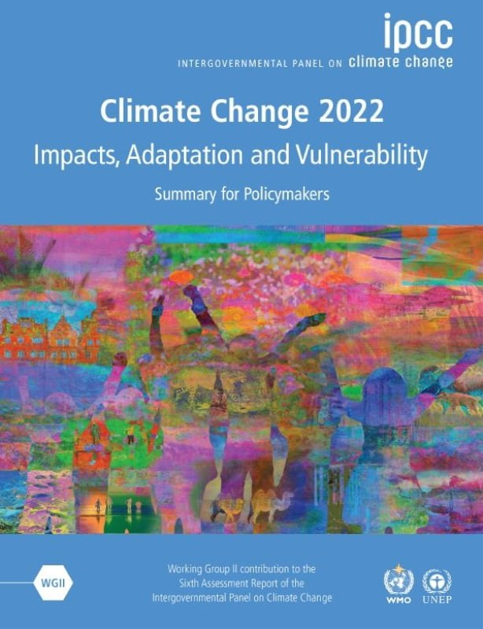
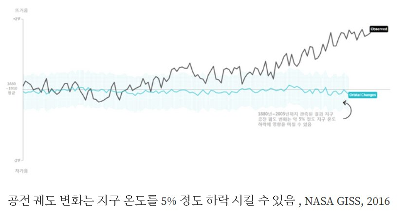
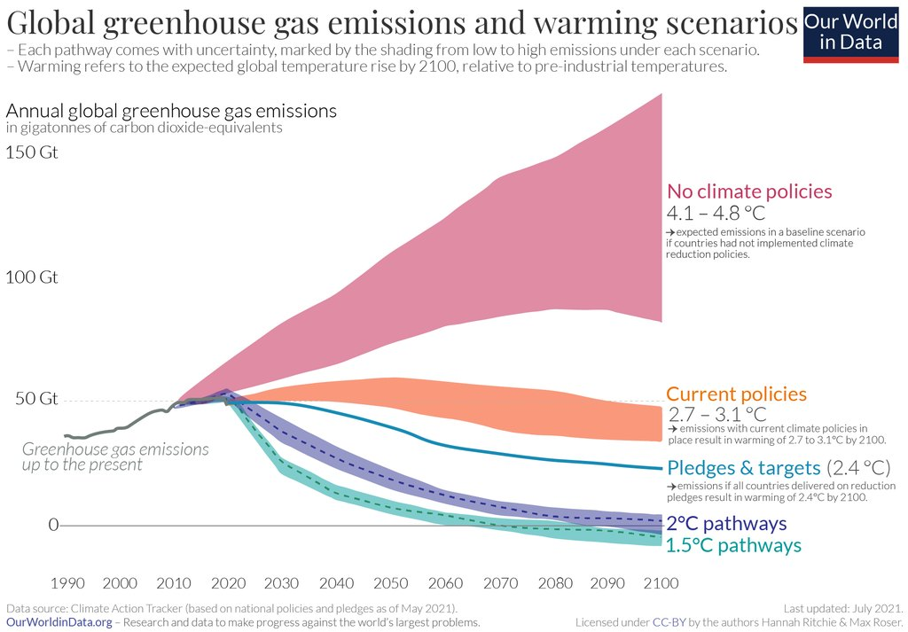
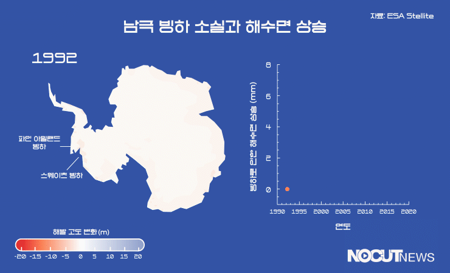
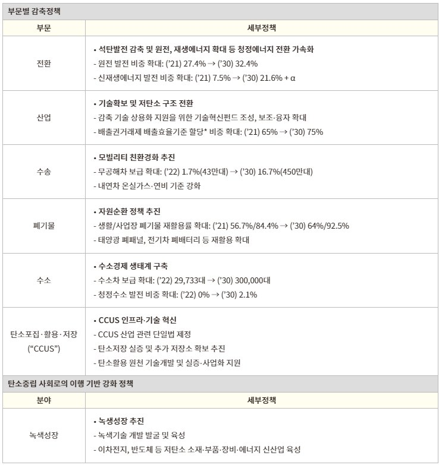
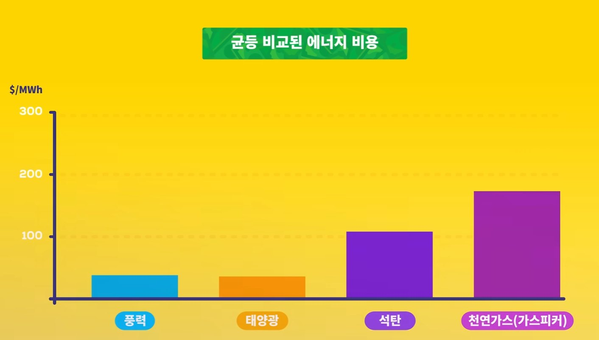
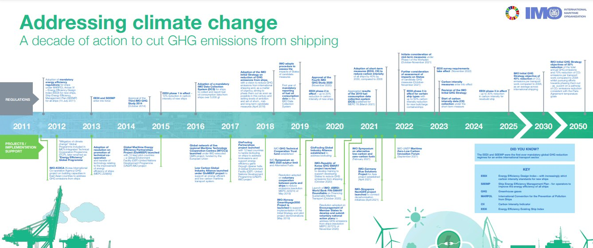
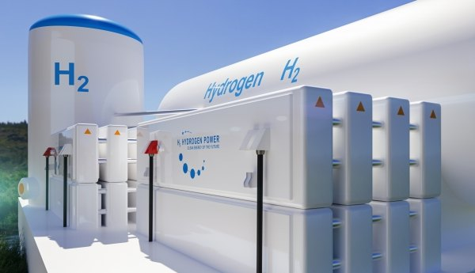
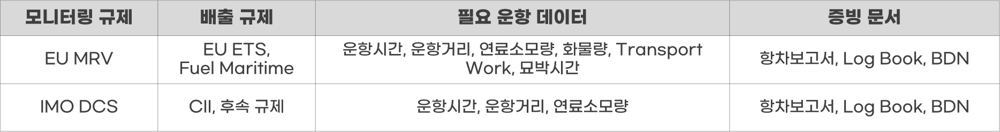

해운업 환경규제 컴플라이언스 · 2026.11.23
글로벌 규제 통합 MRV 및
연료 1톤의 기록: 입력 → 처리 → 검증 → 보고·정산 → 개선 | 이상봉 · (주)랩오투원
안녕하십니까, 랩오투원 이상봉입니다. 오후 두 시, 점심 드시고 제일 졸린 시간에 MRV 데이터 강의를 맡았습니다.
대신 오늘은 숫자를 많이 보여 드리겠습니다. 여러분 회사 돈이 걸린 숫자입니다.
하나만 먼저 말씀드립니다. 오늘 계속 볼 케미컬 탱커 한 척은 운항이 같은데도 2026년분 EU ETS 비용이 2025년분 규칙으로 계산한 것보다 약 46% 많습니다. 그리고 체크박스 하나가 빠지면 그 숫자가 전부 틀립니다.
IMO, EU ETS, FuelEU 제도는 이미 여러 번 들으셨을 겁니다. 오늘은 그 제도가 배에서 입력하는 숫자 한 줄 에서 어떻게 시작되는지 봅니다. 어디서 틀어지는지, 무엇을 맞춰야 비용과 등급을 지키는지도 사례로 봅니다. 사례는 선종과 톤급으로만 표시한 예시 선박입니다.
강사 소개
Project Manager (2021~2026)
Autonomous Ship - Integrated Energy Management System
2005 ~ 2010 , Hanjin Shipping
Expert Committee Member (2022~)
ISO TC8/SC6 Navigation and ship operation
Project Manager (2023)
(ISO15016) Sea Trial Analysis Program
Project Manager (2022~2023)
Autonomous Ship – Data Exchange Code Scheme
먼저 제 소개입니다. 2005년에 상선 기관사로 일을 시작했고, 해운 기술 연구소를 거쳐 지금은 해양 IT 회사를 운영하고 있습니다.
자율운항선박의 에너지 관리 시스템, ISO 15016 시운전 해석 프로그램 과제를 맡았고, ISO TC8/SC6 전문위원으로 있습니다. 배에서 기름을 재던 사람이 지금은 그 숫자를 검증하는 일을 한다고 보시면 됩니다.
구성
차례
전체 차례입니다. 왼쪽부터 1교시, 2교시, 3교시이고 각 교시 아래가 묶음입니다. 화면 왼쪽 위의 위치 표시를 누르면 이 차례가 열리고, 항목을 누르면 그 장으로 갑니다.
개요
강의 구성
개선 결과는 다음 해 기준선과 입력값이 됨
STEP 1
입력
선박 · 정오·출입항 보고
2교시
STEP 2
처리
레그 분할 · EU 범위 · 계산
2교시
STEP 3
검증
육상 담당 · 증빙 대조
3교시
STEP 4
보고·정산
DCS · CII · ETS · FuelEU · UK
1교시 · 3교시
STEP 5
개선
속력 · 오손 · 연료
3교시
1교시 14:00–14:50 환경 규제 배경 · 규제 · 대체 연료 · 대응 방안
2교시 15:00–15:50 선박 보고와 육상 처리 : 동정보고, 연료 행렬, 감면 보고, EU 범위 판정
3교시 16:00–16:50 검증 · 보고·정산 · 개선 : 오류 사례, 허용오차, 성능 분석
오늘 강의의 구성입니다. 위쪽 다섯 칸을 왼쪽부터 보십시오. 선박이 입력하고, 육상에서 항차를 나눠 계산하고, 증빙과 대조해 검증합니다. 그다음 규제별로 보고하고 정산합니다. 마지막에 속력과 연료를 손봐서 비용과 등급을 개선합니다.
아래 세 줄이 시간표입니다. 1교시는 규제의 배경과 규제별 요건, 대체 연료, 대응 방안입니다. 2교시는 선박 보고와 육상 처리이고, 감면 입력도 여기서 봅니다. 3교시는 검증, 보고·정산, 개선입니다. 교시마다 화면에서 숫자를 바꿔 보는 계산과 퀴즈가 있습니다.
다섯 칸 아래 점선 화살표도 보십시오. 개선한 결과는 다음 해의 기준선과 입력값이 됩니다.
1교시 · 14:00–14:50
환경 규제 배경과
규제 배경 → 규제별 요건과 계산 → 대체 연료 → 대응 방안
IMO DCS·CII · EU MRV·ETS · FuelEU Maritime · UK ETS · 중국 MSA
1교시를 시작하겠습니다. 규제가 왜 생겼는지, 규제마다 무엇을 요구하고 어떻게 계산하는지, 대체 연료는 어디까지 왔는지를 차례로 봅니다. 끝에는 이 규제들이 요구하는 데이터를 어떻게 관리하는지로 넘어갑니다.
지구 평균기온 변화
첫 그림은 기온입니다. 왼쪽은 1850년 이후 지구 평균기온입니다. 여러 기관의 관측이 색만 다르고 같은 선을 그립니다. 오른쪽 끝은 1도를 넘었습니다.
오른쪽은 5억 년 동안의 기온입니다. 붉은 선은 빙하가 없던 시기, 푸른 선은 극지방이 빙하로 덮였던 시기입니다. 과거에도 기온은 크게 오르내렸습니다. 온난화가 사람 탓이 아니라는 쪽이 자주 드는 그림입니다. 그러면 지금의 상승은 누가 판정했을까요. 다음 장의 IPCC입니다.
IPCC와 평가보고서

• IPCC는 유엔환경프로그램 및 세계기상기구(WMO)가 1988년 UN총회 결의안 제43조에 의해 공동으로 설립한 기후변화에 관한 정부간 협의체.
• 5~6 년 간격으로 기후변화 평가보고서를 발간해서 기후변화 추세 및 원인규명 , 기후변화에 따른 사회경제적 영향 , 대응 전략에 대한 과학적 정보 를 제공하고 정부간 협상의 근거 자료 로 활용되고 있음 .
1990 년
온난화가 인간 활동인지 확실하지 않음
1995 년
온난화가 인간 활동이 영향의 결과 같음
2001 년
온난화가 인간 활동일 확률 67%
2007 년
온난화가 인간 활동일 확률 90%
2014 년
온난화가 인간 활동일 확률 95%
2022 년
온난화가 인간 활동의 결과 100% 확실
IPCC는 1988년에 유엔환경계획과 세계기상기구가 함께 만든 정부 간 협의체입니다. 5~6년마다 평가보고서를 냅니다. 이 보고서가 정부 간 협상의 근거 자료로 쓰입니다.
아래 표를 위에서부터 읽겠습니다. 1990년에는 인간 활동 때문인지 확실하지 않다고 했습니다. 2001년에는 확률 67%, 2007년 90%, 2014년 95%입니다. 2022년에는 인간 활동의 결과가 확실하다고 썼습니다. 30년 동안 표현이 한 번도 물러서지 않았습니다.
자연 요인으로는 설명되지 않는 기온 상승

궤도 변화 , 태양의 온도 변화 , 화산 활동 , 오존 , 산림벌채 ,
미세먼지 → 온실화 원인 아님
그러면 자연 요인 때문일 수는 없을까요. 그림의 검은 선이 관측한 기온입니다. 가운데 하늘색 선은 공전 궤도 변화가 만드는 기온 변화입니다. 하늘색 선은 거의 수평이고, 검은 선만 위로 벌어집니다.
태양 활동, 화산, 오존, 산림벌채, 미세먼지도 같은 방식으로 따져 봤습니다. 이런 요인만으로는 지금의 상승이 설명되지 않습니다.
정책별 배출 경로와 기온 전망

앞으로는 어떻게 될까요. 정책에 따라 배출량이 어떻게 갈리는지 그린 그림입니다. 가로가 연도, 세로가 연간 온실가스 배출량입니다.
맨 위 분홍 띠가 아무 정책이 없는 경우입니다. 2100년에 4.1~4.8도 오릅니다. 주황 띠가 현재 정책이고 2.7~3.1도입니다. 그 아래 파란 선은 각국이 약속을 지킨 경우이고 2.4도입니다. 1.5도 경로는 맨 아래 청록 띠입니다. 주황 띠와 청록 띠 사이가 지금 정책과 1.5도 목표의 거리입니다.
1.5℃와 2.0℃의 차이
지구온난화 1.5℃ 제한 위해 전 세계 온실가스 순 배출량을 2030 년까지 2019 년 대비 43% 감축 해야 할 것 .
자료 출처 : http://planet-times.com
1.5도와 2도는 0.5도 차이입니다. 위 줄이 1.5도, 아래 줄이 2도일 때의 피해입니다. 산호초는 1.5도에서 70~90%가 위험하고 2도에서는 99%입니다. 해양 어획량 감소는 150만 톤에서 300만 톤으로 두 배가 됩니다. 해수면도 0.1미터 더 오릅니다.
그래서 1.5도로 막으려면 2030년까지 순 배출량을 2019년 대비 43% 줄여야 한다는 숫자가 나왔습니다.
현재 1.1℃ 온난화와 기상 이변
지금은 이미 1.1도 올랐습니다. 지도는 그동안의 기상 이변입니다. 색으로 구분했습니다. 청록이 가뭄, 파랑이 홍수, 주황이 폭염, 회색이 한파입니다. 대륙마다 빠진 곳이 없습니다.
1.5도를 넘으면 이런 일이 더 빨라진다는 것이 경고의 내용입니다. 바다 쪽 변화를 한 장만 더 보겠습니다.
남극 빙하 소실과 해수면 상승 (1)

남극입니다. 왼쪽 지도의 색은 빙하 높이가 얼마나 변했는지입니다. 붉을수록 많이 낮아진 곳입니다. 오른쪽 그래프는 그 빙하가 녹아 해수면이 몇 밀리미터 올랐는지입니다. 1992년부터 시작해 해가 갈수록 점이 위로 올라갑니다.
빙하가 줄어든 만큼 바다가 높아집니다. 과학 쪽 근거는 여기까지입니다.
IPCC 보고서의 결론
2018 년
10 월
지구온난화 1.5℃ 특별보고서
현재 속도로 지구온난화가 지속되면 2030~2052 년 사이 1.5℃ 초과 . 2100 년까지 1.5℃ 로 제한하기 위해서는 2030 년까지 2010 년 대비 이산화탄소 배출량 최소 45% 감축 필요
2019 년
8 월
「기후변화와 토지」 특별보고서
토지 변화가 폭염 , 호우 , 가뭄 등 극한현상 빈도와 강도 증가 를 초래함 . 이에 지속가능한 토지 이용 정책 등의 효율성 향상 강조
2019 년
9 월
「해양 및 빙권 」 특별보고서
해수면 상승 및 이상 고수온 증가로 연안 · 수산 재해 가능성 증가 (2100 년 해수면 상승 예측을 기존 보고서 (2014 년 ) 보다 10cm 더 높여 )
2021 년
7 월
제 6 차 평가보고서 (AR6): (WG1) 과학적 근거
이번 세기 중반까지 현 수준의 온실가스 배출량을 유지한다면 2021~2040 년 중 1.5 도 지구온난화를 넘을 가능성이 높다
2022 년
3 월
제 6 차 평가보고서 (AR6): (WG2) 영향 , 적응 및 취약성
온난화가 생물다양성 손실 , 지속가능하지 않은 소비 , 사회적 불평등과 같은 다른 많은 지구적 위협들과 상호 작용해 얼마나 더 악화할 수 있는지를 진단
2022 년
4 월
제 6 차 평가보고서 (AR6): (WG3) 기후변화 완화
지구온난화 1.5℃ 제한 위해 전 세계 온실가스 순 배출량을 2030 년까지 2019 년 대비 43% 감축 해야 할 것
온난화 는 명확한 인간 활동이고 아직 골든타임 (1.5 ℃ 제한 ) 이 있다 .
하지만 강한 행동력이 필요한 목표임 .
이 근거들을 IPCC가 보고서 여섯 건으로 냈습니다. 2018년 1.5도 특별보고서부터 2022년 6차 평가보고서까지입니다. 표를 다 읽지는 않겠습니다.
맨 아래 두 줄이 결론입니다. 온난화는 인간 활동의 결과이고, 1.5도로 막을 시간은 아직 있습니다. 다만 강한 행동이 있어야 닿는 목표입니다.
국가온실가스감축목표(NDC)
국가명
목표년도
목표치
EU
2030 년
1990 년 대비 55% 감축
영국
2030 년
1990 년 대비 68% 감축
미국
2030 년
2005 년 대비 50~52% 감축
캐나다
2030 년
2005 년 대비 40~45% 감축
일본
2030 년
2013 년 대비 46% 감축
중국
2030 년
2005 년 대비 집약도 60~65% 감축
한국
2030 년
2018 년 대비 40% 감축
지구온난화 1.5℃ 제한 위해 전 세계 온실가스 순 배출량을 2030 년까지 2019 년 대비 43% 감축 해야 할 것 .
“NDC( 국가온실가스감축목표 ) 를 설정하여 감축 이행 ”
그 행동이 국가 감축목표, NDC입니다. 표는 나라별 2030년 목표입니다. EU는 1990년 대비 55%, 영국은 68%입니다. 우리나라는 2018년 대비 40%입니다. 나라마다 기준 연도가 다르다는 점도 보입니다.
표는 2030년 목표이고, 그 뒤로 각국이 2035년 목표를 새로 내고 있습니다.
NDC의 법적 강제력

“ 천문학적인 비용 지출 필요 ”
VS
“1.5℃ 이상 상승 시 지구적 재앙 ”
그런데 NDC에는 법적 강제력이 없습니다. 화면처럼 두 주장이 맞섭니다. 한쪽은 비용이 천문학적이라고 합니다. 다른 쪽은 1.5도를 넘으면 재앙이라고 합니다. 목표를 못 지켜도 제재가 없습니다. 그러면 목표는 소용이 없었을까요.
강한 행동이 기술을 발전시킴

소용이 있었습니다. 강한 목표가 기술을 끌어올렸습니다. 막대는 발전 단가입니다. 왼쪽 두 개가 풍력과 태양광, 오른쪽 두 개가 석탄과 천연가스입니다. 풍력과 태양광이 석탄, 가스보다 낮아졌습니다.
경제성장과 배출량 감축
경제는 어땠을까요. 2009년부터 2019년까지 네 나라의 통계입니다. 초록 막대가 GDP, 남색 막대가 CO₂ 배출량입니다. 네 나라 모두 GDP는 올라가고 배출량은 내려갔습니다. 맨 오른쪽 미국도 배출량이 4% 줄었습니다.
성장과 감축을 함께 할 수 있다는 사례입니다. 배경은 여기까지이고, 이제 해운으로 들어갑니다.
해운 환경 규제 · 전체 구조
해운 환경 규제가 선박에 묻는 네 가지
1 2 3 4 ↻ 다시 재생 비EU 해역 EU/EEA 해역
출항 입항
1 연료를
보고 제도 · IMO DCS · EU MRV 연료량·거리·시간을 기록해 매년 보고
벌금이 아니라 기록 의무 · 아래 세 규제의 계산 근거
2 운송한 일에 비해
IMO CII CO₂ ÷ (선박 크기 × 운항 거리)로 A~E 등급
돈을 내지 않음 · 낮은 등급이면 시정 계획
3 배출한 만큼
EU ETS · UK ETS 배출 1 tCO₂e마다 배출권 1개를 사서 제출
배출량에 비례해 비용 발생
4 어떤 연료를
FuelEU Maritime 연료 에너지 1 MJ당 온실가스가 한도 이하인지 확인
한도를 넘으면 벌금 · 한도는 5년마다 강화
해운 규제는 이름이 많습니다. 그런데 선박에 묻는 것은 네 가지뿐입니다. 화면의 선박이 비EU 항구에서 EU 항구로 가면서 연료를 태우고 CO₂를 냅니다.
첫째, 연료를 얼마나 썼는가. 보고 제도입니다. IMO의 DCS와 EU의 MRV입니다. 보고만으로 돈을 내지는 않습니다. 하지만 아래 세 규제가 모두 이 보고값으로 계산됩니다.
둘째, 운송한 일에 비해 배출이 많은가. IMO의 CII입니다. CO₂를 선박 크기와 운항 거리로 나눠 A에서 E까지 등급을 매깁니다.
셋째, 배출한 만큼 값을 치렀는가. EU ETS와 UK ETS입니다. 배출 1톤마다 배출권 1개를 사서 제출합니다.
넷째, 어떤 연료를 썼는가. FuelEU Maritime입니다. 에너지 1메가줄당 온실가스가 한도 이하인지 봅니다.
맨 아래 줄을 보십시오. 네 가지 모두 연료량, 거리, 시간, 기항 항구라는 같은 원천 데이터로 계산합니다. 정오보고 한 건이 틀리면 네 곳이 함께 틀립니다. 먼저 이 규제들을 누가 만드는지부터 보겠습니다.
선박은 국제해사기구(IMO)가 관리

국제 해운은 국제해사기구, IMO가 관리합니다. 화면은 IMO가 2011년부터 낸 조치를 연표로 그린 것입니다. 위쪽이 규제입니다. EEDI와 SEEMP로 시작해 DCS, 2018년 초기 전략, CII로 이어집니다. 오른쪽 끝이 2030년과 2050년 목표입니다.
여기에 EU와 영국의 제도가 더해집니다. 다음 장에서 종류를 나눠 보겠습니다.
규제 비교 · 구분
보고 제도와 규제 조치의 구분
① 보고 제도 하는 일 보고 단위 결과물 이 데이터를 쓰는 규제 IMO DCS 연료 소비량·거리·운항시간을 수집 선박 · 연간 적합확인서(SoC) CII · (향후) NZF EU MRV EU 기항 선박의 배출량을 측정·보고·검증 선박 · 항차별 → 연간 적합증서(DoC) EU ETS · FuelEU (보고 체계 공유)
② 규제 조치 목적 판정 지표 의무와 제재 선사의 대응 수단 IMO CII 운항 효율 개선 수송량당 CO₂ · gCO₂/(DWT·nm) A~E 등급 · D 3년 연속 또는 E → 시정조치계획 감속 · 선체 관리 · 대기시간 단축 EU ETS 배출 총량 감축 (배출에 가격 부과) tCO₂e 배출권(EUA) 제출 · 미제출 €100/t 연료 절감 · 저탄소 연료 FuelEU 저탄소 연료로 전환 에너지당 GHG · gCO₂e/MJ 한도 초과 시 벌금 · 흑자는 이월·풀링 바이오연료·LNG 혼합 · 육상전원 UK ETS 영국 국내 해운 배출 감축 tCO₂e 배출권(UKA) 제출 EU ETS와 같음
보고 제도는 데이터를 모으고 검증 · 등급·비용·벌금은 규제 조치에서 발생 · 보고값이 틀리면 규제 조치의 결과도 틀림
규제 이름을 두 종류로 나누면 덜 헷갈립니다. 위 표가 보고 제도입니다. IMO DCS와 EU MRV는 데이터를 모으고 검증하는 체계입니다. 여기서는 등급도 비용도 생기지 않습니다. 결과물은 적합확인서와 적합증서입니다.
아래 표가 규제 조치입니다. CII는 DCS 데이터로 등급을 매깁니다. EU ETS는 MRV로 검증된 배출량만큼 배출권을 내게 합니다. FuelEU는 MRV와 같은 보고 체계 위에서 연료의 온실가스 집약도를 봅니다. UK ETS는 영국 자체 보고서로 정산합니다.
맨 아래 줄을 보십시오. 등급, 비용, 벌금은 규제 조치에서 생기지만 계산은 보고값으로 합니다. 보고값이 틀리면 등급과 비용이 같이 틀립니다. 2교시와 3교시는 위 표의 데이터를 정확히 만드는 방법입니다.
규제 6종 비교
규제별 대상·범위·지표·의무
규제 대상 선박 지리 범위 지표 의무 IMO DCS 5,000GT 이상 국제항해선 전 세계 연료 소비량 (유종·기기별) 연간 보고 · SoC IMO CII 5,000GT 이상 · 선종 지정 전 세계 gCO₂ / (DWT·nm) A~E 등급 · D 3년 연속 또는 E 1회 시 시정조치계획 EU MRV 5,000GT 이상 화물·여객선 EU 기항 항차 + EU 항내 CO₂·CH₄·N₂O · TtW(연소 단계) 항차별 모니터링 · 연간 보고 · DoC EU ETS 5,000GT 이상 화물·여객선 EU 내 100% · EU↔비EU 50% · 항내 100% tCO₂e 배출권(EUA) 제출 FuelEU 5,000GT 초과 화물·여객선 ETS와 동일 (100/50%) gCO₂e/MJ · WtW(생산~연소 전주기) 집약도 한도 준수 · 잔액 적자 시 벌금 UK ETS 5,000GT 이상 선박 영국 국내항해 + 영국 항내 활동(접안·항내 이동) tCO₂e 배출권(UKA) 제출
이번에는 여섯 개를 한 표에 놓았습니다. 가로로 네 칸입니다. 어떤 배가 대상인지, 어느 바다에서 적용되는지, 무엇을 재는지, 그래서 무엇을 해야 하는지입니다.
[IMO 두 줄] IMO는 전 세계가 범위입니다. DCS는 연료 소비량을 보고하는 제도입니다. CII는 그 연료에서 나온 CO₂를 재화중량과 거리로 나눠 등급을 매깁니다.
[EU 세 줄] EU는 세 개가 한 묶음입니다. MRV로 재고, ETS로 배출권을 내고, FuelEU로 연료의 질을 봅니다. 범위는 EU 항구를 드나드는 항차와 EU 항내입니다.
[FuelEU 줄] 대상 선박 칸에서 글자 하나가 다릅니다. 다른 줄은 총톤수 5천 이상이고 FuelEU만 5천 초과입니다. 총톤수가 딱 5천인 배는 MRV와 ETS에는 들어가고 FuelEU에는 안 들어갑니다.
[UK 줄] 영국은 올해 7월에 시작했습니다. 지금은 영국 국내항해와 영국 항내 활동, 곧 접안과 항내 이동만 봅니다. 선종은 가리지 않습니다. 다만 군함이나 어선처럼 빠지는 배가 따로 정해져 있습니다.
지표 칸을 한 번 더 보십시오. 톤, 톤마일당 그램, 메가줄당 그램입니다. 같은 연료를 재는데 단위가 다 다릅니다. 그래서 규제별로 따로 집계하면 어긋납니다. 원천 데이터 한 벌에서 뽑아야 한다는 이야기가 뒤에 계속 나옵니다.
표 아래 줄은 책임주체입니다. EU는 선주가 원칙이고 위임 문서가 있으면 ISM 회사입니다. 영국은 등록선주가 원칙입니다. 다음 장은 이 규제들을 두 축으로 나눈 그림입니다.
규제의 두 축
규제 분류: 총량·집약도, 설계·운항
총량 (tCO₂e) 집약도 (gCO₂/(DWT·nm), gCO₂e/MJ) 설계 (제원) 운항 (실적) 해당 규제 없음
EU MRV · EU ETS UK ETS IMO DCS (보고) 연간 배출량 → 배출권 제출
IMO CII (A~E 등급) FuelEU (GHG 집약도) IMO NZF GFI (예정) 배출 ÷ 수송작업 또는 에너지
EEDI (신조선) EEXI (현존선) 시운전·제원으로 1회 인증 EPL 출력 제한
오늘 범위: 운항 규제 설계 규제: 1회 인증
운항 규제: 매년 , 정오보고 누적 → 등급·비용
총량 · 집약도 총량: 연간 배출량
집약도: 배출 ÷ 수송작업(CII) 또는 에너지(FuelEU)
선박 환경규제는 두 축으로 나뉩니다. 세로는 총량을 보느냐 집약도를 보느냐입니다. 가로는 설계 제원으로 보느냐 실제 운항으로 보느냐입니다.
왼쪽 아래 EEDI와 EEXI는 설계 규제입니다. 시운전 자료와 제원으로 한 번 인증받으면 끝납니다. 입학시험에 가깝습니다. 오늘 다룰 것은 오른쪽 절반, 해마다 치르는 기말고사입니다. 오른쪽 위는 배출 톤수를 세는 EU MRV, EU ETS, UK ETS입니다. 오른쪽 아래는 비율을 보는 CII와 FuelEU, 그리고 IMO가 준비 중인 GFI입니다.
집약도 규제는 분모도 맞아야 합니다. CII는 재화중량과 거리, FuelEU는 에너지가 분모입니다. 연료를 정확히 적어도 거리가 5% 틀리면 CII도 5% 틀립니다. 3교시에 다시 봅니다. 다음 장은 이 규제들이 어느 바다에서 적용되는지입니다.
규제 지도
선박 한 척에 적용되는 규제 관할
IMO · 전 세계 (5,000GT 이상 국제항해)
DCS·CII (5,000GT 이상) · EEXI·SEEMP (400GT 이상) · NZF(협상 중)
EU / EEA
MRV · ETS · FuelEU
EU 항내 체류 100%
EU ↔ EU 항차 100%
EU ↔ 비EU 항차 50%
비EU ↔ 비EU 항차 0% 지역계수 (ETS·FuelEU 공통)
UK UK ETS (2026.7~) 국내항해 · 항내 활동 (접안 · 항내 이동)
중국 MSA 에너지소비 보고 400GT 이상 기항선 출항 전 항차 보고
사례 유럽 정기 기항 컨테이너선 1척
IMO DCS·CII: 1년 전체
EU MRV·ETS·FuelEU: EU 관련 항차·항내만
UK ETS: 영국 국내항해·항내 활동 만
중국 기항 시: 출항 전 직전 항차 에너지소비 보고
항해일지 1권 → 집계 4개 이상
중국은 배출권이나 벌금이 아닌 보고 제도 · 상세는 "중국 MSA 선박 에너지소비 데이터 보고" 장
배 한 척이 받는 규제를 지도로 그리면 네 겹입니다. 가장 바깥이 IMO입니다. 총톤수 5천 이상 국제항해 선박이면 어디를 다니든 1년 전체 데이터가 대상입니다.
그 안에 EU와 EEA가 있습니다. EU 항내 체류와 EU 항구 사이 항차는 100%입니다. EU와 비EU를 잇는 항차는 50%, 비EU 사이는 0%입니다. 영국은 따로 갑니다. 올해 7월부터 UK ETS가 해운에 들어왔고, 지금은 영국 국내항해와 항내 활동만 봅니다. 중국은 총톤수 400 이상 선박이 중국 항구를 떠나기 전에 직전 항차의 에너지 소비를 해사국에 보고하게 합니다. 배출권이나 벌금이 없는 보고 제도입니다.
오른쪽 사례를 보십시오. 유럽에 정기 기항하는 컨테이너선 한 척입니다. 항해일지는 한 권인데 집계는 네 개 이상 나옵니다. 같은 원천 데이터를 규제별로 다시 나누는 것입니다. 이 규제들이 언제 들어왔는지는 다음 장 연표에 있습니다.
타임라인
규제 도입 연표 2018~2050: 연도별 시행 내용
2018
EU MRV
모니터링 개시
2019
IMO DCS
보고 개시
2023
CII · EEXI
등급 시작
CII 감축률 5%
2024
EU ETS
배출량의 40% 제출
MRV에 CH₄·N₂O 추가
2025
FuelEU
연료 집약도 −2%
ETS 제출 70%
2026
ETS 제출 100%
+ CH₄·N₂O
DCS 세분화
UK ETS 7/1
CII 감축률 11%
2027
ETS 해양작업선
EU · UK 모두 2027.1.1~
CII 감축률 13.625%
2028
IMO NZF
원안 개시 시점
(지연 가능성)
2030
FuelEU −6%
육상전원(OPS) 의무
CII 감축률 21.5%
2050년경
넷제로
IMO 2023 전략
FuelEU −80%
ETS 제출 40 → 70 → 100% 그해 배출량 가운데 배출권을 내야 하는 비율 · 2026년분부터 전량
CII 감축률 5 → 21.5% 2019년 기준선보다 낮춰야 하는 탄소집약도 비율 · 매년 강화
FuelEU −2 → −80% 2020년 기준값 91.16 gCO₂e/MJ보다 낮춰야 하는 연료 온실가스 집약도 · 5년마다 강화
2026년 · ETS 100% 제출 · CH₄·N₂O 포함 · UK ETS 시행 · DCS 양식에 거리 항해/비항해 구분 행 추가 (MEPC.413(84), 적용 연도는 기국·선급(RO) 확인)
이번에는 시간 순서입니다. 칸 안에 퍼센트가 많은데, 종류가 셋이고 뜻이 서로 다릅니다. 아래 세 칸에 풀어 두었습니다. ETS의 퍼센트는 그해 배출량 가운데 배출권을 내야 하는 비율입니다. CII 감축률은 2019년 기준선보다 낮춰야 하는 비율입니다. FuelEU의 마이너스 퍼센트는 연료의 온실가스 집약도를 2020년 기준값보다 낮춰야 하는 비율입니다.
왼쪽부터 보겠습니다. 2018년 EU MRV, 2019년 IMO DCS입니다. 처음 몇 년은 보고만 했습니다. 2023년 CII로 등급이 붙었고, 2024년 EU ETS로 비용이 붙었습니다. 2025년 FuelEU부터는 연료의 질까지 봅니다.
청록색 칸이 올해 2026년입니다. ETS 제출 비율이 40%, 70%를 거쳐 100%가 됐고 메탄과 아산화질소가 들어갔습니다. IMO DCS는 소비기기별 세분화가 적용됩니다. 5월에는 거리를 항해와 비항해로 나눠 적는 행이 양식에 추가됐습니다. 결의문에 날짜가 없어서, 이 행을 어느 해 데이터부터 쓰는지는 기국이나 선급에 확인하셔야 합니다. 7월에는 UK ETS가 시작됐습니다. CII 감축률은 11%가 됐습니다.
올해 데이터부터 ETS 100%입니다. 올해 정오보고에 틀린 숫자가 있다면 지금 고쳐야 합니다. 마감 달력은 3교시 보고·정산에서 봅니다. 이 퍼센트들이 2050년 넷제로와 어떻게 이어지는지는 다음 장 그림에 있습니다.
2050 넷제로 경로
2050 넷제로까지의 감축 경로와 규제별 역할
감축률 (각 기준 연도 대비) 0% −20% −40% −60% −80% −100% 2018 2020 2025 2030 2035 2040 2045 2050 2030년 −20~30% 2040년 −70~80% 2050년경 넷제로 IMO 목표 범위 CII −5% −21.5% −2% −6% −14.5% −31% −62% FuelEU −80% 2026 현재 ① 측정 · EU MRV 2018, IMO DCS 2019 ② 효율 · EEXI·CII 2023~ ③ 가격 · EU ETS 2024~, UK ETS 2026~ ④ 연료 전환 · FuelEU 2025~, IMO NZF 협상 중 규제 단계
세 선은 기준 연도와 재는 대상이 달라 높이를 서로 직접 비교할 수 없음 · 방향과 강화 속도를 보는 그림 · IMO 2030에는 탄소집약도 −40%, 무배출·준무배출 기술·연료·에너지 5~10% 목표도 포함
1 측정 EU MRV 2018 · IMO DCS 2019 배출량을 같은 방식으로 기록 · 이후 모든 규제의 계산 근거
2 효율 EEXI · CII 2023~ 같은 화물을 더 적은 연료로 · 감축률이 매년 높아짐
3 가격 EU ETS 2024~ · UK ETS 2026~ 배출 1톤마다 배출권 비용 · 감축 투자가 이익이 되게 함
4 연료 전환 FuelEU 2025~ · IMO NZF(협상 중) 연료 자체의 온실가스 한도를 5년마다 낮춤 · 2050년 −80%
효율 개선만으로는 배출이 0이 되지 않음 → 2040년 이후 감축의 대부분은 연료 전환 이 맡음 · 가격은 화석연료와 대체연료의 비용 차이를 줄이는 역할
앞 장의 퍼센트들을 한 그림에 올렸습니다. 가로가 연도, 세로가 감축률입니다. 맨 아래가 0%이고 위로 갈수록 많이 줄인 것입니다.
남색 점선이 IMO가 2023년에 정한 목표입니다. 2008년 대비 총배출량을 2030년까지 20%, 가능하면 30% 줄입니다. 2040년까지는 70%, 가능하면 80%입니다. 2050년경에 넷제로입니다. 이 선은 목표입니다. 개별 선박에 의무를 주는 것은 나머지 두 선입니다.
주황색 계단이 CII 감축률입니다. 2023년 5%에서 시작해 올해 11%, 2030년 21.5%까지 매년 올라갑니다. 선박이 그대로여도 등급이 내려가는 이유가 이 계단입니다. 2031년 이후는 검토 중입니다.
청록색 계단이 FuelEU 한도입니다. 2025년 2%로 낮게 시작합니다. 그 뒤 5년마다 6, 14.5, 31, 62, 80%로 갈수록 가파릅니다. 2040년 이후 남색 점선을 따라가는 것은 이 선입니다.
오른쪽은 규제의 역할 네 단계입니다. 측정하고, 효율을 높이게 하고, 배출에 가격을 붙이고, 마지막에 연료를 바꾸게 합니다. 효율 개선만으로는 배출이 0이 되지 않습니다. 그래서 2040년 이후 감축은 대부분 연료 전환이 맡습니다. ETS의 40, 70, 100%는 이 그림의 선이 아닙니다. 3단계 가격에 해당합니다.
세 선은 기준 연도와 재는 대상이 다릅니다. 높이를 서로 비교하지 마시고 방향과 속도만 보십시오. 이제 규제를 하나씩 봅니다. IMO부터입니다.
IMO CII · 등급 구조
CII 등급: 선박이 그대로여도 기준선이 매년 낮아지는 구조
2023
C
▶ 2023 → 2030 재생 ◀ 이전 해 다음 해 ▶
D 3년 연속 또는 E 1년 → 시정 계획 제출 (SEEMP에 반영)
IMO 규제 가운데 등급이 나오는 것이 CII입니다. CII는 선박의 한 해 CO₂를 선박 크기와 운항 거리로 나눈 값입니다. 작을수록 좋습니다.
화면 왼쪽의 가로선이 이 선박의 CII 실적입니다. 2019년 기준선의 93% 수준이고, 해마다 똑같이 운항한다고 가정했습니다. 색 띠는 등급 구간입니다. 위쪽이 E, 아래쪽이 A입니다.
재생을 누르겠습니다. 해가 바뀔 때마다 등급 구간 전체가 아래로 내려갑니다. 요구값이 2023년 5%에서 2030년 21.5%까지 낮아지기 때문입니다.
이 선박은 아무것도 바꾸지 않았습니다. 그런데 2026년까지 C, 2027년부터 D, 2030년에는 E가 됩니다. D가 3년 연속이거나 E가 한 번 나오면 시정 계획을 내야 합니다. 등급을 지키는 수단은 아래 줄의 감속, 선체 청소, 저탄소 연료입니다.
등급 경계는 벌크선 값을 썼습니다. 선종마다 경계 비율이 다릅니다. 이 CII를 계산하는 원천이 다음 장의 DCS입니다.
IMO DCS · MEPC.385(81)
IMO DCS: 2026년 데이터부터 기기별·항해/비항해별 보고
적용 시점은 기국 안내 기준 · 2025.8.1 이후 인도 신조선은 인도일부터
요구 데이터 (세분화)
유종별 × 소비기기별 소비량 (주기관·발전기·보일러·기타)
비항해(Not under way) 중 소비량육상전원(OPS) kWh + 공급자 증빙화물량·수송작업 (컨테이너는 TEU 와 중량)
측정방법: 유량계 / 탱크 측심 / BDN
거리도 항해/비항해 구분 행 추가 (MEPC.413(84), 적용 연도는 기국·RO 확인)
항해 = FAOP(항해 개시) ~ EOSP(항해 종료), 운하 통항은 비항해 (MEPC.401(83))
예: 하루 32.5 t의 기기별 분할 기존: ME 32.5 t (한 칸) ME 26.0 GE 4.2 회색 = 보일러 1.8 · 연회색 = 기타 0.5
사례 기기 구분 없이 ME에 합산해 온 선박
연간 총량 = BDN → 기존 DCS 검증 통과
2026년 세분화 요건: 기기별 분리 불가
검증 범위: 총량 + 기기별 분할 방식
CII의 원천 데이터를 모으는 제도가 IMO DCS입니다. 올해 양식이 바뀌었습니다. 2025년 8월 발효된 MEPC 385(81) 개정으로, 대부분의 기국에서 올해 1월 데이터부터 세분화가 적용됩니다. 작년 8월 이후 인도된 신조선은 인도일부터입니다.
왼쪽 목록을 위에서부터 보겠습니다. 가장 큰 변화는 소비기기별 구분입니다. 주기관, 발전기, 보일러, 기타로 나눠 유종별로 보고합니다. 접안이나 투묘처럼 항해 중이 아닌 시간의 소비량도 따로 냅니다. 육상전원을 받았으면 킬로와트시와 공급자 증빙을 냅니다. 컨테이너선은 TEU도 냅니다. 거리를 항해와 비항해로 나누는 행은 올해 5월 MEPC 84에서 추가됐습니다. 결의문에 날짜가 없어서 적용 연도는 기국이나 선급에 확인하셔야 합니다. CII 분모는 총거리 그대로입니다.
오른쪽 막대가 예시입니다. 하루 32.5톤을 예전에는 주기관 한 칸에 적었습니다. 이제는 주기관 26.0, 발전기 4.2, 보일러 1.8, 기타 0.5로 나눠야 합니다.
아래 사례처럼 아직 주기관 칸 하나에 다 몰아 적는 배가 있습니다. 예전에는 연간 총량이 BDN과 맞으면 통과했습니다. 이제는 발전기가 몇 톤 썼느냐고 물으면 답할 데이터가 없습니다. 정오보고 양식부터 바꿔야 하는 문제입니다. 연초에 정비하지 않으면 1년치를 전부 추정해야 합니다. 2교시에 사례로 다시 봅니다. 이 데이터로 CII를 계산하는 산식이 다음 장입니다.
IMO CII
IMO CII: 산식과 연도별 감축률(Z)
연도 2023 2024 2025 2026 2027 2028 2029 2030 감축률 Z 5% 7% 9% 11% 13.625% 16.25% 18.875% 21.5%
Attained CII = Σ (FCj × CF,j ) / (Capacity × Dt )
Required CII = (1 − Z/100) × a · Capacity−c
Capacity = DWT (자동차운반선·크루즈·RoRo·RoPax는 GT). Z는 2030년까지 확정(MEPC.400(83)). 2031년 이후는 CII 2단계 검토에서 결정.
요구 데이터 : DCS 데이터 전부 + 제원(DWT/GT, 선종, 내빙등급) + 보정 근거(리퍼·STS·항차조정)
등급 = Attained ÷ Required (벌크선 예)
A
B
C
D
E
< 0.86 0.86 – 0.94 0.94 – 1.06 1.06 – 1.18 > 1.18 Required = 1.00
D 3년 연속 또는 E 1회 → 시정조치계획 · SEEMP 개정·검증
CII 산식은 두 줄입니다. 달성값의 분자는 연료에 배출계수를 곱한 CO₂입니다. 분모는 재화중량 곱하기 총 운항거리, 곧 수송한 일의 양입니다. 요구값은 선종별 기준선에서 매년 Z만큼 깎습니다. 위 표에서 올해 Z가 11%, 내년 13.625%, 2030년 21.5%입니다. 해마다 2.6%포인트쯤 올라갑니다.
등급은 달성값을 요구값으로 나눈 비율로 정합니다. 아래 띠가 벌크선 예시입니다. 0.94에서 1.06 사이가 C입니다. 1.06을 넘으면 D, 1.18을 넘으면 E입니다. D를 3년 연속 받거나 E를 한 번 받으면 시정조치계획을 세웁니다. SEEMP를 고치고 다시 검증받아야 합니다.
데이터 담당이 볼 곳은 분모입니다. 거리 1% 차이가 그대로 CII 1% 차이입니다. 등급 경계 근처에 있는 배는 거리 하나로 C와 D가 갈립니다. 정오보고 한 건으로 직접 계산해 보겠습니다.
사례 · CII 계산
LNG선 A: 정오보고 1건의 CII 산정 5단계
사례 예시 선박 · LNG선 A · 항해 중 정오보고 1건
입력 항목 값 항해거리 / 시간 427 nm / 24 h 주기관 1·2 연료 BOG + LSFO 발전기 연료 BOG + ULSMGO 자연 증발가스(BOG) 88.31 t
A
B
C
D
E
0.78 0.92 1.10 1.37 0.94 (당일)
LNG선 등급 경계 · 100,000 DWT 미만: 0.78·0.92·1.10·1.37 / 100,000 DWT 이상: 0.89·0.98·1.06·1.13
1 연료 → CO₂ Σ (유종별 소비량 × 배출계수) BOG 88.31 × 2.750 = 242.9 t LNG와 BOG는 합산해 계수 2.750 · LSFO 3.151 · ULSMGO 3.206 소비분을 더해 그날 CO₂ 합계
2 수송작업 재화중량(DWT) × 항해거리 DWT × 427 nm 화물 실적이 아닌 선박 제원 DWT 사용 · 거리는 대지거리
3 달성값 (Attained) ① CO₂(g) ÷ ② 수송작업(t·nm) = 6.132 1톤을 1해리 옮기는 데 낸 CO₂ 그램 수
4 요구값 (Required) 선종·DWT별 기준선 × (1 − 그해 감축률) = 6.50 기준선은 2019년 실적 · 소형 LNG선은 기준선 계산에 Capacity 하한 적용
5 비율 → 등급 6.132 ÷ 6.50 = 0.94 → C 등급 0.92 초과 1.10 이하가 C · 왼쪽 등급 띠의 위치
일별 CII ≠ 연간 CII · 일별: 보정·항차조정 없음, 접안·투묘 중 연료 제외 · 화물 N₂ 차감은 COQ(화물 품질 증명서) 조성 데이터가 있어야 가능
LNG선 A의 정오보고 한 건입니다. 왼쪽 표가 입력값입니다. 24시간에 427해리를 갔습니다. 주기관 두 대는 증발가스와 저유황유, 발전기는 증발가스와 초저유황 경유를 썼습니다. 그날 자연 증발가스가 88.31톤입니다.
오른쪽 계산을 화살표 키로 한 단계씩 넘기겠습니다. [1] 연료를 CO₂로 바꿉니다. 유종마다 소비량에 배출계수를 곱해 더합니다. 증발가스 88.31톤에 2.750을 곱하면 242.9톤입니다. 여기에 저유황유와 경유분을 더합니다. [2] 수송작업입니다. 재화중량에 그날 거리 427해리를 곱합니다. 실은 화물이 아니라 선박 제원의 재화중량을 씁니다. [3] CO₂를 수송작업으로 나누면 달성값입니다. 1톤을 1해리 옮기는 데 낸 CO₂ 그램 수입니다. 이 배는 6.132입니다. [4] 요구값은 선종과 크기로 정한 기준선에 그해 감축률을 반영한 값입니다. 6.50입니다. [5] 6.132를 6.50으로 나누면 0.94입니다. 0.92 초과 1.10 이하가 C라서 C등급입니다.
등급 띠의 경계는 재화중량 10만 톤 미만 LNG선 기준입니다. 10만 톤 이상이면 경계가 더 촘촘합니다. LNG선은 따로 챙길 것이 있습니다. LNG와 증발가스는 합산합니다. 소형선은 기준선 계산에 용량 하한이 적용됩니다. 화물 속 질소를 차감하려면 화물 품질 증명서, COQ의 조성 데이터가 있어야 합니다.
그러면 이 C등급 하루치를 365일 모으면 연간 등급이 될까요. 안 됩니다. 일별 값에는 보정이 없고 하루치 거리만 분모로 씁니다. 접안과 투묘 중 연료도 빠져 있습니다. 연간 값에는 그 연료가 다 들어가고 보정도 적용됩니다. 저도 검증하면서 일별과 연간을 직접 비교하는 점검을 써 봤다가 그만뒀습니다. 연간 예측은 누적 데이터로 따로 하셔야 합니다. 다음 장에서 연도를 바꿔 가며 등급을 보겠습니다.
1교시 · CII 시뮬레이터
연도별 CII 등급 변화
케이프 벌크 8천 TEU 컨테이너 LNG선 MR 탱커
CO₂ 배출 (보정 후) -
Attained CII -
Required CII -
비율 Attained / Required -
CII 시뮬레이터입니다. 제가 화면에서 값을 바꿔 보겠습니다. 운항은 그대로 두고 연도만 바꾸면 등급이 어떻게 되는지 봅니다. '케이프 벌크'를 누르면 예시가 들어갑니다. 18만 톤급 벌크선이 연간 7만 해리를 HFO 9천 톤과 MGO 300톤으로 운항합니다.
이 배가 운항을 하나도 안 바꾸면 몇 년에 D로 떨어질까요. 오른쪽 아래 표를 보십시오. 감축률 Z가 2023년 5%에서 2030년 21.5%까지 매년 올라갑니다. 이 배는 2027년까지 C를 지키다가 2028년부터 D입니다. 그래서 CII는 몇 년 뒤 등급까지 미리 봐야 합니다.
속력 슬라이더를 왼쪽으로 10% 내려 보겠습니다. 같은 거리를 가는 연료는 대략 속력의 제곱에 비례합니다. CO₂가 약 19% 줄고 등급이 올라갑니다. 3교시 성능 분석에서 다시 나오는 관계입니다.
마지막으로 '보정 차감 CO₂' 칸입니다. 리퍼 전력이나 항차조정 같은 보정을 증빙과 함께 인정받으면 분자가 줄어듭니다. 등급 경계에 있는 배는 등급이 바뀔 수 있습니다. 다만 리퍼 전력이나 화물 가열 같은 FC 보정은 쓴 연료가 다 빠지지 않습니다. 올해 2026년 기준으로 0.66배만 빠집니다. 이 칸에는 그 비율을 곱한 값을 넣어야 합니다. 증빙이 없으면 이 칸은 0입니다.
컨테이너선 예시도 눌러 보겠습니다. 이 배는 처음부터 D 근처에 있습니다. 계수는 MEPC 지침 값이고, 실제 등급은 기국과 검증기관의 연간 확정치를 따릅니다. IMO는 여기까지이고 다음은 EU입니다.
EU · 보고 제도와 규제 조치
EU: MRV(보고 제도)와 ETS(규제 조치)
목적 배출에 가격을 붙여 총량 감축 EU 목표: 2030년 순배출 55% 감축 (1990년 대비), 2050년 기후중립 해운은 2024년 ETS에 편입 MRV는 보고 제도 (2018년~), ETS는 규제 조치 구조 배출 1 tCO₂e = 배출권 1 EUA EU가 배출권 총량을 정하고 매년 줄임 회사는 MRV로 검증된 배출량만큼 배출권(EUA)을 시장에서 사서 제출 범위: EU 항구 간 100% · EU↔비EU 50% · EU 항내 100% 강제 수단 제출 의무와 벌금 매년 9/30까지 전년도분 배출권 제출 미제출: tCO₂e당 €100 + 제출 의무 유지 2개 기간 이상 미제출 시 추방명령 가능
비용 = 배출량(tCO₂e) × 지역계수 × 도입 비율 × 배출권 가격
배출량이 줄면 비용이 줄어듦 → 감속, 효율 개선, 저탄소 연료가 모두 유효 · 항차의 EU 여부가 지역계수를 결정
EU는 제도가 둘입니다. MRV는 2018년부터 EU에 기항하는 배의 배출량을 재는 보고 제도입니다. ETS는 그 배출량에 가격을 붙이는 규제 조치입니다. 해운은 2024년에 ETS에 들어왔습니다.
가운데 칸이 구조입니다. 1톤을 배출하면 배출권 1 EUA를 사서 제출합니다. EU가 배출권 총량을 정하고 매년 줄이니 가격이 생깁니다. 덜 배출하면 살 배출권이 줄어듭니다. 그래서 감속도, 효율 개선도, 저탄소 연료도 모두 비용을 줄입니다.
오른쪽 칸은 강제 수단입니다. 매년 9월 30일까지 전년도분 배출권을 제출합니다. 못 내면 톤당 100유로를 내고 제출 의무도 그대로 남습니다.
맨 아래 산식에서 실무자가 챙길 항은 지역계수입니다. 같은 연료라도 EU 항구 사이면 100%, EU와 비EU 사이면 50%입니다. 이 판정은 항차 기록에서 나옵니다. 다음 장에서 항차 종류별로 보겠습니다.
EU ETS · 적용 범위
EU ETS 적용 범위: 항차 종류별 산입 비율
항차 종류 ↻ 다시 재생 비EU 해역 EU/EEA 해역 배출량 중 산입 비율
EU 항구 → EU 항구예: 로테르담 → 함부르크
100% 배출 1,000 tCO₂e → 제출 1,000 EUA 비EU 항구 ↔ EU 항구예: 싱가포르 → 로테르담 (반대 방향도 같음)
50% 배출 1,000 tCO₂e → 제출 500 EUA · EU 해역 안팎 구분 없이 항차 전체의 절반 비EU 항구 → 비EU 항구예: 부산 → 싱가포르
EU 항구 정박 중하역 · 대기 중 발전기·보일러 연료
비율을 정하는 것은 출항 항구와 도착 항구 · 항구 구분이 틀리면 0% · 50% · 100%가 바뀜 · FuelEU Maritime과 UK ETS도 같은 방식으로 항차를 구분
배출량이 똑같이 1,000톤이어도 항차에 따라 제출량이 달라집니다. 비율은 출항 항구와 도착 항구로 정해집니다. 위에서부터 네 줄입니다.
첫째 줄, EU 항구에서 EU 항구로 가는 항차입니다. 로테르담에서 함부르크 같은 경우입니다. 100%가 대상이라 1,000톤이면 1,000 EUA를 냅니다.
둘째 줄, 비EU 항구와 EU 항구 사이 항차는 50%입니다. 싱가포르에서 로테르담이면 500 EUA입니다. EU 해역에 들어온 구간만 세는 것이 아닙니다. 항차 전체 배출량의 절반입니다. 방향이 반대여도 같습니다.
셋째 줄, 부산에서 싱가포르처럼 비EU 항구 사이 항차는 대상이 아닙니다.
넷째 줄, EU 항구에 정박해 있는 동안 발전기와 보일러가 쓴 연료는 100%입니다.
항구 구분 하나가 틀리면 0%, 50%, 100%가 바뀝니다. 판정 방법은 2교시 기항 판정에서 다룹니다. 그 전에 이 숫자가 보고되고 검증되는 절차를 보겠습니다.
MRV 메커니즘
MRV 절차: 모니터링 → 보고 → 검증 → 정산
단계 누가 무엇을 M onitoring선박 · 선사 모니터링 계획(IMO SEEMP Part II, EU 모니터링 계획)대로 매일 기록 R eporting선사 연간 보고서 제출 (EU는 항차 단위 모니터링) V erification기국·선급(RO)·검증기관 증빙(BDN·로그북)과 대조 후 적합확인서(SoC)·적합증서(DoC) 발급 제재·정산 IMO·EU·UK 등급, 배출권 제출, 벌금, 입항 제한
검증 기준: 보고값과 증빙의 일치
규제는 여러 개여도 돌아가는 순서는 같습니다. 표의 네 줄입니다. 모니터링, 보고, 검증, 그리고 제재나 정산입니다. 앞의 세 단계 영어 머리글자를 따서 MRV라고 부릅니다.
첫 줄, 선박과 선사는 모니터링 계획대로 매일 기록합니다. IMO는 SEEMP Part II, EU는 모니터링 계획입니다. EU MRV 계획은 당국이 승인하고, FuelEU 계획은 검증기관이 평가합니다. 둘째 줄, 선사가 연간 보고서를 냅니다. 셋째 줄, 검증기관이 BDN, 로그북과 맞춰 보고 적합확인서나 적합증서를 내줍니다. 넷째 줄에서 등급이 매겨지거나, 배출권을 제출하거나, 벌금을 냅니다.
맨 아래 문장을 보십시오. 검증 기준은 보고값과 증빙의 일치입니다. 검증기관은 연료를 아꼈는지는 보지 않습니다. 보고한 숫자가 증빙과 같은지만 봅니다. 3교시 검증이 이 기준으로 진행됩니다. 이제 EU MRV가 요구하는 데이터입니다.
EU MRV · Reg. 2015/757 (2023/957 개정)
EU MRV: 항차 단위 모니터링 · 연간 보고
적용 범위
5,000GT 이상 화물·여객선
2025년부터 400~5,000GT 일반화물선·400GT 이상 해양작업선 (MRV만)
기항의 정의
화물·여객 적·양하를 위한 정박
벙커링·선원교대·수리만 한 정박은 제외
해양작업선의 선원교대는 기항
요구 데이터
항차별: 출·입항 항구와 시각, 거리, 항해시간
연료별 소비량 → CO₂·CH₄·N₂O (2024~), LNG 메탄 슬립
화물량·수송작업
연간: EU 내 / EU 입항 / EU 출항 / EU 항내 구분
회사 단위 집계 보고 (THETIS-MRV, EU 보고 시스템)
예: 부산 → 로테르담 → 함부르크 → 뉴욕 EU EU 입항 항차 EU 내 항차 EU 출항 항차 부산 기항 로테르담 기항 · 양하 함부르크 기항 · 적하 뉴욕 기항 싱가포르 벙커링만 = 기항 아님 항차는 끊기지 않고 이어짐 항구 체류 = EU 항내 연간 보고 구분 구간 EU ETS 대상 비율 EU 입항 항차 비EU 기항지 → EU 기항지 50% EU 내 항차 EU 기항지 → EU 기항지 100% EU 출항 항차 EU 기항지 → 비EU 기항지 50% EU 항내 EU 항구 접안·항내 이동 100% MRV는 네 구분 모두 전량 보고 · 50%·100%는 그 보고값에 EU ETS가 적용하는 비율
IMO DCS가 1년치를 통으로 본다면 EU MRV는 항차 단위로 나눠 봅니다. 왼쪽 위 적용 범위부터 보겠습니다. 총톤수 5천 이상 화물선과 여객선입니다. 2025년부터는 400에서 5천 사이 일반화물선과 400 이상 해양작업선도 MRV에 들어왔습니다. 중소형선 선사 가운데는 올해가 처음인 곳도 많습니다.
그 아래 '기항의 정의'를 먼저 보십시오. EU MRV에서 항차는 기항과 기항 사이입니다. 기항은 화물이나 여객을 싣고 내리려고 한 정박만 인정됩니다. 벙커링만 한 항구, 선원만 바꾼 항구는 기항이 아닙니다. 이 정의에 따라 50%짜리 항차가 100%도 되고 0%도 됩니다. 판정 방법은 2교시에 사례로 봅니다.
요구 데이터는 항차별 출입항 항구와 시각, 거리, 항해시간입니다. 연료별 소비량에서 CO₂, 메탄, 아산화질소를 계산합니다. LNG 엔진은 엔진 종류별 기본값으로 메탄 슬립을 더합니다. 연간으로는 EU 내, EU 입항, EU 출항, EU 항내를 나누고 회사 단위 집계도 냅니다.
[오른쪽 그림] 부산에서 로테르담, 함부르크를 거쳐 뉴욕으로 가는 배입니다. 중간에 싱가포르에서 벙커링만 했습니다. 기항이 아니니 부산에서 로테르담까지가 한 항차로 이어집니다. 이 배의 기록은 아래 표의 네 가지로 나뉩니다. EU로 들어오는 항차, EU 안의 항차, EU에서 나가는 항차, EU 항내입니다. MRV에는 네 가지 모두 전량을 보고합니다. 오른쪽 끝의 50%와 100%는 그 보고값에 ETS가 적용하는 비율입니다. 그 ETS 산식이 다음 장입니다.
EU ETS 해운
EU ETS 해운: 제출량 산식과 도입 비율
제출량 = Σ (CO₂ + CH₄×28 + N₂O×265) × 지역계수(EU 내·항내 1.0 / EU↔비EU 0.5) × 도입 비율
도입 비율 (배출연도 → 제출 시기)
40%
70%
100%
+ CH₄·N₂O
2024분 2025분 2026분 2025.9.30 제출 2026.9.30 제출 2027.9.30 제출
요구 데이터 EU MRV 데이터 전부 (항차·항내) 항차별 지역계수 판정 근거 = 기항 여부 LNG 엔진 유형 → 메탄 슬립 계수 내빙등급, 바이오연료 지속가능성 증명서(PoS) (감면) 제재 미제출 €100/tCO₂e (물가연동) + 제출 의무 유지 + 회사명 공개, 2개 기간 이상 연속 미제출 + 다른 집행수단 실패 시 추방명령 가능
해양작업선(5,000GT 이상) 2027년부터 · 책임주체: 선주(위임 문서가 있으면 ISM 회사)
질문 · 2025년분 → 2026년분 ETS 비용 증가율: 10% · 25% · 약 45% · 두 배
EU ETS는 MRV로 센 배출량에 가격을 매깁니다. 위쪽 산식을 왼쪽부터 읽겠습니다. CO₂에 메탄 곱하기 28, 아산화질소 곱하기 265를 더합니다. 여기에 지역계수와 도입 비율을 곱합니다. 28과 265는 IPCC 5차 보고서 기준 지구온난화지수입니다. 외우실 필요는 없고 계산 양식에 넣어 두시면 됩니다.
도입 비율은 2024년 배출분 40%, 2025년분 70%, 올해 2026년분부터 100%입니다. 올해분부터는 메탄과 아산화질소도 제출 대상입니다. LNG선은 메탄 슬립 때문에 이 변화가 더 큽니다. 제출 시기는 다음 해 9월 30일입니다.
요구 데이터 칸을 보면 MRV 데이터 전부에 하나가 더 붙습니다. 항차마다 100%인지 50%인지 판정한 근거, 곧 기항 여부입니다. 제출하지 못하면 톤당 100유로를 내고도 제출 의무는 그대로 남습니다.
다음 장으로 넘어가기 전에 하나 생각해 보십시오. 운항이 똑같은 선박 한 척의 ETS 비용이 2025년분에서 2026년분으로 가면 얼마나 늘까요. 화면 아래의 10%, 25%, 약 45%, 두 배 가운데 하나입니다. [5초]
EU ETS · 계산 예
EU ETS 비용 계산 예: 케미컬 탱커 A
예시 선박 · 케미컬 탱커 · 재화중량 1만 7천 톤급 · 약 11개월 운항 (수정 가능)EU 역내 MGO
EU↔비EU MGO
바이오디젤 역내
EUA
1 연료 → CO₂ 1,673 × 3.206 · 230 × 3.206 = 5,364 t · 737 t MGO 배출계수 3.206 · 바이오디젤은 지속가능성 증명 인정 시 CO₂ 0
2 지역계수 적용 5,364 × 1.0 + 737 × 0.5 = 5,732 t EU 항구 간·항내 100% · EU↔비EU 50%
3 CH₄·N₂O 가산 (1,673 + 562 + (230 + 37) × 0.5) × 0.049 = +116 tCO₂e 바이오분 포함 · 연료 1 t당 0.049 · 2026년분부터
4 2026년분 제출량 (5,732 + 116) × 100% = 5,849 EUA 도입 비율 2024년분 40% → 2025년분 70% → 2026년분 100%
5 2026년분 비용 5,849 × €80 = €467,900
6 2025년분 규칙이면 5,732 × 70% × €80 = €321,000 2025년분은 CO₂만 70% · 같은 운항 기준 비교
7 미제출 시 벌금 5,849 × €100 = €584,900 벌금 납부 후에도 제출 의무 유지
€321k
€468k
2025년분 CO₂ × 70% 2026년분 (CO₂ + CH₄·N₂O) × 100% +46%
답은 약 45%입니다. 예시 선박으로 계산해 보겠습니다. 바이오 혼합유를 쓰는 재화중량 1만 7천 톤급 케미컬 탱커 A입니다. 2026년 1월 1일부터 11월 21일까지 EU MRV 모니터링에 집계된 연료량입니다. 이 배는 대부분 EU 항구 사이를 다닙니다. EU 역내에서 MGO 1,673톤과 바이오디젤 562톤을 썼습니다. EU와 비EU 사이 항차에서는 MGO 230톤과 바이오디젤 37톤입니다.
[→ 키로 한 줄씩] 1번, MGO에 배출계수 3.206을 곱하면 역내 5,364톤, EU와 비EU 사이 737톤입니다. 바이오디젤은 지속가능성 증명이 인정되면 CO₂를 0으로 처리합니다. 2번, 역내는 100%, EU와 비EU 사이는 50%를 적용해 5,732톤입니다. 3번, 메탄과 아산화질소 116톤을 더합니다. 4번, 2026년분은 100% 제출이라 5,849 EUA입니다. 5번, 배출권 80유로면 46만 7,900유로입니다. 6번, 같은 운항을 2025년분 규칙으로 계산하면 32만 1천 유로입니다. 46% 늘었습니다. 7번, 제출하지 않으면 벌금이 58만 4,900유로이고 제출 의무는 그대로입니다.
이제 데이터 하나가 틀렸다고 해 보겠습니다. EU 항구 간 항차가 EU와 비EU 사이로 잘못 분류되면 계수가 50%로 바뀝니다. 바이오디젤의 증명서가 빠지면 599톤에 배출계수가 붙습니다. 배출권 가격이 오르면 같은 오류의 비용도 커집니다. 위쪽 가정 칸의 숫자를 바꾸면 모든 단계가 다시 계산됩니다.
EU ETS · 연료별 비교
EU ETS 제출량 비교: 연료가 다른 선박 3척
연료가 다르면 같은 산식에서 결과가 어떻게 달라질까요. 예시 선박 세 척입니다. 위 버튼으로 선박을 바꾸면 왼쪽 연료량과 오른쪽 계산이 바뀝니다. 배출량은 EU MRV 모니터링에 집계된 값입니다.
첫째는 앞 장의 케미컬 탱커 A입니다. 둘째는 메탄올을 함께 쓰는 케미컬 탱커 B입니다. 2025년 4월부터 9월까지의 운항 실적을 2026년분 규칙으로 계산했습니다. 이 배는 EU와 비EU 사이 항차가 대부분입니다. 그래서 50%가 적용되는 양이 큽니다. 메탄올은 1톤당 CO₂가 1.375톤으로 중유의 절반 이하입니다.
셋째는 LNG 운반선 C입니다. LNG는 1톤당 CO₂가 2.750톤으로 낮습니다. 그런데 2026년분부터 타지 않고 빠져나간 메탄이 더해집니다. 그래서 이 배의 연료 1톤당 평균 배출량은 약 3.3톤으로 나옵니다. 연료 사용량이 많아 제출량도 세 척 가운데 가장 큽니다. ETS는 여기까지입니다. 다음은 같은 EU의 FuelEU입니다.
FuelEU Maritime · 목적
FuelEU Maritime의 목적과 구조
목적과 구조
목적 : 선박 연료를 저탄소·재생 연료로 바꾸도록 함측정 : 1년간 EU 관련 항차에서 쓴 에너지 1 MJ당 온실가스 (gCO₂e/MJ) · 연료 생산부터 연소까지 포함한도 : 2020년 선대 평균 91.16에서 2025년 −2% → 2030년 −6% → 2050년 −80%판정 : 선박의 연평균 집약도가 한도 이하면 흑자, 초과하면 적자정산 : 적자는 벌금 · 흑자는 다음 해 이월 또는 다른 선박과 합산(풀링)
EU ETS FuelEU 규제 대상 배출량 (t) 연료의 GHG 집약도 (g/MJ) 범위 연소 단계 생산~연소 전주기 연료 절감 비용 감소 집약도 불변 · 적자량만 감소 연료 전환 비용 감소 집약도 감소 → 흑자 가능 정산 단위 회사 (배출권) 선박 (잔액) · 풀링 가능
화석연료만 쓰는 선박은 2025년부터 매년 적자 (HFO 91.7 · VLSFO 91.4 > 한도 89.34)
FuelEU는 ETS와 목적이 다릅니다. ETS는 배출량을 줄이게 하고, FuelEU는 연료를 바꾸게 합니다. 왼쪽 칸을 위에서부터 보겠습니다. 재는 것은 배출 톤수가 아닙니다. 쓴 에너지 1메가줄당 온실가스가 몇 그램인지입니다. 연료를 만들 때 나온 배출까지 포함합니다.
한도는 2020년 선대 평균 91.16에서 시작합니다. 2025년에 2%, 2030년에 6%, 2050년에 80% 내려갑니다. 선박의 연평균이 한도 이하면 흑자, 넘으면 적자입니다. 적자는 벌금이고, 흑자는 다음 해로 넘기거나 다른 선박과 합칩니다.
오른쪽 표의 '연료 절감' 줄을 보십시오. ETS는 비용이 줄지만 FuelEU는 집약도가 그대로입니다. 맨 아래 줄에 숫자가 있습니다. 중유는 91.7, 저유황 중유는 91.4로 한도 89.34보다 높습니다. 화석연료만 쓰는 배는 속력을 줄여도 해마다 적자입니다. 적자를 없애려면 집약도가 낮은 연료를 섞어야 합니다. 계산 순서는 다음 장에 있습니다.
FuelEU Maritime · 작동 순서
FuelEU Maritime 작동 순서: 연료의 연간 평균 집약도를 한도와 비교
1 에너지 합산 1년간 EU 관련 구간에서 쓴 연료를 에너지(MJ)로 환산해 합산
연료량 × 저위발열량
2 연료별 집약도 연료마다 1 MJ당 온실가스(생산~연소)가 정해져 있음
HFO 91.7 · MGO 90.8
3 선박 평균 연료별 집약도를 에너지 비율로 평균 → 선박의 연간 집약도
선박당 값 1개
4 한도와 비교 한도는 5년마다 낮아짐
2025년 89.34 → 2030년 85.69
5 준수 잔액 (한도 − 선박 평균) × 에너지
양수 = 흑자 · 음수 = 적자
흑자인 경우 낼 돈 없음 · 다음 해로 이월(뱅킹)하거나 다른 선박의 적자와 합산(풀링)
적자인 경우 풀링으로 다른 선박의 흑자와 합산하거나 다음 해 잔액에서 차입 · 남은 적자는 벌금 (VLSFO 환산 톤당 €2,400)
EU ETS와 다른 점 ETS는 배출한 양만큼 비용 발생 · FuelEU는 평균이 한도 이하이면 비용 0 · 감속으로는 평균이 변하지 않고 연료 종류를 바꿔야 변함
FuelEU 계산은 다섯 단계입니다. 연료의 연간 평균 집약도를 한도와 비교하는 순서입니다.
1번, 1년 동안 EU 관련 구간에서 쓴 연료를 에너지로 바꿔 더합니다. 연료량에 저위발열량을 곱합니다. 2번, 연료마다 1메가줄당 온실가스가 정해져 있습니다. 중유는 91.7, MGO는 90.8, 바이오연료는 이 예시에서 14.9입니다. 3번, 이 값을 에너지 비율로 평균하면 선박당 값 하나가 나옵니다.
4번, 그 값을 한도와 비교합니다. 한도는 2025년 89.34, 2030년 85.69, 2035년 77.94로 5년마다 내려갑니다. 5번, 한도와 선박 평균의 차이에 에너지를 곱한 값이 준수 잔액입니다. 양수면 흑자, 음수면 적자입니다.
아래 세 줄입니다. 흑자면 낼 돈이 없습니다. 남는 흑자는 이월하거나 다른 배의 적자와 합칩니다. 적자면 다른 배의 흑자와 합치거나 다음 해 잔액에서 당겨 씁니다. 그래도 남으면 벌금입니다.
마지막 줄이 ETS와 다른 점입니다. ETS는 배출한 만큼 냅니다. FuelEU는 평균이 한도 이하이면 비용이 0입니다. 속력을 줄이면 연료는 줄지만 평균은 그대로입니다. 평균은 연료 종류를 바꿔야 변합니다. 다음 장에서 숫자를 넣어 보겠습니다.
FuelEU Maritime · 계산 그림
FuelEU 계산 예: 연료 구성에 따른 흑자와 적자
1 연료 구성 1년간 EU 관련 구간에서 쓴 연료를 에너지(MJ)로 환산 · 연료마다 1 MJ당 온실가스(생산~연소)가 정해져 있음
2 선박 평균 연료별 집약도를 에너지 비율로 평균84.02
3 준수 잔액 한도와의 차이에 에너지를 곱함 · 단위 tCO₂e
바이오 약 3% (에너지 기준)에서 평균이 2025년 한도와 같아짐 · 감속으로는 평균이 변하지 않고 연료 구성 을 바꿔야 변함
1 · 연료 구성 (에너지 기준 · 연간 200,000 GJ) 선박 A HFO 100% · 91.7 선박 B HFO 90% · 91.7 바이오 10% · 14.9 2 · 선박 평균을 2025년 한도와 비교 (gCO₂e/MJ) 한도 89.34 한도 이하 = 흑자 초과 = 적자 A 91.70 B 84.02 80 82 84 86 88 90 92 94 3 · 준수 잔액 = (한도 − 선박 평균) × 에너지 A: (89.34 − 91.70) × 200,000 GJ B: (89.34 − 84.02) × 200,000 GJ = −472 tCO₂e 적자 = +1,064 tCO₂e 흑자 벌금 약 €301,000 이월(뱅킹) 또는 풀링에 사용
설명용 예시 · 집약도는 앞 장의 값(HFO 91.7, 바이오 14.9) · 한도 89.34 = 91.16 × (1 − 2%) · 벌금 = 적자 ÷ (선박 평균 × 41,000 MJ/t) × €2,400, Reg. (EU) 2023/1805 부속서 IV
배 두 척으로 계산합니다. 두 척 모두 1년 동안 같은 에너지, 20만 기가줄을 썼습니다.
[1] 연료 구성입니다. 선박 A는 전부 HFO입니다. 선박 B는 에너지의 10%를 바이오연료로 바꿨습니다.
[2] 선박 평균을 구합니다. A는 HFO 값 그대로 91.7입니다. B는 91.7에 0.9를 곱하고 14.9에 0.1을 곱해 더합니다. 84.02입니다. 가운데 굵은 선이 2025년 한도 89.34입니다. A는 선 오른쪽 적자 구간에, B는 왼쪽 흑자 구간에 있습니다.
[3] 한도와의 차이에 에너지를 곱하면 준수 잔액입니다. A는 472톤 적자이고 벌금으로 약 30만 1천 유로입니다. B는 1,064톤 흑자입니다. 다음 해로 넘기거나 다른 배의 적자와 합칠 수 있습니다.
바이오 10%로 만든 흑자가 A의 적자보다 두 배 넘게 큽니다. B 한 척이 A 같은 배 두 척의 적자를 풀링으로 메울 수 있습니다. 바이오를 에너지 기준 약 3%만 섞어도 평균이 2025년 한도와 같아집니다. 이번에는 앞에서 본 케미컬 탱커 A의 숫자로 벌금을 계산해 보겠습니다.
FuelEU · 계산 예
FuelEU 준수 잔액과 벌금 계산 예: 케미컬 탱커 A가 MGO만 쓴 경우
예시 선박 · 케미컬 탱커 · 재화중량 1만 7천 톤급 · 같은 연료량을 모두 MGO로 가정 (수정 가능)EU 역내 연료
EU↔비EU 연료
연도 2025~2029 (89.34) 2030~2034 (85.69) 2035~2039 (77.94)
1 대상 연료 2,235 × 100% + 267 × 50% = 2,369 t 지역계수는 EU ETS와 같음
2 대상 에너지 2,369 t × 42,700 MJ/t = 101.13백만 MJ 연료량 × MGO 저위발열량(LCV)
3 집약도 차이 한도 89.34 − MGO 90.77 = −1.43 g/MJ 한도 = 기준 91.16 × (1 − 2%)
4 준수 잔액(CB) −1.43 g/MJ × 101.13백만 MJ = −144.6 tCO₂e 음수 = 적자
5 VLSFO 환산량 144.6 t ÷ (90.77 × 41,000 g/t) = 38.9 t 벌금식의 41,000 MJ/t은 고정값
6 벌금 38.9 t × €2,400 = €93,300 연속 적자 n년차는 × (1 + (n−1)/10)
적자 해소 수단
수단 내용 연료 전환 바이오연료·LNG 혼합으로 실제 집약도를 낮춤 풀링 흑자 선박과 잔액 합산 · 회사 간 가능 뱅킹 흑자분을 다음 해로 이월 차입 다음 해 잔액에서 차입 · 한도 2% · 다음 해 1.1배 차감 · 2년 연속 불가 · 풀링과 병행 불가
2026년분 일정(2027년): 1/31 보고서 → 3/31 검증 → 4/30 풀링 → 6/30 DoC
ETS를 계산했던 케미컬 탱커 A입니다. 이번에는 FuelEU입니다. 먼저 이 배가 바이오연료 없이 같은 양을 모두 MGO로 썼다고 가정합니다.
[→ 키로 한 줄씩] 1번, 대상 연료입니다. 역내 2,235톤은 100%, EU와 비EU 사이 267톤은 50%라서 2,369톤입니다. 지역계수는 ETS와 같습니다. 2번, MGO 저위발열량 42,700을 곱하면 약 1억 113만 메가줄입니다. 3번, 한도 89.34에서 MGO 집약도 90.77을 빼면 마이너스 1.43입니다. 4번, 여기에 에너지를 곱한 값이 준수 잔액, 영어로 Compliance Balance입니다. 마이너스 144.6톤, 적자입니다. 5번, 이 적자를 VLSFO 환산량으로 바꾸면 38.9톤입니다. 6번, 톤당 2,400유로를 곱해 벌금이 9만 3,300유로입니다.
이 금액은 ETS 비용에 더해집니다. 적자가 2년 이상 이어지면 벌금이 가중됩니다. 2년차는 1.1배, 3년차는 1.2배입니다. 위쪽 연도를 2030으로 바꾸면 한도가 85.69로 내려가 같은 연료의 벌금이 커집니다.
오른쪽 표가 적자를 해소하는 수단입니다. 연료 전환, 풀링, 뱅킹, 차입입니다. 풀링은 회사 간에도 됩니다. 그래서 흑자를 사고파는 시장이 이미 생겼습니다. 다만 풀링 상대가 되려면 내 배의 잔액이 검증된 숫자여야 합니다. 검증 안 된 흑자는 아무도 사 주지 않습니다. 풀링은 뒤의 실습에서 직접 해 보겠습니다. 이 배가 실제로 쓴 바이오디젤을 넣으면 결과가 어떻게 바뀌는지는 다음 장입니다.
FuelEU Maritime · 바이오연료
FuelEU에서 바이오연료의 효과
연료별 GHG 집약도 (gCO₂e/MJ, 전주기)
바이오연료가 탈 때 나오는 CO₂는 원료가 자라며 흡수한 양으로 상쇄 처리
남는 것은 원료 재배·생산·운송 배출 → 화석연료의 1/6 수준 (이 예시)
이 값은 지속가능성 증명서(PoS) 에 적힌 값 · PoS가 없으면 화석연료 값 적용
예시 선박 · 케미컬 탱커 · 재화중량 1만 7천 톤급 · 대상 에너지 97.94백만 MJ바이오 비율(에너지) 22.0%
바이오 집약도
1 MGO만 사용 90.77 − 89.34 = 한도 초과 1.43 g/MJ 벌금 €93,300 앞 장의 계산 결과
2 실제 평균 집약도 90.77 × 78.0% + 14.9 × 22.0% = 74.08 g/MJ MGO 1,788 t · 바이오디젤 580.5 t (지역계수 적용 후) · 에너지 비율로 가중 평균
3 준수 잔액(CB) (89.34 − 74.08) × 97.94백만 MJ = +1,494.7 tCO₂e 흑자 · 벌금 없음 · 이월 또는 풀링 가능
4 한도를 맞추는 비율 (90.77 − 89.34) ÷ (90.77 − 14.9) = 1.88% 에너지 기준
5 한도에 필요한 바이오 양 97.94백만 MJ × 1.88% ÷ 37,200 MJ/t = 약 50 t 실제 사용량은 580.5 t
6 바이오 1 t의 효과 75.87 g/MJ × 37,200 MJ ÷ (90.77 × 41,000) × €2,400 = 벌금 약 €1,820 감소 추가 구매비가 이보다 작으면 유리
바이오연료가 왜 유리한지 숫자로 보겠습니다. 왼쪽 막대부터 보십시오. MGO의 집약도는 90.77입니다. 생산 단계 14.4에 연소 76.4를 더한 값입니다. 바이오연료도 탈 때 CO₂가 나옵니다. 하지만 그 탄소는 원료가 자라면서 흡수한 것이라 상쇄로 처리합니다. 재배, 생산, 운송에서 나온 배출만 남습니다. 이 예시에서는 14.9입니다. 이 값은 지속가능성 증명서, PoS에 적힌 값입니다. PoS가 없으면 화석연료 값이 적용됩니다.
오른쪽 계산입니다. [→ 키로 한 줄씩] 1번, MGO만 썼다면 한도를 1.43 넘어 벌금이 9만 3,300유로였습니다. 앞 장의 결과입니다. 2번, 이 배는 실제로 에너지의 22%를 바이오디젤로 썼습니다. 평균 집약도가 74.08로 내려갑니다. 3번, 준수 잔액은 약 1,495톤 흑자입니다. 벌금이 없습니다.
4번, 한도를 딱 맞추는 비율은 1.88%입니다. 5번, 톤수로는 약 50톤입니다. 이 배는 580.5톤을 썼으니 흑자가 크게 남습니다. 남는 흑자는 다음 해로 넘기거나 다른 배의 적자와 합칩니다. 6번, 바이오 1톤이 벌금 약 1,820유로를 줄입니다. 바이오연료를 살 때 더 내는 돈이 이보다 작으면 벌금보다 유리합니다.
위쪽 막대를 움직여 비율을 바꿔 보겠습니다. 집약도 차이가 약 76으로 커서 조금만 섞어도 평균이 내려갑니다. 두 가지는 기억해 두십시오. 14.9는 예시값이고 실제로는 이 배의 증명서에 적힌 값을 써야 합니다. 바이오연료 가격은 시기와 지역마다 다르니 실제 판단은 견적으로 하셔야 합니다. 여기까지를 문제 하나로 확인하겠습니다.
퀴즈 · FuelEU 대응 수단
FuelEU 준수 잔액 부족 시 대응 수단
케미컬 탱커 A · MGO만 사용 · 집약도 90.77 > 2026년 한도 89.34 (gCO₂e/MJ)아닌 것은?
A 바이오연료를 섞어 연간 평균 집약도 낮추기
B 잔액이 남는 다른 선박과 풀링
C 다음 해 잔액에서 차입
D EU 배출권(EUA) 추가 제출
정답 D · EU 배출권(EUA) 추가 제출
근거 : EUA는 EU ETS의 정산 수단 · FuelEU 준수 잔액과는 서로 대체되지 않음A : FuelEU는 연간 평균 집약도로 판정 → 집약도가 낮은 연료를 섞으면 평균이 내려감 (지속가능성 증명서 필요)B : 풀링 · 여러 선박의 잔액을 합산해 판정C : 차입 · 다음 해 잔액을 미리 사용, 다음 해에 1.1배로 차감 · 2년 연속 불가수단을 쓰지 않고 부족분이 남으면 FuelEU 벌금 납부
케미컬 탱커 A가 MGO만 쓴 경우입니다. 집약도가 90.77이라 한도 89.34를 넘습니다. 이 부족분을 해소하는 수단이 아닌 것을 고르는 문제입니다. A, 바이오연료를 섞는다. B, 잔액이 남는 다른 선박과 풀링한다. C, 다음 해 잔액에서 차입한다. D, EU 배출권을 더 제출한다. 잠깐 생각해 보십시오.
[5초 · R키] 답은 D입니다. 배출권은 EU ETS의 정산 수단입니다. FuelEU 준수 잔액과는 서로 대체되지 않습니다. 배출권을 더 내도 잔액은 그대로입니다. A, B, C는 모두 FuelEU가 인정합니다. A는 연료를 섞어 평균을 낮춥니다. 지속가능성 증명서가 있어야 합니다. B는 여러 선박의 잔액을 합산해 판정받습니다. C는 다음 해 것을 당겨 씁니다. 다음 해에 1.1배로 차감되고 2년 연속으로는 못 합니다. 아무 수단도 쓰지 않으면 벌금을 냅니다. EU는 여기까지입니다.
UK ETS 해운
UK ETS 해운: 2026.7.1 시행
항목 내용 대상 5,000GT 이상 선박(선종 제한 없음, 제외 선박 있음)의 영국 국내항해 + 영국 항내 활동(접안·항내 이동) · 해양작업선 2027~ 국내항해 영국 기항지 간(마지막 선석 → 첫 선석), 같은 항구 출항·귀항 포함 · 중간에 영국 밖 기항 없음 감면 북아일랜드↔그레이트브리튼(GB) 항해 50% (항내 활동 100%) · 2028부터 폐지(설명서)가스 CO₂·CH₄·N₂O (TtW, GWP 28 · 265) 모니터링 계획(EMP) 회사 단위 1건 · 첫 해운활동(항해 또는 항내 활동)일부터 42일 내 신청 · 규제당국 발급 보고·제출 연간배출보고서(AER) 3/31 · 배출권 제출 4/30 · 첫 제출 2028.4.30 (현행법, 2026·2027년분) EU ETS 연계 2026.11.20 타결 · 2028.1.1 가동 목표(2027년 입법 전제) · UKA↔EUA 상호 인정 · 제도는 각각 유지 · 법문 미공개
사례 유럽 순환 피더선
로테르담 → 사우샘프턴 → 펠릭스토우 → 로테르담
사우샘프턴→펠릭스토우: UK ETS 100%
로테르담↔영국 항차: EU ETS 50% (2028~ UK ETS 50% 추가)
영국 항내 활동(접안·항내 이동): UK ETS 100%
→ 한 바퀴에 EUA + UKA 각각 제출 · 2028년부터 배출권 상호 인정(목표)
연계 설명서(2026.11.20): 상호 사용 첫 배출권 제출 2028.9.30(2027년분) · 4/30 기한 변경 여부는 법문 미공개 · 비교와 제외·감면은 다음 장부터
이제 영국입니다. 올해 7월 1일부터 UK ETS가 해운에 적용됩니다. 표 첫 줄이 대상입니다. 총톤수 5천 이상 선박의 영국 국내항해와 영국 항내 활동입니다. 지금은 이 둘만 대상입니다.
[오른쪽 사례] 로테르담, 사우샘프턴, 펠릭스토우를 도는 피더선입니다. 사우샘프턴에서 펠릭스토우 구간과 영국 항내 활동은 UK ETS 100%입니다. 로테르담과 영국 사이 항차는 EU ETS 50%입니다. 한 바퀴에 EUA와 UKA를 각각 내야 합니다.
[표 맨 아래 줄] 지난주 금요일 11월 20일에 영국과 EU가 배출권거래제 연계 협상을 타결했습니다. 2028년 1월 1일 가동이 목표입니다. 영국의 첫 배출권 제출은 현행법으로 2028년 4월 30일입니다. 연계 설명서는 배출권을 서로 쓰는 첫 제출을 2028년 9월 30일, 2027년분으로 적었습니다. 법문은 아직 공개되지 않았습니다.
EU와의 비교, 제외와 감면, 2028년 변경은 다음 장부터 그림과 표로 보겠습니다.
UK ETS 해운 · 적용 범위
UK ETS 적용 범위: 항차 종류별 EU ETS와의 비교
항차 종류 영국 밖 영국 EU ETS UK ETS UK ETS 2028~
영국 항구 → 영국 항구예: 사우샘프턴 → 펠릭스토우
0% 대상 아님
100%
100%
북아일랜드 ↔ 그레이트브리튼예: 벨파스트 ↔ 리버풀
0% 대상 아님
50% 보고는 100%
100% 감면 폐지
EU 항구 ↔ 영국 항구예: 로테르담 ↔ 사우샘프턴
50%
0% 국제항해 제외
50% 국제항해 편입
그 외 해외 항구 ↔ 영국 항구예: 부산 ↔ 사우샘프턴
0% 대상 아님
0% 국제항해 제외
50% 국제항해 편입
영국 항구 접안 · 항내 이동해외에서 온 선박도 해당
0% 대상 아님
100% 항내 배출 전량
100%
EU ETS는 EU↔비EU 항차의 50%가 대상 · UK ETS는 2027년까지 국제항해 0% , 영국 항구 간 항해와 영국 항내 활동만 대상 · 노란 칸이 2028년에 바뀌는 곳
영국판 FuelEU Maritime은 아직 없음 · 영국 교통부가 2026.11.16 「UK maritime fuel regulation」 협의 개시(2027.2.21 마감) · 협의안: 5,000GT 이상, 2030년 시행 예상, 영국 항구 간 100% · 국제항해 50% · 접안 중 에너지 대상, 풀링·뱅킹 검토
현행: S.I. 2026/392 (2026.7.1 시행) · 2028년 이후: GOV.UK 연계 설명서(2026.11.20), 2028.1.1 가동 목표, 법문 미공개 · 연료 규제: GOV.UK, UK maritime fuel regulation: reducing shipping sector emissions (2026.11.16, 협의 문서)
UK ETS가 어디에 적용되는지 항차 종류별로 그렸습니다. 앞에서 본 EU ETS 그림과 같은 방식입니다. 오른쪽 세 칸을 보십시오. 왼쪽부터 EU ETS, 지금의 UK ETS, 2028년 이후의 UK ETS입니다. 노란 칸이 2028년에 바뀌는 곳입니다.
첫째 줄, 사우샘프턴에서 펠릭스토우처럼 영국 항구 사이 항해는 UK ETS 100%입니다.
둘째 줄, 북아일랜드와 그레이트브리튼 사이 항해는 절반만 제출합니다. 보고는 100%로 합니다. 설명서대로면 2028년에 이 감면이 없어집니다.
셋째 줄과 넷째 줄이 EU와 다른 곳입니다. 영국을 드나드는 국제항해는 지금 UK ETS 대상이 아닙니다. 로테르담과 사우샘프턴 사이 항차는 EU ETS만 50% 들어갑니다. 2028년부터는 영국도 국제항해의 50%를 넣는 것이 목표입니다.
다섯째 줄, 영국 항구에 접안해 있거나 항내에서 이동하면서 쓴 연료는 100%입니다. 해외에서 온 배도 마찬가지입니다. 그래서 영국에 한 번이라도 기항하는 배는 대상이 됩니다.
표 아래 설명 줄입니다. 영국에는 FuelEU Maritime에 해당하는 연료 규제가 아직 없습니다. 다만 지난주 11월 16일에 영국 교통부가 선박 연료 규제 협의를 시작했습니다. 총톤수 5천 이상 선박이 대상이고 2030년 시행을 예상하는 안입니다. 구조는 FuelEU와 비슷합니다. 내년 2월 21일까지 의견을 받는 단계라 확정된 내용은 아닙니다.
다음 두 장은 같은 내용을 항목별로 정리한 표입니다.
EU와 영국 비교 · 범위
EU MRV·ETS와 UK ETS 비교: 대상과 범위
항목 EU MRV · EU ETS UK ETS (2026.7~2027) 법적 근거 MRV 규정(2015/757) + ETS 지침(2003/87/EC), 두 제도 ETS 명령 안에 MRV 포함 (S.I. 2026/392) · 별도 UK MRV는 2026.4.3 폐지 대상 선박 5,000GT 이상, 상업 목적 화물·여객 운송 + 해양작업선 5,000GT 이상, 선종 제한 없음 (제외 선박 열거) MRV만 적용 일반화물선·해양작업선 400~5,000GT (2025~) 없음 지리 범위 EU 항구 간 100% · EU↔비EU 50% · EU 항내 100% 영국 항구 간 100% · 영국 항내 100% · 국제항해 0% 기항 정의 화물 적·양하 또는 여객 승하선 화물 적·양하 또는 여객·선원 승하선 (선원교대만 한 정박은 제외, 해양작업선은 포함) · UN/LOCODE 있는 해상설비 포함 인근 환적항 컨테이너선 기항 불인정 (4곳, 12/10~) 규정 없음 가스 CO₂·CH₄·N₂O (ETS는 2026년분부터) CO₂·CH₄·N₂O (시행일부터) · GWP 28 / 265 단계적 도입 2024년분 40% → 2025년분 70% → 2026년분 100% 없음 (첫해부터 100%) · 2026년분 제출은 2028.4.30으로 유예(현행법)
EU: Reg. (EU) 2015/757, Directive 2003/87/EC, Impl. Reg. (EU) 2026/2562 · UK: S.I. 2026/392, GOV.UK 준수 지침(2026.6.22)
EU와 영국을 표 두 장으로 나란히 놓았습니다. 첫 장은 누가 어디서 대상이 되는지입니다. 청록색으로 표시한 세 줄만 보겠습니다.
[지리 범위] EU는 비EU를 오가는 항차도 50%가 들어옵니다. 영국은 지금 국제항해가 0%입니다. 다만 영국 항내에서 쓴 연료는 해외에서 온 배도 100% 대상입니다.
[기항 정의] 영국 법문은 선원 승하선도 기항 요건에 넣습니다. 그래도 선원교대만 하려고 들른 정박은 EU처럼 기항에서 뺍니다.
[단계적 도입] EU는 40, 70, 100%로 올렸습니다. 영국은 첫해부터 100%입니다. 나머지 줄은 자료로 보십시오.
EU와 영국 비교 · 의무와 기한
EU MRV·ETS와 UK ETS 비교: 의무와 기한
항목 EU MRV · EU ETS UK ETS (2026.7~2027) 책임주체 해운회사 (선주 또는 ISM 책임을 인수한 회사) 등록선주 원칙 · ISM 회사는 서면 합의와 증빙 제출 시 모니터링 계획 선박별 · 검증기관 평가 후 주관청 승인회사별 1건 (선박 목록 포함) · 첫 해운활동(항해 또는 항내 활동)일부터 42일 내 신청 · 규제당국 발급보고서 선박별 배출보고서 + 회사 집계 · 3/31 · THETIS-MRV 회사 1건 연간배출보고서(AER) · 3/31 · METS 보고 항목 연료·배출 + 거리·수송작업 연료·배출 (항내 / 영국 간 / GB–NI 구분) 적합증서(DoC) 있음 · 6/30까지 선내 비치 없음 배출권 제출 기한 9/30 4/30 · 배출권 첫 제출 2028.4.30 (현행법, 2026·2027년분)배출권 EUA UKA만 사용 미제출 벌금 tCO₂e당 €100 (물가연동) + 제출 의무 유지 · 2개 기간 이상 연속 미제출 + 다른 집행수단 실패 시 추방명령 가능 배출권당 £100 × 물가계수 + 제출 의무 유지 · 절차 위반 £20,000 + 일 £500 감면 빙해 5% · 소도서·최외곽·초국경 공공서비스 (~2030) 북아일랜드↔GB 50% (2028 폐지, 설명서) · 스코틀랜드 페리 제외
EU: Reg. (EU) 2015/757, Directive 2003/87/EC · UK: S.I. 2026/392, GHG ETS Order 2020 art. 52
둘째 장은 회사가 해야 하는 일입니다. 표시한 두 줄만 보겠습니다.
[모니터링 계획] EU는 선박마다 냅니다. 영국은 회사가 한 건을 냅니다. 영국에서 첫 해운활동, 곧 항해나 항내 활동을 한 날부터 42일 안에 신청해야 합니다. 영국에 처음 기항하는 배가 있으면 이 42일부터 챙기십시오.
[배출권 제출 기한] EU는 9월 30일, 영국은 4월 30일입니다. 현행법으로 영국의 첫 제출은 2028년 4월 30일입니다.
보고서는 둘 다 3월 31일입니다. 제출 시스템만 EU는 THETIS, 영국은 METS로 다릅니다.
UK ETS 해운 · 제외와 감면
UK ETS 해운: 제외·감면 조건
항목 조건 효과 기한 필요한 데이터 5,000GT 미만 총톤수 5,000 미만 적용 제외 2028 재검토 국제톤수증서 제외 선박 군함, 법집행·해양환경 감시·항로지원·공공연구·수색구조·의료 선박, 어선 적용 제외 없음 선박 용도 스코틀랜드 도서 페리 지정 9개 해역을 지나는 정기 여객 항로 적용 제외 2028 이후 미공개 항로·시간표 해양작업선 인증된 offshore 선종 적용 제외 2026.12.31까지 선종 코드 기항이 아닌 정박 급유·보급·선원교대(해양작업선 제외)·입거·수리·피항만 한 정박 항해 계속 (항내 의무 없음) 없음 정박 목적, 화물·승하선 기록 북아일랜드↔GB 항해 북아일랜드 기항지 ↔ 그레이트브리튼(GB) 기항지 50%만 제출 (보고는 100%)2027년분까지 (설명서)항구의 NI/GB 구분 적격연료(바이오·RFNBO 등) RED 인증 + 구매·인도 증빙 + 이중 사용 없음 + 검증 감축 청구 시 CO₂ 0 없음 인증서, 구매·인도 증빙, 선언서 내빙등급 · 소도서 여객선 현행 규정 없음 2028~ 5% 감면 등 도입 (설명서) 최소 2030.12.31 내빙등급 증서, 항구 마스터
현행: S.I. 2026/392 (2026.7.1 시행) · 2028년 이후: GOV.UK 연계 설명서(2026.11.20), 법문 미공개 · 무상할당과 소량배출 면제는 없음
[시간이 밀리면 이 장은 건너뜀]
UK ETS에서 빠지거나 줄어드는 경우를 모은 표입니다. 표시한 세 줄만 보겠습니다.
[해양작업선] 올해 12월 31일까지만 제외입니다. 내년 1월부터 들어옵니다.
[북아일랜드] 북아일랜드와 그레이트브리튼 사이 항해는 절반만 제출합니다. 보고는 100%입니다. 설명서로는 2027년분까지입니다. 그래서 항구마다 북아일랜드인지 그레이트브리튼인지 구분해 둬야 합니다.
[적격연료] 바이오연료와 RFNBO, 곧 비생물 기원 재생연료는 자동으로 0이 되지 않습니다. RED 인증서와 구매·인도 증빙을 갖춰 감축 청구를 따로 해야 합니다. RED는 EU 재생에너지 지침입니다.
영국–EU ETS 연계 · 2026.11.20 타결
2028년 UK ETS 변경 사항 (연계 설명서 기준)
항목 2027년까지 2028.1.1부터 (목표) 국제항해 대상 아님 50% 편입 북아일랜드↔GB 50% 제출 감면 폐지 (100%) 배출권 UKA만 UKA·EUA 상호 인정 모니터링 계획 회사별 1건 선박별 (EU MRV 양식) 적합증서 없음 UK DoC 도입 · 선내 비치 보고 항목 연료·배출 + 거리·수송작업 소형선 대상 아님 400~4,999GT 해양작업선·일반화물선 MRV 감면 빙해·소도서 규정 없음 빙해 5% · 소도서 여객선 · 환적항 목록 적용
설명서에 명시된 것 제도는 둘로 유지, 서로 연결 · 2027년 입법 전제 상호 사용 첫 배출권 제출: 2028.9.30 (2027년분) 아직 공개되지 않은 것 협정 법문 · 영국 이행 법령 현행 2028.4.30 배출권 제출 기한의 변경 여부 영국 기항 선박의 현재 의무 영국 항구 첫 활동일부터 42일 내 모니터링 계획 신청 2027.3.31 첫 연간배출보고서(검증 포함)항구 마스터에 NI/GB 구분
GOV.UK, UK-EU ETS linking agreement explainer (2026.11.20). 법문 공개 전 설명서이며 변경될 수 있음. 지금 할 일: S.I. 2026/392
앞에서 말씀드린 11월 20일 연계 타결을 표로 정리했습니다. 법문 공개 전 설명서 기준입니다.
[왼쪽 표] 2028년 1월 1일 목표로 바뀌는 항목입니다. 국제항해 50%가 들어옵니다. 북아일랜드 감면이 없어집니다. UKA와 EUA를 서로 인정합니다. 모니터링 계획은 선박별로 바뀌고 적합증서가 생깁니다.
[오른쪽 위] 설명서에 적힌 것은 두 가지입니다. 제도는 둘로 유지하되 서로 연결합니다. 배출권을 서로 쓰는 첫 제출은 2028년 9월 30일, 2027년분입니다. 현행 2028년 4월 30일 기한이 바뀌는지는 공개되지 않았습니다.
[오른쪽 아래] 영국에 기항하는 배가 지금 할 일은 세 가지입니다. 첫 활동일부터 42일 안에 모니터링 계획 신청, 2027년 3월 31일 첫 연간배출보고서, 항구 마스터의 북아일랜드와 그레이트브리튼 구분입니다. 유럽 밖에서는 중국이 따로 보고를 받습니다.
중국 · 해사국(MSA) 보고 제도
중국 MSA 선박 에너지소비 데이터 보고
외국적 선박의 의무 (중국 항구 입출항 400GT 이상)
1 기록 SEEMP에 따라 항해일지 등에 에너지소비 데이터 기록선내 2년 보관 · MSA 점검 대상
→
2 출항 전 보고 중국 항구를 떠나기 전 직전 항차 데이터를 MSA에 보고MSA 해사정보플랫폼 · 출항 수속과 함께
→
3 정정 오류 통보 시 3근무일 내 재제출특수 사정으로 못 낸 보고는 보고가 가능해진 뒤 5근무일 내 보충
보고 항목 내용 항차 구간 직전 기항지와 이번 기항지, 일시 운송 실적 화물 수송량(천 톤·해리) 또는 TEU·해리, 여객(인·해리) · 항해 거리 · 항해 시간 · 운영 시간 연료 유종별 소비량(톤)과 계측 방법: A 탱크 측심 · B BDN 합산 · C 유량계 기타 육상전원 사용량(kWh) · 스크러버 사용 여부 · 선박 제원(총톤수, DWT, 기관 출력 등)
근거와 기간 「선박 에너지소비 데이터 및 탄소집약도 관리방법」 · 2022.11.22 공포 · 2022.12.22 시행 · 유효 5년
외국적 선박에 적용되지 않는 것 SEEMP 검증 · 연간 보고(3/31) · CII 등급 판정과 적합확인서는 중국적 국제항해선 (5,000GT 이상)에만 적용 · 외국적 선박은 기국의 IMO DCS·CII를 따름
EU·영국과 다른 점 배출권 제출이나 탄소 비용이 없는 보고 제도 · 연간이 아닌 항차 단위 · 미보고 시 선박오염방지 규정에 따른 행정처분
2026년 동향 해사국 「해운 녹색·저탄소 전환 추진 의견」(2026.4.9) · 2030년까지 해운 탄소배출 MRV 제도 구축 , 국제항해선 탄소집약도 2025년 대비 15% 이상 감축 · 에너지소비 데이터 보고 체계 개선과 전국 데이터베이스 구축
중국 해사국 고시(2022.11.22) 영문 번역본(BIMCO 제공) 제2·5·7·8·21·23조 · 보고 항목은 해사국 「선박 에너지소비 데이터 보고 양식」 · 海危防〔2026〕25号 · Gard, China tightens verification of ships' energy consumption data (2022.12)
중국은 해사국, MSA가 선박 에너지소비 데이터를 따로 받습니다. 2019년에 시작했고, 지금 규정은 2022년 12월 22일부터 시행 중입니다.
대상은 중국 항구를 드나드는 총톤수 400 이상 선박입니다. 외국적 선박도 포함됩니다. 위쪽 세 칸이 외국적 선박의 의무입니다. 1번, 에너지소비 데이터를 항해일지 같은 기록에 남기고 선내에 2년 보관합니다. 2번, 중국 항구를 떠나기 전에 직전 항차 데이터를 해사국에 보고합니다. 출항 수속과 함께 합니다. 3번, 오류를 통보받으면 3근무일 안에 다시 냅니다.
보고 항목은 아래 표입니다. 직전 기항지와 이번 기항지, 운송 실적과 거리와 시간, 유종별 연료 소비량과 계측 방법입니다. 정오보고와 출항 보고에 있는 숫자 그대로입니다. 해사국 시스템은 중국어로만 되어 있어서 현지 대리점이 대신 입력하는 경우가 많습니다. 대리점에 넘기는 숫자가 우리 항차 집계와 같은지만 확인하시면 됩니다.
오른쪽을 보십시오. SEEMP 검증, 연간 보고, CII 등급 판정은 중국 국적 선박에만 적용됩니다. EU나 영국과 달리 배출권이나 탄소 비용이 없습니다. 항차 단위 보고 제도입니다.
올해 4월에 해사국이 방향을 발표했습니다. 2030년까지 해운 탄소배출 MRV 제도를 갖추고, 국제항해선의 탄소집약도를 2025년보다 15% 이상 낮추겠다는 내용입니다. 외국적 선박에 무엇이 추가되는지는 이 문서에 없습니다. 중국에 자주 기항하는 회사는 해사국 후속 고시를 보셔야 합니다. 지역 규제는 여기까지이고, 다시 IMO입니다.
IMO 중기 조치 · NZF의 위치
IMO 중기 조치의 의미와 넷제로 프레임워크(NZF)
단기 조치 · 2018~2023년 확정 효율 규제 EEXI · CII · SEEMP
→
중기 조치 · 2023~2030년 확정 넷제로 프레임워크(NZF) 연료 온실가스 집약도 기준 + 배출 가격제
→
장기 조치 · 2030년 이후 2050년 넷제로까지의 추가 조치 내용 미정
NZF = 중기 조치 · 2023 IMO 전략이 정한 중기 조치는 두 요소의 묶음 · MARPOL 부속서 VI 제5장으로 신설 · 5,000GT 이상 국제항해선
기술 요소 연료 온실가스 집약도(GFI) 기준 선박이 1년간 쓴 에너지 1MJ당 온실가스(전주기)를 2008년 평균 93.3 gCO₂e/MJ에서 매년 낮춤 · FuelEU와 같은 방식
경제 요소 온실가스 배출 가격제 기준을 넘은 배출량만큼 보충 단위(RU)를 구매 · 대금은 IMO 넷제로 기금으로 적립 · 기준보다 낮으면 잉여 단위(SU)를 받아 판매
기본 목표(Base) 직접 준수 목표(Direct) 2028년 −4% · 89.57 2028년 −17% · 77.44 집약도 높음 ↑ 집약도 낮음 ↓ A B C 기본 목표 초과 두 목표 사이 직접 준수 목표 이하 초과분 RU 380 USD/tCO₂e 부족분 RU 100 USD/tCO₂e 잉여 단위(SU) 발생 · 판매, 2년 이월 2단계(Tier 2) 1단계(Tier 1) 잉여
A는 기본 목표까지의 구간에 100 USD, 그 위 초과분에 380 USD를 함께 부담 · 수치는 2025.4 승인안 · 단위 gCO₂e/MJ연도별 목표(2008년 93.3 대비) · 기본: 2028년 −4% → 2030년 −8% → 2035년 −30% · 직접 준수: −17% → −21% → −43%
IMO, Mid- and long-term GHG reduction measures · 결의 MEPC.304(72) 초기 전략(2018) · 결의 MEPC.377(80) 2023 전략 · IMO 보도자료(2025.10.17) · 승인안 수치는 DNV·Carbon Brief 정리
IMO가 다음에 내놓을 규제가 넷제로 프레임워크, NZF입니다. 이것을 중기 조치라고 부릅니다. 왜 중기일까요. 위쪽 세 칸에 답이 있습니다. IMO는 2018년 전략에서 대책을 확정 시기로 나눴습니다. 2023년까지 확정할 것이 단기 조치, 2030년까지가 중기 조치, 그 뒤가 장기 조치입니다.
단기 조치는 이미 시행 중인 EEXI, CII, SEEMP입니다. 선박의 효율을 규제합니다. 중기 조치가 NZF입니다. 연료 자체와 가격을 다룹니다. 2025년 4월에 승인됐고 채택은 아직입니다.
NZF는 두 요소의 묶음입니다. 하나는 기술 요소, 연료 온실가스 집약도 기준입니다. GFI라고 부릅니다. 1년 동안 쓴 에너지 1메가줄당 온실가스를 보고, 그 기준을 매년 낮춥니다. FuelEU와 같은 방식입니다. 다른 하나는 경제 요소, 배출 가격제입니다. 기준을 넘으면 보충 단위를 사야 합니다. 기준보다 낮으면 잉여 단위를 받아 팝니다.
오른쪽 그림에 선이 두 개 있습니다. 위가 기본 목표, 아래가 직접 준수 목표입니다. A 선박은 기본 목표도 넘었습니다. 그 초과분에 톤당 380달러를 내고, 두 선 사이 구간에는 100달러를 냅니다. B 선박은 두 선 사이에 있어서 부족분에 톤당 100달러입니다. C 선박은 아래 선보다 낮습니다. 잉여 단위를 받아 팔거나 2년까지 이월합니다. 숫자는 작년 4월 승인안의 값이고, 채택 전이라 바뀔 수 있습니다. 그 채택이 왜 미뤄졌는지가 다음 장입니다.
IMO NZF · 채택 연기
NZF 채택 연기: 경과와 사유
2025.4 MEPC 83 승인 찬성 63개국 · 미국은 회의 중 이탈
2025.10.17 임시회기 1년 휴회 사우디 휴회 동의 · 57 대 49 가결 · 채택 표결 없이 종료
2026.4.27~5.1 MEPC 84 승인안을 추가 작업의 기초로 유지 · 대안은 과반 미달
2026.9 · 11.23~27 회기간 작업반 기금 운영, 연료 전주기 지침 등 조정
2026.11.30~12.4 MEPC 85 · 임시회기 재개 12.4 채택 여부 논의 예정
① 미국의 반대 승인안을 전면 거부 · 채택 지지국과 관계자에게 관세, 비자 제한, 항만 수수료 등 대응 조치 경고
② 산유국의 반대 사우디·러시아·UAE 등 · 배출 가격제와 IMO 기금에 반대 · 특정 연료에 불리하지 않은 "기술 중립" 요구
③ 절차 쟁점 통상의 묵시적 수락 대신 각국의 명시적 수락을 발효 조건으로 하자는 제안 · 발효 문턱을 높이는 효과
④ 지지 이탈 4월 찬성 63개국 가운데 15개국이 휴회에 찬성, 10개국 기권 · 중국도 휴회에 찬성
2026.4 대안 · 아르헨티나·라이베리아·파나마: 가격제와 기금 삭제(24개국 지지) · 일본: 기금 납부 삭제와 목표 완화 · 지지국(EU·브라질·태평양 도서국 등)은 승인안 유지 · 채택되면 발효는 16개월 뒤
IMO 보도자료 "IMO net-zero shipping talks to resume in 2026"(2025.10.17) · DNV, Decision on the IMO Net-Zero Framework delayed for one year(2025.10.17) · DNV, MEPC 84: Revisiting the Net-Zero Framework(2026.5.4) · Carbon Brief, Q&A: How countries got the global net-zero shipping deal back on track(2026.5) · 표결 수는 선급·언론 집계
NZF는 원래 작년 10월 임시회기에서 채택하고 2027년에 발효할 계획이었습니다. 위쪽 다섯 칸이 경과입니다. 작년 4월 MEPC 83에서 63개국 찬성으로 승인됐습니다. 그런데 10월 17일 임시회기에서 사우디아라비아가 1년 휴회를 동의했고 57 대 49로 가결됐습니다. 채택 표결은 해 보지도 못하고 끝났습니다.
아래 네 칸이 사유입니다. 1번, 미국의 반대입니다. 승인안을 전면 거부했고, 채택을 지지하는 나라에 관세, 비자 제한, 항만 수수료 같은 조치를 경고했습니다. 2번, 산유국의 반대입니다. 배출 가격제와 IMO 기금에 반대합니다. 3번, 절차 쟁점입니다. 보통 IMO 개정은 반대가 일정 수를 넘지 않으면 자동으로 발효됩니다. 이번에는 각국이 명시적으로 수락해야 발효되게 하자는 제안이 나왔습니다. 발효 문턱이 높아집니다. 4번, 지지 이탈입니다. 4월에 찬성한 63개국 가운데 15개국이 휴회에 찬성했고 10개국이 기권했습니다.
올해 4월 MEPC 84에서는 가격제와 기금을 뺀 대안이 나왔지만 과반을 얻지 못했습니다. 승인안을 기초로 계속 논의하기로 했습니다. 오늘부터 금요일까지 회기간 작업반이 열립니다. 다음 주 MEPC 85에서 임시회기가 재개되고 12월 4일에 채택 여부를 논의합니다. 채택되더라도 발효는 16개월 뒤입니다.
실무에서는 결과를 기다릴 필요가 없습니다. NZF가 요구하는 데이터는 IMO DCS 연료 데이터에 연료 전주기 계수와 연료 인증을 더한 것입니다. FuelEU에서 이미 관리하는 것과 같습니다. 규제를 하나씩 봤으니, 이제 연료 1톤을 모든 규제에 한꺼번에 넣어 보겠습니다.
사례
연료 1톤의 규제별 산정값
사례 HFO 1톤 · 로테르담 → 부산
EU 출항 → 비EU 입항
선박 입력은 한 칸: 주기관 HFO 소비 1.0 t
가정: EUA €80/t (설명용) · HFO 저위발열량 40.5 GJ/t · WtW 91.7 gCO₂e/MJ (Annex II 기본값 기준 계산)
1 IMO DCS 보고 1 t × 3.114 = CO₂ 3.114 t 전 세계 100%
2 EU MRV 보고 1 t × 3.114 + 1 t × 0.049 (CH₄·N₂O) = 3.163 tCO₂e CH₄ 0.00005 t × 28 + N₂O 0.00018 t × 265 = 0.049
3 EU ETS 3.163 × 50% × 100% × €80 = 1.58 t · €127 EU↔비EU 50% · 2026년분 도입 비율 100%
4 FuelEU 잔액 (89.34 − 91.7) g/MJ × 20,250 MJ = −47.8 kgCO₂e 대상 에너지 = 40.5 GJ × 50% = 20,250 MJ
5 FuelEU 벌금 47,790 g ÷ (91.7 × 41,000) × €2,400 = 약 €31 VLSFO 환산 톤당 €2,400
6 UK ETS 영국 국내항해·항내 활동 아님 = 0
주기관이 HFO 1톤을 태웠습니다. 로테르담에서 부산으로 가는 항차입니다. 배가 입력한 값은 '주기관 HFO 소비 1톤' 한 칸입니다. 이 한 칸이 규제마다 다른 숫자가 됩니다.
[오른쪽 계산] 1번, IMO DCS에서는 3.114를 곱해 CO₂ 3.114톤입니다. 전 세계 100%이고 CII 분자에 그대로 들어갑니다. 2번, EU MRV는 메탄과 아산화질소 0.049를 더해 3.163톤으로 보고합니다. 3번, EU ETS입니다. EU에서 비EU로 가는 항차라 50%, 2026년분 도입 비율 100%입니다. 1.58톤이고, EUA 80유로로 127유로입니다. 4번, FuelEU는 톤이 아니라 에너지로 봅니다. 40.5기가줄의 절반이 대상입니다. HFO는 한도를 넘으니 잔액이 마이너스 47.8킬로그램입니다. 5번, 벌금으로 약 31유로입니다. 6번, 영국 국내항해도 항내 활동도 아니니 UK ETS는 0입니다.
입력은 하나인데 결과가 여섯 가지입니다. 결과를 가르는 것은 'EU 항구인가', '화물작업을 했는가' 같은 체크박스입니다. EU 항구 체크 하나가 빠지면 ETS와 FuelEU가 둘 다 0으로 나옵니다. 검증에서 뒤늦게 잡히면 그때 한꺼번에 냅니다. 스페인 항구에서 실제로 잡은 사례를 2교시에 보여 드리겠습니다.
EUA 80유로는 설명용 가정이고, 91.7은 FuelEU 부속서 II 기본값으로 계산한 값입니다. 같은 계산을 다음 장 계산기에서 숫자를 바꿔 가며 해 보겠습니다.
1교시 · 규제 비용 계산기
규제별 비용 계산기
사례 불러오기
로테르담→부산 HFO 1 t EU 내 피더선 VLSFO 6,000 t LNG선 연간 20,000 t (EU 출항) 바이오 B100 500 t
교육용 모델 · 정산값 아님 · FuelEU 계수는 Annex II 기본값 기준 계산
IMO DCS·CII CO₂-
EU MRV CO₂e 보고량 (100%)-
EU ETS 제출 대상-
└ EUA 비용 -
FuelEU 대상 에너지 / GHG 집약도-
└ 준수 잔액(CB) -
└ 벌금 (적자 시) -
규제 비용 합계 (ETS + FuelEU) -
-
방금 본 'HFO 1톤' 계산을 계산기로 만들었습니다. 제가 화면에서 값을 바꿔 보겠습니다. 왼쪽에서 연료, 소비량, 항차 종류, 연도, 배출권 가격을 고릅니다. 그러면 오른쪽에 IMO, EU MRV, ETS, FuelEU 숫자가 함께 바뀝니다.
'로테르담→부산 HFO 1톤'을 누르겠습니다. 방금 본 127유로와 31유로가 그대로 나옵니다. 항차를 'EU 항구 ↔ EU 항구'로 바꾸면 ETS와 FuelEU가 두 배가 됩니다. '비EU ↔ 비EU'로 바꾸면 IMO 숫자는 그대로인데 EU 쪽은 모두 0입니다. 원천 데이터는 같고 적용하는 경계만 다릅니다.
연도를 2025로 내렸다가 2026으로 되돌리겠습니다. 앞에서 본 대로 ETS가 45% 늘어납니다. 제출 비율이 70%에서 100%로 오르고 메탄과 아산화질소가 들어오기 때문입니다. 2030으로 바꾸면 FuelEU 한도가 89.34에서 85.69로 내려갑니다. 같은 연료로도 벌금이 커집니다.
마지막으로 바이오연료 두 가지입니다. 같은 B100입니다. PoS가 있으면 ETS 비용이 거의 없고 FuelEU는 흑자가 납니다. PoS가 없으면 FuelEU에서는 해당 유종의 최불리 화석 경로값으로 계산됩니다. ETS에서도 CO₂ 0 처리를 받지 못해 바이오디젤 기본계수 2.834가 그대로 붙습니다. 서류 한 장 차이입니다. 이 계산기는 그 값을 저유황유 기본값 91.39로 가정했습니다. 화석연료 계수는 FuelEU 부속서 II 기본값으로 계산한 값입니다. 계수는 교육용으로 단순화했으니 정산에는 쓰지 마십시오. 다음은 FuelEU 풀링 실습입니다.
[계수 근거, 질문이 나오면: FuelEU WtW는 GWP 25/298 기준으로 HFO 91.7, VLSFO 91.4, MGO 90.8, LNG 76.1 또는 89.2. EU ETS GWP 28/265. 한도 89.3368, 2030년 85.6904. 벌금 VLSFO 환산 톤당 2,400유로. 인증 바이오의 IMO 배출계수는 WtW 집약도 × LCV, MEPC.1/Circ.905]
1교시 · FuelEU 풀링 시뮬레이터
FuelEU 풀링·뱅킹·차입 시뮬레이터
연도 2026 (89.34) 2030 (85.69) 2035 (77.94) 체크 = 같은 풀 · GHG 집약도·에너지 직접 수정 가능
[시간이 밀렸으면 이 실습은 건너뛰고 마지막 문단만 말함]
FuelEU 풀링 실습입니다. 제가 화면에서 값을 바꿔 보겠습니다. FuelEU는 선박 한 척 단위로 계산합니다. 그런데 여러 척의 잔액을 묶는 풀링을 허용합니다. 이 화면은 FuelEU의 잔액과 벌금 산식으로 풀링, 뱅킹, 차입을 계산해 보는 교육용 표입니다. 같은 표를 엑셀로 만들어 두셔도 됩니다.
표를 보십시오. VLSFO와 HFO를 쓰는 컨테이너선과 벌크선은 적자입니다. LNG를 쓰는 선박과 바이오연료를 섞는 케미컬선은 흑자입니다. 풀이 없으면 적자 두 척이 각각 벌금을 냅니다. 아래 왼쪽 칸 금액입니다.
네 척을 모두 풀에 넣겠습니다. 순잔액이 플러스라 풀 전체 벌금이 0이 됩니다. 이번에는 LNG선을 빼 보겠습니다. 순잔액이 마이너스로 바뀌면서 풀이 무효가 됩니다. 오른쪽에는 적자가 작은 선박부터 넣으라는 부분 풀 제안이 뜹니다. 흑자가 큰 배 한 척이 빠지면 풀 전체가 깨집니다.
연도를 2030, 2035로 바꾸면 한도가 내려가면서 LNG선의 여유도 줄어듭니다. 남은 흑자는 다음 해로 뱅킹할 수 있습니다. 적자 선박은 목표 곱하기 에너지의 2%까지 차입할 수 있지만 다음 해에 1.1배로 갚아야 합니다.
풀링 계산은 모두 선박별 에너지와 온실가스 집약도에서 나옵니다. 그 둘은 연료별 소비량과 PoS 같은 증빙에서 나옵니다. 여기까지 규제를 하나씩 계산했습니다. 다음 장은 규제끼리 어디가 다른지를 한 표에 모은 것입니다.
규제 간 경계 비교
규제 간 경계 차이 7가지
경계 IMO DCS·CII EU MRV·ETS FuelEU UK ETS 1 집계 단위 연간 · 선박 항차 · 항구 · 연간 + 회사 연간 에너지 연간 · 회사 EMP 2 지리 범위 전 세계 EU 관련 항차 100/50% + 항내 ETS와 동일 영국 국내항해 + 항내 활동 3 항해 경계 FAOP ~ EOSP (항해/비항해) 기항 간 (계류 해제 ~ 계류) MRV와 동일 영국 기항 간 (마지막 선석 ~ 첫 선석) 4 기항 정의 – 화물·여객 작업 / 인근 환적항(컨테이너선) 불인정 동일 화물 적·양하 또는 여객·선원 승하선 (선원교대만 한 정박은 제외, 해양작업선은 포함) / UN/LOCODE 있는 해상설비는 항구 5 배출 지표 CO₂ = 연료 × CF (TtW) CO₂e (TtW) + 슬립 WtW gCO₂e/MJ CO₂e (TtW) 6 GWP (CO₂ 중심) AR5: CH₄ 28 · N₂O 265 AR4: 25 · 298 28 · 265 7 바이오연료 CF (2027~ 질량가중) 지속가능 시 CO₂ 0 PoS 없으면 최불리 화석 경로값 적격연료 감축 청구 시 CO₂ 0
규제별 개별 집계는 서로 어긋남 → 이벤트 원천 데이터 1벌 + 경계는 계산 단계에서 적용
같은 원천 데이터가 규제마다 일곱 군데에서 다르게 나뉩니다. 표의 줄 번호대로 보겠습니다.
1번, 집계 단위입니다. IMO는 연간·선박 단위입니다. EU는 항차와 항구, 그리고 회사 단위까지 봅니다. 2번, 지리 범위는 앞에서 본 대로입니다. 3번, 항해의 경계입니다. IMO는 FAOP부터 EOSP까지를 항해로 봅니다. EU는 기항과 기항 사이를 봅니다. 그래서 투묘 대기 중 연료가 IMO에서는 비항해, EU에서는 항차 안에 들어갑니다. 다만 EU 보고 항목 가운데 항해시간은 투묘 시간을 빼고 셉니다. 영국은 기항지의 마지막 선석에서 다음 기항지의 첫 선석까지입니다.
4번, 기항 정의입니다. EU는 화물·여객 작업을 한 정박만 기항입니다. 영국 법문은 선원 승하선도 넣지만, 선원교대만 하려고 들른 정박은 EU처럼 뺍니다. 해양작업선만 예외입니다. 영국은 유엔 항구코드가 있는 해상설비도 항구로 봅니다.
5번부터는 계산 방식입니다. IMO는 연소 단계 CO₂, FuelEU는 전주기 집약도입니다. 6번, 메탄의 온난화지수가 ETS는 28, FuelEU는 25입니다. 7번, 바이오연료 인정 방식입니다. EU ETS는 지속가능성이 인정되면 CO₂가 0입니다. 영국은 적격연료 감축 청구를 따로 해야 0이 됩니다.
이 일곱 가지를 사람이 규제별 엑셀로 매번 나누면 어긋납니다. 원천은 이벤트 단위로 한 벌만 남기십시오. 경계는 계산할 때 규칙으로 적용하는 편이 안전합니다. 엑셀을 쓰셔도 같습니다. 여기까지를 세 문장으로 확인하겠습니다.
O / X
규제 관련 오해 3가지
자주 듣는 말 O/X 실제 "일별 CII를 모으면 연간 등급이 나온다" X 일별 값엔 보정계수가 없고 하루치 거리만 분모. 연간은 접안·투묘 연료와 보정까지 포함 → 누적 데이터로 따로 "EU 항구에 들르기만 하면 항차가 끊긴다" X 화물·여객 작업을 한 정박만 기항. 벙커링·선원교대만 한 항구는 기항 아님 "ETS는 CO₂만 제출하면 된다" X 2026년 배출분부터 CH₄·N₂O 포함 (CO₂ + CH₄×28 + N₂O×265)
업계에서 자주 듣는 말 세 가지입니다. 한 문장씩 읽겠습니다. 맞는지 틀리는지 생각해 보십시오. [세 문장을 읽은 뒤 R키로 정답 공개]
세 개 다 X입니다. 첫째, 일별 CII에는 보정계수가 없고 하루치 거리만 분모로 씁니다. 모아도 연간 등급이 되지 않습니다. 둘째, 기항은 화물이나 여객 작업을 한 정박만 인정됩니다. 벙커링이나 선원교대만 한 항구에서는 항차가 끊기지 않습니다. 셋째, ETS는 올해 배출분부터 메탄과 아산화질소까지 제출합니다.
시연 · 1교시 · 웹 화면 예시
웹 화면 예시: 남은 기간 플랜별 비용 비교
플랜 A (화면 왼쪽 위) €79,210 감속 10% + B30 100%
남은 기간 연료별 비용 (화면 아래) €243,968 현재 혼합 기준 · HFO −€6,101 · VLSFO −€3,869 · B30 100% −€2,597
EUA 가격 입력 칸 (화면 오른쪽 위) €70 화면 설정값 €70 · 본문 예시는 €80
시연 순서 · 3분
1 선박 1척 선택
2 감속 + 연료 전환 플랜 A~D → 비용(€)
3 남은 기간 연료별 비용 비교
4 EUA 가격 입력 → 결과 즉시 변경
계산은 여기까지입니다. 이 숫자를 회사에서 어떻게 쓰는지 웹 화면 예시로 3분만 보겠습니다. [앱 전환] 남은 기간 비용을 미리 계산해 보는 화면입니다. 올해 실제 운항이 위에 깔려 있습니다. 남은 기간을 어떻게 갈지 플랜을 고르면 CII 등급과 비용이 같이 나옵니다. 아래쪽은 남은 기간 연료를 바꾸면 얼마인지입니다. HFO부터 B30까지 비교합니다. [EUA 칸 바꿔 보기] 배출권 가격 하나를 바꾸면 순서가 바뀝니다. [복귀] 도구는 무엇이든 괜찮습니다. 운항과 재무가 남은 기간 속력과 연료를 정하려면 세 가지가 한 화면이나 엑셀 한 시트에 같이 있어야 합니다. 올해 실적 연료, 남은 기간 계획, 배출권 가격 가정입니다. 여기에 들어가는 값도 정오보고 한 줄입니다. 규제는 여기까지입니다. 다음은 비용을 줄이는 수단, 대체 연료입니다.
[네트워크·로그인 문제 시: 앱을 열지 말고 이 캡처로 설명. 고객사·선박명이 보이지 않는 데모 계정만 사용]
[캡처로 설명할 때] 오른쪽 숫자 세 개만 보시면 됩니다. 이 배는 감속 10%에 B30을 쓰는 플랜 A가 7만 9,210유로로 나왔습니다. 아래는 남은 기간 연료를 바꿨을 때의 비용입니다. 지금 쓰는 혼합이 24만 3,968유로이고, 연료별로 몇천 유로씩 차이가 납니다. 이 화면의 배출권 가격은 70유로입니다. 오늘 본문 예시는 80유로이니 숫자를 섞어 보시면 안 됩니다. 항구 이름은 가렸습니다.
탈탄소 3가지 옵션

규제 비용을 줄이려면 배출을 줄여야 합니다. 방법은 화면의 세 가지입니다. 줄이기, 안 내기, 없애기입니다. 줄이기는 에너지 절감 장치, 효율 운항, 저탄소 연료입니다. 안 내기는 무탄소 연료입니다. 없애기는 탄소 포집과 탄소 제거 프로젝트입니다. 어느 수단이 얼마나 줄이는지가 다음 장입니다.
감축 수단별 잠재량 (IMO)
탄소 배출 0 달성을 위한 궁극적 대안 대체연료
IMO가 낸 감축 수단별 잠재량입니다. 선박 둘레의 동그라미마다 퍼센트가 적혀 있습니다. 운항 최적화는 1~10%입니다. 선체와 상부 구조 개선은 2~20%, 선체 오손 관리는 5~25%입니다. 아래쪽 가운데 수소와 합성연료는 80~100%입니다.
큰 폭의 감축은 연료에서 나옵니다. 그래서 연료를 하나씩 비교해 보겠습니다.
대체 연료 · 물성 비교
대체 연료별 물성과 선박 적용 조건
연료 저위발열량 CO₂ 배출계수 저장 조건 같은 에너지의 연료 체적 선박 적용 시 과제 MGO (기준) 42.7 3.206 상온 액체 1.0
기준 연료 바이오디젤 37.2 2.834 상온 액체 약 1.1
기존 엔진에 혼합유로 사용 · 지속가능성 증명서(PoS)가 있어야 감면 · 장기 보관 시 산화 LNG 49.1 2.750 −162℃ 액화 약 1.6
메탄 슬립 · 극저온 탱크 · 화석 LNG는 FuelEU 한도를 2030~2040년에 초과 메탄올 19.9 1.375 상온 액체 약 2.3
인화점 약 11℃ · 화석 메탄올은 전주기 값이 MGO보다 높음 · 그린 메탄올 공급량 암모니아 18.6 0 −33℃ 액화 약 2.9
독성 · 연소 시 N₂O 발생(온난화지수 265) · 파일럿 연료 필요 수소 120.0 0 −253℃ 액화 약 4.3
극저온 저장 · 탱크 체적 · 공급망
저위발열량: FuelEU Maritime 부속서 II · CO₂ 배출계수: IMO 지침(연소 시 CO₂만, 생산 단계 제외) · 체적은 밀도 가정값으로 계산 (MGO 0.85 · 바이오디젤 0.88 · LNG 0.45 · 메탄올 0.79 · 암모니아 0.68 · 액화수소 0.071 t/m³), 탱크 단열과 형상은 제외
연소 시 CO₂가 적은 연료일수록 같은 항해에 필요한 탱크가 커짐 · 배출계수 0인 암모니아·수소도 생산 방식 에 따라 전주기 배출이 달라짐 → FuelEU Maritime은 전주기로 평가
대체 연료를 한 표에 놓았습니다. 칸은 왼쪽부터 발열량, 연소할 때 나오는 CO₂, 저장 조건, 같은 에너지를 실을 때의 체적입니다.
발열량 칸을 보십시오. 메탄올 19.9, 암모니아 18.6으로 MGO 42.7의 절반이 안 됩니다. 같은 거리를 가려면 연료를 두 배 넘게 실어야 합니다. 체적으로는 LNG가 약 1.6배, 메탄올 2.3배, 암모니아 2.9배, 액화수소 4.3배입니다. 그만큼 화물 공간이 줄어듭니다.
배출계수는 LNG 2.750, 메탄올 1.375이고 암모니아와 수소는 0입니다. 다만 이 숫자는 선박에서 태울 때 나오는 CO₂만 본 값입니다.
맨 오른쪽 칸이 과제입니다. LNG는 메탄 슬립, 메탄올은 낮은 인화점과 그린 메탄올 공급량, 암모니아는 독성과 N₂O, 수소는 영하 253도 저장입니다. 바이오디젤은 기존 엔진에 쓸 수 있지만 증명서가 있어야 감면을 받습니다.
연료를 만드는 단계의 배출까지 넣으면 순서가 달라집니다. 다음 장이 그 범위입니다.
전주기 관점: Well-to-Wake
연료의 배출을 어디서부터 세느냐는 그림입니다. 위쪽 괄호를 보십시오. 생산에서 항구 저장까지가 Well-to-Tank입니다. 선박에서 쓰는 마지막 칸이 Tank-to-Wake입니다. 둘을 합친 것이 Well-to-Wake, 전주기입니다.
세 줄은 연료를 만드는 방식입니다. 위에서부터 재생에너지, 탄소 포집, 전통 방식입니다. 선박에서 쓰는 마지막 칸은 같아도 앞 단계가 다릅니다. FuelEU는 이 전주기로 계산합니다. LNG를 예로 선박 쪽 숫자부터 보겠습니다.
대체 연료 · LNG
LNG: 엔진 종류별 메탄 슬립과 온실가스 배출
LNG 1 t 연소 · EU MRV·ETS 기준(메탄 온난화지수 28)메탄 슬립
1 연소된 LNG의 CO₂ LNG 배출계수 2.750
2 타지 않고 나간 메탄 메탄 1 t = CO₂ 28 t
3 N₂O 0.00011 t × 265 = 0.029 tCO₂e
4 LNG 1 t당 합계
5 에너지당 배출 LNG는 1 t의 에너지가 MGO보다 15% 많아 에너지당으로 비교 · MGO: 3.255 ÷ 42.7 GJ = 76.2
에너지당 배출 (gCO₂e/MJ, 선박 연소 기준)
메탄 슬립 : 엔진에서 타지 않고 배기로 나가는 메탄엔진 종류 로 규제 값이 달라짐
LNG는 CO₂ 배출계수가 2.750으로 MGO보다 14% 낮습니다. 그런데 주성분인 메탄 일부가 타지 않고 배기로 나갑니다. 메탄 슬립입니다. EU MRV와 ETS는 메탄 1톤을 CO₂ 28톤으로 칩니다.
슬립 비율은 엔진 종류로 정해진 기본값을 씁니다. 위 버튼 네 개가 그 기본값입니다. 고압 디젤 사이클 저속 엔진이 0.2%, 저압 오토 사이클 저속이 1.7%, 희박 연소 불꽃 점화가 2.6%, 오토 사이클 중속이 3.1%입니다.
3.1%를 눌러 보겠습니다. 계산은 세 부분입니다. 1번 탄 연료의 CO₂, 2번 타지 않고 나간 메탄, 3번 N₂O입니다. 4번 합계가 LNG 1톤당 3.56톤입니다. MGO 1톤의 3.26톤보다 많습니다.
다만 LNG는 1톤의 에너지가 MGO보다 15% 많습니다. 그래서 5번처럼 에너지당으로 비교해야 합니다. 에너지당으로는 3.1%일 때 MGO보다 약 5% 적고, 0.2%일 때 약 25% 적습니다.
같은 LNG선이라도 엔진 종류에 따라 ETS 비용과 FuelEU 값이 달라집니다. 엔진 종류를 잘못 입력하면 이 차이가 그대로 오류가 됩니다. 이번에는 생산 단계까지 넣은 전주기 값입니다.
대체 연료 · 전주기 비교
연료별 전주기 온실가스 집약도와 FuelEU 한도
단위 gCO₂e/MJ, 전주기(생산~연소) · FuelEU Maritime 부속서 II 기본값으로 계산 (메탄 온난화지수 25) · 바이오디젤 14.9는 폐식용유 원료 증명서의 예시값이며 실제 값은 증명서마다 다름
연료를 만드는 단계까지 넣은 전주기 값입니다. FuelEU Maritime이 쓰는 값입니다. 세로선이 그해의 한도입니다. 막대가 선보다 길면 초과입니다.
2025년 한도는 89.34입니다. 중유와 MGO는 이미 초과입니다. LNG는 네 엔진 모두 한도 안에 있습니다.
연도를 넘기겠습니다. 한도 선이 왼쪽으로 옵니다. 2030년 85.69에서는 중속 오토 엔진과 희박 연소 엔진의 LNG가 초과로 바뀝니다. 2035년 77.94에서는 저속 오토 엔진이 초과입니다. 2040년 62.90에서는 화석 LNG 전부가 초과입니다.
화석 메탄올 막대를 보십시오. 100.4로 MGO보다 높습니다. 선박에서 나오는 CO₂는 적지만 천연가스로 메탄올을 만들 때 배출이 크기 때문입니다. 메탄올 추진선도 그린 메탄올이나 바이오 메탄올을 써야 FuelEU에서 유리합니다.
맨 아래 인증 바이오디젤은 2050년 한도보다도 낮습니다. 그래서 화석 연료에 조금만 섞어도 평균이 한도 아래로 내려갑니다. 화석 LNG는 2030년대까지의 수단입니다. 그 뒤는 바이오와 합성 연료의 비율이 결정합니다. 다만 새 연료를 선박에 쓰는 일은 쉽지 않습니다. 암모니아를 예로 보겠습니다.
암모니아 연료의 과제
항목
고려 사항
대안
에너지 밀도 및 볼륨
• 동일한 에너지 함량에 대해 VLSFO 에 비해 3.6 배의 부피와 2.2 배의 무게가 필요 .
• 독립 탱크와 단열재가 필요해 부피와 무게가 더욱 증가 .
• 속도 및 주행 거리 요건을 최적화하고 , 벙커링을 더 자주 수행하거나 , 화물 용량 손실을 수용합니다 .
연료공급 및 보관
• 필요한 양과 선박 유형에 따라 암모니아는 상온에서 완전 가압 또는 반 - 완전 냉장 상태로 저장 필요
• 습기가 있으면 부식성 , 알칼리성 환원제 , 산 , 할로겐 및 산화제와 반응 .
• 암모니아가 사용되는 탱크 , 파이프 및 구조 부품에 대한 신중한 재료 선택 ( 철 , 강철 및 특정 비철 합금 )
안전
• 독성 ( 낮은 농도 ) 은 기내 인원을 중독시킬 수 있음
• 벙커링 시 방출 위험이 증가 .
• 암모니아 유출은 환경 피해를 유발하거나 인간과 해양 생물 위험
• 암모니아를 적절히 취급하기 위해 선원 인식 및 숙련도 향상 필요
• 특정 지역에서는 안전 문제로 인해 암모니아 벙커링을 거부 . 벙커링과 화물 운항을 동시에 허용하지 않을 수 있습니다 .
• 건강 위험이 있는 농도 이전에 냄새를 감지할 수 있습니다 .
• 비료 , 화학 및 산업 냉각 산업의 경험 공유 ( 교육 프로그램 , 유지보수 , 검사 및 환기 절차 )
• 절차 참조로 사용할 최신 LNG 및 메탄올 연료 선박 개발
• 승무원 교육 및 안전 관리 시스템 표준
배출량
• CO2 배출량이 HFO 티어 II 에 비해 85% 이상 감소
• 황산화물 및 입자상 물질 배출량 90~100% 감소
• 잠재적인 암모니아 슬립 또는 N2O 배출량 감소로 인한 총 온실가스 배출량 감소 효과
• N2O 는 지구 온난화 잠재력이 CO2 의 300 배 이상 .
• 엔진 연소 최적화 프로세스의 일부로 고려합니다 .
• 배출을 최소화하기 위한 후처리 기술 개발(질소산화물(NOx)과 아산화질소(N2O) 저감에 필요한 SCR)
규정
• IGC 코드에서는 독성 때문에 암모니아 화물을 연료로 사용하는 것을 허용하지 않습니다 .
• IGF 코드에서는 플래그가 승인한 대체 설계가 필요합니다 .
• 해상 연료로서 암모니아에 대한 규범적 규칙이 개발될 예정입니다 .
• 선급 협회 , 암모니아 연료 선박에 대한 지침 발표
에너지 변환
• 선박용 엔진은 현재 존재하지 않으며 현재 개발 중입니다 .
• 열악한 연소 특성 , 다량의 파일럿 연료 필요 (2 행정 5-15%, 4 행정 최대 30%)
• 연료 전지 기술은 상업적으로 이용 가능하고 경쟁력이 없음
• 2 행정 및 4 행정 엔진 개발 진행 중 , 2025 년 최초 상용화를 목표
• 연료 전지 기술 개발 및 실증 프로젝트
암모니아 하나만 봐도 풀어야 할 문제가 이만큼입니다. 표의 왼쪽 칸만 읽겠습니다. 부피, 연료 공급과 보관, 안전, 배출량, 규정, 엔진입니다. 같은 에너지를 실으려면 부피가 VLSFO의 3.6배 필요합니다. 독성이 있고, 태울 때 아산화질소가 나옵니다.
표의 엔진 개발 일정은 작성 당시 기준입니다. 지금은 첫 암모니아 추진선이 인도되기 시작한 단계입니다. 대체 연료는 여기까지이고, 이제 선사가 할 수 있는 대응 방안입니다.
주요 하드웨어 기반 탄소 저감 기술
탄소 저감 기술
목표치
Rotor Sail
로터 선박은 추진을 위해 매그너스 효과를 사용하도록 설계된 선박이다 . 이 배는 부분적으로 로터 세일이라고 하는 대형 동력 수직 로터에 의해 추진된다 .
Air Lubrication System
선박 공기 유활 시스템 (Air Lubrication System, ALS) 은 선박의 연료 소비량을 줄이기 위한 기술 중 하나로 선박의 바닥면 아래로 공기를 공급함으로써 공기의 거품이나 버블 층을 형성하여 선박과 물 사이의 마찰력을 줄이는 기술
PBCF
프로펠러 뒤쪽의 소용돌이 현상을 줄이기 위해 설계된 장치로 , 프로펠러 추진 성능 향상을 통한 연료 절감 효과가 있음
Hull Cleaning
선박의 선체는 해양 부착생물에 의해 연료 효율성이 저하됨 .
주기적인 선체의 소제와 저항 감소를 방지하는 저마찰 도료를 적용함으로 에너지 효율 저하를 막을 수 있음
Waste Heat Recovery
선박의 배기에서 발생하는 낭비열을 회수하여 전력으로 변환하는 시스템
대응 방안은 하드웨어부터 봅니다. 표에 대표 기술 다섯 가지가 있습니다. 로터 세일은 수직으로 세운 대형 로터로 추진력을 보탭니다. 공기윤활은 선저에 공기층을 만들어 물과의 마찰을 줄입니다. PBCF는 프로펠러 뒤 소용돌이를 줄이는 장치입니다. 선체 청소는 부착생물 때문에 떨어진 효율을 되돌립니다. 폐열 회수는 배기의 열을 전력으로 바꿉니다.
이 가운데 선체 청소는 3교시 성능 분석에서 효과를 숫자로 봅니다.
환경 규제 대응: 계측 · 보고 · 업무
환경 규제 대응 ( 투명한 데이터 계측 , 보고 , 업무 )
하드웨어 다음은 소프트웨어, 곧 일하는 방식입니다. 화면 위에 네 단어가 있습니다. Measure, Report, Reduce, Remove입니다. 왼쪽 두 칸이 규제 대응 업무입니다. 데이터를 모으고, 전달하고, 검증해서 규제별로 보고합니다. 오른쪽 두 칸은 줄이는 일입니다. 최적 운항, 절감 장치, 대체 연료, 배출권 거래입니다.
2교시와 3교시는 왼쪽을 자세히 봅니다. 오른쪽은 3교시 끝에 다룹니다.
탄소 배출 보고에 필요한 데이터

왼쪽 업무에 필요한 데이터입니다. 위 표를 보십시오. EU MRV는 운항시간, 거리, 연료소모량, 화물량, 묘박시간을 요구합니다. IMO DCS는 운항시간, 거리, 연료소모량입니다. 증빙은 둘 다 항차보고서, 로그북, BDN입니다.
아래 표는 수집 방식 세 가지입니다. 매일 보고, 항차 보고, 검증기관 보고서입니다. 매일 보고는 선박이 매일 입력해야 하지만 활용도가 높습니다. 항차 보고는 1~3개월, 검증기관 보고서는 1년에 한 번이라 활용도가 낮습니다. 어느 방식을 택하든 2교시에 보는 입력 항목은 같습니다.
항로 최적화 사례
줄이는 쪽의 사례입니다. 수에즈에서 몰타를 지나 탕헤르까지 가는 구간입니다. 위 지도가 직선 항로, 아래가 최적화한 항로입니다. 속력은 둘 다 12.5노트로 같고 항로만 다릅니다.
오른쪽 숫자를 보십시오. 빨리 가는 조건에서는 도착이 6.5시간 빨라지고 연료가 4.2% 줄었습니다. 정시 도착 조건에서는 연료 9%, CII 11% 개선입니다.
속력과 수익의 균형
속도에 따른 운임 , 연료비용 TRADE OFF
선박 속도가 높으면 수익은 증가하나
연료비 , 탄소세가 증가
Weather Routing : 2~4% + More
속력도 같은 문제입니다. 속력을 올리면 항차를 더 돌려 수익이 늘어납니다. 하지만 연료비와 탄소비용은 더 가파르게 늘어납니다. 그림에서 두 곡선의 차이가 가장 큰 속력이 최적 속력입니다.
3교시 마지막 실습에서 숫자를 넣어 직접 찾아봅니다. 하드웨어와 소프트웨어를 봤으니, 대응 방안의 마지막인 데이터 관리로 가겠습니다.
퀴즈 · 정오보고 연료 1톤
정오보고에서 연료 1톤이 빠진 경우
기관장이 정오보고 연료를 매일 1톤씩 적게 적었습니다.장부에서 빠진 탄소비용 은?
A €470
B €4,700
C €47,000
D €470,000
정답 C · 약 €47,000
하루분 : 연료 1 t → 약 3.2 tCO₂e (CO₂ 3.114 + CH₄·N₂O 0.049) → EU↔비EU 항차라 50% → 1.6 EUA → × €80 = €128 1년분 : €128 × 365일 = €46,720 오답 이유 : A·B는 하루분이나 한 달분 수준 · D는 50%와 일수를 잘못 곱한 값검증에서 누락이 확인되면 빠진 배출권을 모두 제출해야 하고, 기한을 넘긴 양에는 €100/t 벌금
데이터 관리는 문제 하나로 시작하겠습니다. 기관장이 정오보고에 연료를 매일 1톤씩 적게 적었습니다. 일부러 그런 건 아닙니다. 유량계 대신 눈대중으로 적다 보니 그렇게 됐다고 하겠습니다. 이 배는 1년 내내 EU와 비EU 사이를 다닙니다. 배출권은 80유로입니다. 장부에서 빠진 탄소비용은 얼마일까요. A 470유로, B 4,700유로, C 4만 7천 유로, D 47만 유로입니다. 잠깐 생각해 보십시오.
[5초 · R키] 답은 C, 약 4만 7천 유로입니다. 연료 1톤을 태우면 CO₂가 3.114톤입니다. 메탄과 아산화질소까지 합치면 약 3.2톤입니다. EU와 비EU 사이 항차라 절반인 1.6 EUA이고, 80유로를 곱하면 하루 128유로입니다. 365일이면 4만 6,720유로, 원화로 7천만 원 가까이 됩니다.
덜 적었으니 이득일까요. 그렇지 않습니다. 연말에 BDN과 탱크 잔량으로 맞춰 보면 365톤이 빕니다. 검증기관이 거기서 멈춥니다. 빠진 배출권은 모두 제출해야 합니다. 기한을 넘긴 양에는 톤당 100유로 벌금이 따로 붙습니다.
용어 정리 · 데이터 관리
데이터 관리의 범위
출발점
규제 요구 IMO · EU · 영국
대상 데이터
STEP 1
입력 선박 · 항해사·기관장
정오·출입항 보고
누락·오류 시 미입력
STEP 2
처리 육상 담당 · 계산 도구
레그 분할CO₂·CII·CB 계산
누락·오류 시 경계 오판
STEP 3
검증 육상 담당 · 검증기관
증빙 대조
누락·오류 시 미확인
STEP 4
보고·정산 회사 · 당국
보고서 제출
누락·오류 시 기한 초과
STEP 5
개선 운항 · 기술팀
속력 · 오손
누락·오류 시 기준선 오류
데이터 관리 단계 간 수치 일치 확인 · 변경 시 사유 기록
오늘 강의 제목에 "데이터 관리"가 들어 있습니다. 저도 처음 이 제목을 받았을 때 '엑셀 정리를 잘하라는 건가' 싶었습니다. 그래서 뜻부터 정하겠습니다.
오늘 말하는 관리 대상은 연료 1톤의 기록 입니다. 배에서 기관장이 "주기관 VLSFO 32톤" 한 줄을 적습니다. 이 한 줄이 육상으로 넘어와 항차로 잘리고, EU 몇 퍼센트인지 판정됩니다. 증빙과 대조되고, 보고서가 되어 검증기관을 거칩니다. 마지막에 배출권 몇 장, 벌금 얼마로 바뀝니다. 그 결과를 보고 내년에 속력을 줄일지 연료를 바꿀지 정합니다.
[표를 왼쪽부터 짚으며] 출발점은 규제가 요구하는 것입니다. 그다음이 입력, 처리, 검증, 보고·정산, 개선, 다섯 단계입니다. 단계마다 담당이 바뀝니다. 선박, 육상에서 계산을 맡은 담당자, 검증 담당과 검증기관, 회사, 운항·기술팀입니다. 아래 빨간 글씨는 그 단계에서 놓쳤을 때 생기는 일입니다. 처리 단계에서 경계를 잘못 판정하면 50%와 100%가 뒤바뀌는 식입니다.
표에 약어가 몇 개 있습니다. BDN은 연료 인도 증서, PoS는 바이오연료의 지속가능성 증명서입니다. CB는 FuelEU 준수 잔액, EUA는 EU 배출권입니다. SoC와 DoC는 적합확인서와 적합증서입니다.
오늘 말하는 데이터 관리는 맨 아래 한 줄입니다. 다섯 단계를 지나는 동안 숫자가 일치하는지 확인하고, 바뀌었다면 사유를 남기는 것입니다. 검증기관이 묻는 것도 둘입니다. "이 숫자가 처음 적은 숫자와 같습니까. 다르면 왜 다릅니까."
화면 위쪽 머리말에 이 다섯 단계가 작게 표시됩니다. 남색으로 칠해진 칸이 지금 이야기하는 단계입니다. 다음 장에서 배 한 척을 이 다섯 단계에 올려 보겠습니다.
공통 사례 · EU ETS
케미컬 탱커 A의 EU ETS 처리 과정
규제 요구 1교시
EU 항구 간·항내 100%
오류 예 70%로 계산
입력 2교시
출항 보고
MGO 1,903 t
오류 예 출항 보고 누락
처리 2교시
레그 분할
역내 5,364 × 1.0
오류 예 EU 항구를 비EU로
검증 3교시
BDN↔벙커 보고
5,849 t
오류 예 PoS 누락
보고·정산 3교시
3/31 MRV 보고서
5,849 EUA
오류 예 미제출 €100/t
개선 3교시
속력–연료 곡선
FuelEU 잔액
오류 예 날씨 미보정 곡선
예시 선박 · 케미컬 탱커 · 재화중량 1만 7천 톤급 · 약 11개월 운항 단계별 오류는 제출량(EUA)과 비용(€)에 그대로 반영
앞에서 ETS와 FuelEU를 계산한 케미컬 탱커 A입니다. 2교시와 3교시에도 이 배가 계속 나옵니다. 숫자는 2026년 1월 1일부터 11월 21일까지 EU MRV 모니터링에 집계된 값입니다. 표의 여섯 칸을 왼쪽부터 보겠습니다.
[규제 요구] 이 배는 대부분 EU 항구 사이를 다닙니다. EU 항구 간 항차와 항내는 100%, EU와 비EU 사이 항차는 50%입니다. 2026년분부터는 100% 제출에 메탄과 아산화질소가 들어갑니다. 1교시에 본 내용입니다.
[입력] 선박은 출항 보고와 매일 정오보고를 넣고, BDN과 지속가능성 증명서를 첨부합니다. 이 기간에 EU 관련 구간에서 MGO 1,903톤과 바이오디젤 599톤을 썼습니다. 2교시 앞부분입니다.
[처리] 육상에서는 이 보고를 받아 레그를 자르고, 기항인지 판정하고, 지역계수를 곱합니다. 프로그램으로 하든 엑셀로 하든 순서는 같습니다. 역내 5,364톤에 1.0, EU와 비EU 사이 737톤에 0.5를 곱해 더하면 5,732톤입니다. 메탄과 아산화질소 116톤을 더해 5,849톤입니다. 2교시 뒷부분입니다.
[검증] BDN이 벙커 보고와 맞는지, 잔량이 이어지는지, 바이오디젤의 증명서가 있는지 봅니다. 여기서는 숫자를 새로 만들지 않습니다. 처리에서 나온 5,849톤이 증빙과 맞는지 봅니다. 3교시 앞부분입니다.
[보고·정산] 3월 31일 MRV 보고서, 9월 30일 배출권 제출입니다. 5,849 EUA에 80유로면 약 46만 8천 유로입니다. 제출하지 않으면 톤당 100유로 벌금으로 약 58만 5천 유로이고, 제출 의무는 그대로 남습니다.
[개선] 이 비용을 줄이는 단계입니다. 이 배는 바이오디젤 덕분에 FuelEU 잔액이 약 1,495톤 흑자입니다. 이월하거나 다른 배와 합칠 수 있습니다.
[아래 '오류 예' 줄을 가리키며] 단계마다 틀리는 방식이 다릅니다. 오늘 사례 대부분이 이 줄 가운데 하나입니다. 사례가 나오면 어느 단계에서 틀린 것인지만 짚어 보십시오. 다음 장은 같은 다섯 단계를 규제별로 펼친 표입니다.
규제별 데이터 체인
규제별 데이터 처리 흐름
규제 입력선박 처리육상 담당 · 계산 도구 검증담당 · 검증기관 보고·정산마감 개선수단 IMO DCS집약도 대지거리 · 기기×유종 소비 1/1 정오 연도 경계 거리 재계산 3/31 제출 → 5월 말 SoC · 등급감속 · 오손 관리 EU MRV총량 · 가격 출입항 · 접안/투묘 시각 레그 분할 · 기항 판정 기항 판정 재확인 3/31 THETIS → 9/30 EUA 제출EU 항차 속력 FuelEU연료의 질 BDN 유종 · LCV WtW GHG 집약도 PoS 대조(예시 ±2%) 1/31 검증기관 → 4/30 풀링 → 6/30 DoC풀링 · 뱅킹 UK ETS2026.7~ · 2028 EU 연계 영국 항구 출입항 보고 영국 국내 / 국제 구분 영국 항차 집계 대조 3/31 AER → 배출권 첫 제출 2028.4.30 (현행법)EU ETS와 같은 수단
이번에는 규제 네 줄을 같은 다섯 단계에 맞췄습니다. 줄 하나를 왼쪽에서 오른쪽으로 읽으면 그 규제의 일 순서가 됩니다.
[CII 줄을 따라 왼쪽에서 오른쪽으로] 선박은 대지거리와 기기별·유종별 소비를 넣습니다. 보정받을 것이 있으면 STS나 항차조정 증빙도 넣습니다. 육상은 1월 1일 정오로 연도를 자르고, 항해와 비항해를 나눠 달성값을 계산합니다. 검증에서는 거리를 다시 계산하고 보정 근거를 맞춰 봅니다. 3월 31일 제출, 5월 말 적합확인서와 등급입니다. D가 3년 이어지거나 E가 나오면 시정조치계획을 냅니다.
[EU ETS 줄] 입력이 출입항과 접안·투묘 시각, 처리가 레그 분할과 기항 판정, 검증이 기항 판정 재확인입니다. 이 줄은 거의 전부 위치와 시각 데이터입니다.
[FuelEU 줄] 이 줄은 연료 서류입니다. BDN, PoS, LCV입니다. 표의 ±2%는 예시 기준이고 규정값이 아닙니다.
[UK ETS 줄] 영국 줄은 앞에서 본 그대로입니다. 데이터에서는 영국 항구를 따로 골라내는 것이 출발입니다. 다음 장은 이 표를 데이터 항목 쪽에서 본 것입니다.
규제별 입력 항목
규제별 선박 입력 항목
데이터 항목 (선박·육상 입력) DCS CII EU MRV EU ETS FuelEU UK ETS NZF* 연료 소비 (유종 × 기기) ● ● ● ● ● ● ● 거리 (대지, 항해/비항해) ● ● ● ○ ○ ○ ○ 시간 (항해·정박·투묘) ● ◐ ● ◐ ◐ ◐ ○ 화물량 · 수송작업 · TEU ● ● ● ○ ○ ○ ○ 항구 · EU/UK 여부 · 기항(화물작업) ○ ○ ● ● ● ● ○ CH₄·N₂O · 엔진유형(슬립) ◐ ○ ● ● ● ● ● LCV · WtW · 바이오 PoS ◐ ◐ ◐ ● ● ◐ ● OPS kWh · EDN 증빙 ● ○ ○ ○ ● ○ ○ 내빙등급 · 제원 · 보정 근거 ◐ ● ○ ● ◐ ○ ○
● 필수 · ◐ 해당 시 / 일부 · ○ 직접 사용 안 함 *NZF는 원안 기준 · 정리 목적의 단순화
아래 세 줄(PoS·EDN·보정 근거) · 빈칸이어도 보고서는 생성됨 · 감면만 적용되지 않음
행과 열을 바꿨습니다. 왼쪽이 데이터 항목이고, 오른쪽에 어느 규제가 그 항목을 쓰는지 표시했습니다. 검은 동그라미가 필수입니다.
첫 줄 연료 소비는 모든 규제가 씁니다. 2026년부터 IMO가 기기별 분리를 요구하니 유종과 기기를 함께 입력해야 합니다.
거리와 화물은 DCS, CII, EU MRV가 씁니다. 다섯째 줄은 반대입니다. 항구, EU나 UK 여부, 화물작업 여부는 IMO에서는 쓰지 않지만 EU와 UK에서는 범위를 정하는 값입니다. 그래서 IMO만 보던 시절의 정오보고 양식에는 이 칸이 아예 없거나 선택 사항입니다. 선택 사항인 칸은 대개 비어서 옵니다.
아래 세 줄, 바이오연료 PoS, 육상전원 증빙, 내빙등급과 보정 근거는 대부분 감면 데이터입니다. 비워 둬도 보고서는 만들어집니다. 감면만 적용되지 않습니다. 그래서 빠진 줄 모르고 지나가기 쉽습니다.
1교시
1교시 정리
1 단일 원천, 규제별 산출
같은 입력에 규제별 경계 적용 · 규제별 개별 집계는 어긋남
2 2026년 변경 사항
ETS 100% · CH₄·N₂O · DCS 세분화 · UK ETS
3 분모와 경계
분모(거리·화물)와 경계(기항·EU)가 등급·비용 결정
1교시를 세 줄로 정리합니다. 1번, 원천은 하나이고 산출은 규제별로 나옵니다. 같은 입력에 규제마다 다른 경계를 적용합니다. 규제별로 따로 집계하면 어긋납니다.
2번, 2026년에 바뀐 것입니다. ETS 100%, 메탄과 아산화질소, DCS 세분화, UK ETS입니다. 올해 데이터는 내년 1월부터 3월 사이에 검증받습니다.
3번, 연료만 맞아서는 부족합니다. 거리와 화물 같은 분모, 기항과 EU 여부 같은 경계가 등급과 비용을 정합니다.
1교시는 여기까지입니다. 10분 쉬고 3시 정각에 2교시를 시작하겠습니다. 정오보고가 배 안에서 어떻게 만들어지는지부터 봅니다.
2교시 · 15:00–15:50
선박 보고와
선박 보고 → 육상 계산 → 규제 보고서
동정보고 · 연료 소비 · 벙커링·바이오 · EU 범위 판정
2교시 시작하겠습니다. 1교시에는 규제 쪽에서 출발해서 어떤 데이터를 요구하는지 봤습니다. 2교시는 반대 방향입니다. 브리지와 기관실에서 항해사와 기관사가 적어 보내는 동정보고에서 출발합니다. 그 숫자가 육상에서 항차로 나뉘고, EU 범위가 판정되고, 규제별 보고 데이터로 바뀌는 과정을 따라가겠습니다.
화면 아래 줄이 오늘 순서입니다. 동정보고, 연료 소비, 벙커링과 바이오, EU 범위 판정입니다.
동정보고는 출항보고, 정오보고, 도착보고처럼 배의 상태가 바뀔 때마다 보내는 보고를 말합니다. 보고 프로그램을 쓰든 엑셀이나 이메일을 쓰든 적어야 하는 항목은 같습니다. 그래서 오늘은 특정 양식이 아니라 항목과 그 이유를 기준으로 설명드리겠습니다.
2교시가 끝나면 정오보고 한 장을 보고 검증에서 걸릴 곳을 짚으실 수 있습니다. 먼저 2교시 구성부터 보겠습니다.
보고 · 정오보고 작성
정오보고 작성 흐름
11:30 ~ 12:00
항해부 정오 위치 · 대지/대수 거리
→
11:00 ~ 12:00
기관부 유량계 지시값 · 측심
→
12:00 ~ 12:30
보고서 작성 항목 간 대조 · 증빙 첨부
→
통신 연결 시
선박 → 육상 이메일·보고 양식으로 송부
단위 m³ ↔ t 환산 · 밀도는 15℃ 기준
시간 정오 = 현지시각 · UTC 병기
기재 구분 기기 × 유종 × 배치기재 구분 에 따라 적용 규제가 달라짐
2교시 구성을 보셨으니, 동정보고 가운데 매일 보내는 정오보고부터 보겠습니다. 정오보고 한 장이 나오기까지 한 시간 반쯤 걸립니다.
위쪽 네 칸을 왼쪽부터 보십시오. 항해부가 정오 위치와 거리를 내고, 기관부가 유량계와 측심으로 소비량과 잔량을 냅니다. 그다음 보고서를 작성해 선장이 확인하고, 통신이 연결되면 육상으로 보냅니다.
아래 카드 세 장은 이 과정에서 틀리기 쉬운 곳입니다. 탱크는 부피로 재는데 규제는 무게를 요구합니다. 정오는 현지시각이라 시간대를 바꾸는 날은 하루가 23시간이나 25시간이 됩니다. 그래서 시각은 UTC를 함께 적습니다.
세 번째 카드의 예를 하나 들겠습니다. 같은 2톤이라도 주기관 소비로 적느냐 보일러 소비로 적느냐에 따라 CII 보정을 받기도 하고 못 받기도 합니다.
정오보고는 동정보고의 한 종류입니다. 다음 장에서 나머지 종류를 보겠습니다.
보고 · 동정보고 종류
동정보고의 종류와 보고 시점
항차 골격 보고출항 → 항해 → 도착 순서
이안(Unberthing) 출항보고(Departure) 항해 개시(COSP·FAOP) 정오보고(Noon) 항해 종료(EOSP) 도착보고(Arrival) 접안(Berthing)
시작·종료가 짝인 보고5쌍
투묘(Anchoring) ↔ 양묘(Anchor aweigh) 항내 이동(Shifting) 개시↔종료 표류(Drifting) 개시↔종료 기관 정지(Stoppage) 개시↔종료 운하 진입↔통과
수시 보고발생할 때마다
벙커링(Bunkering) 연료 반출(Debunkering) 화물작업 개시·종료 바이오연료 사양
보고의 시작·종료 시각 = 규제 데이터의 경계 (항해/비항해, EU 항차, 레그)
항차 = 화물 기항 간 구간(EU 기준) · 레그 = 출항 보고 간 구간(계산 단위)
정오보고는 하루 한 번 보내지만, 규제 데이터로 보면 보고는 날짜 단위가 아닙니다. 배의 상태가 바뀔 때마다 보내는 동정보고가 단위입니다.
맨 위 카드가 항차의 뼈대가 되는 보고입니다. 이안, 출항보고, 항해 개시, 정오보고, 항해 종료, 도착보고, 접안 순서입니다. 항해 개시는 회사에 따라 COSP 또는 FAOP라고 부릅니다.
가운데 카드는 시작과 종료가 짝을 이루는 보고 5쌍입니다. 투묘와 양묘, 항내 이동, 표류, 기관 정지, 운하 통항입니다. 맨 아래 카드는 벙커링이나 화물작업처럼 생길 때마다 보내는 수시 보고입니다.
이렇게 나눠 보내는 이유는 아래 강조 줄에 있습니다. 규제는 언제부터 언제까지 무엇을 했는지를 묻습니다. 예를 들어 투묘 보고만 있고 양묘 보고가 없으면 투묘가 언제 끝났는지 알 수 없습니다. 그 뒤에 쓴 연료를 대기분으로 볼지 항해분으로 볼지 나눌 수 없게 됩니다.
맨 아래 줄의 용어 두 개는 뒤에서 계속 씁니다. 항차는 화물 기항 사이 구간이고, 레그는 출항 보고 사이로 자르는 계산 단위입니다. 다음 장에서 한 항차를 시간순으로 펼쳐 보겠습니다.
보고 · 항차 타임라인
항차 동정보고 타임라인
항내·조종
항해 (FAOP → EOSP)
투묘 대기
접안·하역
출항보고 (Departure)
FAOP
정오
정오
운하 진입 ↔ 통과
정오
도착보고 (EOSP)
투묘 ↔ 양묘
접안
화물 작업
IMO DCS FAOP~EOSP = 항해 · 나머지(운하 포함) = 비항해
EU MRV·ETS 항차 = 계류 해제 ~ 다음 기항 계류(연료·배출은 투묘 대기 포함) · 보고 항목 '항해시간(time at sea)'은 투묘 제외
CII 분모 = Capacity × 연간 총거리(항해 + 비항해)
같은 투묘 12 h: IMO 비항해 / EU 항차 배출에 포함
선박 보고 보고 종류 + UTC·현지시각(LT) + 위치
육상 해석 항해/비항해, EU 항차, 레그 경계
오류 유형 순서 역전·짝 누락·시각 기준 혼용 → 연료가 다른 구간으로 집계
앞 장의 보고들을 한 항차에 순서대로 놓았습니다. 부산에서 출항해 운하를 지나고, 유럽 항구 앞에서 투묘 대기한 뒤 접안하는 항차입니다.
위쪽 그림을 보십시오. 검은 점이 왼쪽부터 출항보고, 항해 개시, 도착보고, 접안입니다. 흰 점은 정오보고, 흰 막대는 운하 통항, 청록 막대는 투묘 구간입니다.
그 아래 세 줄은 같은 타임라인을 규제마다 다르게 읽는다는 뜻입니다. IMO는 항해 개시부터 항해 종료까지를 항해로, 나머지를 비항해로 나눕니다. 2026년 데이터부터는 비항해 연료를 따로 보고하고, 운하 통항도 비항해로 봅니다. EU는 계류를 푼 시점부터 다음 기항지에 계류하는 시점까지를 한 항차로 봅니다. 맨 아래 CII는 분모가 Capacity 곱하기 연간 총거리이고, 총거리에는 항해와 비항해 거리가 모두 들어갑니다.
오른쪽 아래 청록 글씨가 예시입니다. 같은 투묘 12시간이 IMO에서는 비항해이고, EU에서는 그동안 쓴 연료와 배출이 항차에 포함됩니다. 다만 EU도 보고 항목인 항해시간을 낼 때는 투묘 시간을 뺍니다.
맨 아래 카드 세 장으로 정리하면, 배는 보고 종류와 시각과 위치를 보내고 해석은 육상이 규제별로 합니다. 시각은 UTC와 현지시각을 함께 적어야 순서가 뒤바뀌지 않습니다. 다음 장에서는 이 보고들에 꼭 들어가야 하는 항목을 보겠습니다.
한 항차 시나리오 · 예시 선박
케미컬 탱커 A의 한 항차: 보고 시점과 보고 종류
항해 26.1 h · 240.8 nm 투묘 대기 122.5 h 공선(화물 0) 접안 · 적재 95.7 h 이탈리아 항구 적화 항해 226.4 h · 2,521.6 nm 접안 · 양하 독일 항구 ① 출항보고 프랑스 · 10.18 09:00 UTC ② 투묘보고 출항 26.1 h 뒤 ③ 접안 · 화물 보고 이탈리아 · 10.24 13:36 UTC ④ 출항보고 10.28 13:18 UTC ⑥ 도착 · 접안보고 독일 · 11.06 23:42 UTC ⑤ 정오보고 · 항해 중 매일 1건 (9일) 화물 13,016.45 t · 평균 11.1 kn 항해 투묘 접안(항내) 적화 항해 보고 6종 약 20건 → 항차 1건의 거리 · 시간 · 연료 · 화물 예시 선박 · 재화중량 1만 7천 톤급 케미컬 탱커 · 2026년 10~11월 운항 기록 · 유럽연합(EU) 항구 간 항차 · 시각은 협정세계시(UTC) · 띠 길이는 실제 시간과 다르게 그림
지금부터 세 장은 한 척의 실제 한 항차를 따라갑니다. 1만 7천 톤급 케미컬 탱커가 프랑스에서 이탈리아로 가서 화물을 싣고, 독일에 내린 기록입니다. 선박 이름만 가렸습니다.
가운데 띠를 왼쪽부터 보시면 됩니다. 프랑스를 떠나 26.1시간 항해하고, 이탈리아 앞에서 122.5시간 닻을 내리고 기다렸습니다. 닷새가 넘습니다. 접안해서 95.7시간 화물을 싣고, 226.4시간 동안 2,521.6마일을 가서 독일에 도착했습니다.
띠 위아래에 번호가 여섯 개 있습니다. 출항보고, 투묘보고, 접안과 화물작업 보고, 다시 출항보고, 매일 정오보고, 도착보고입니다. 선박이 보낸 보고는 스무 건 정도입니다.
육상은 이 스무 건을 이어 붙여서 항차 한 건의 숫자를 만듭니다. 다음 장에서 보고서 한 건씩 열어 보겠습니다.
한 항차 시나리오 · 공선 구간과 적재
출항에서 화물 적재까지: 보고 4건의 입력값
1 출항보고Departure
프랑스 항구 · EU
출항 시각 (UTC) 2026-10-18 09:00
다음 항구 이탈리아
화물량 (t) 0
적화 상태 공선(Ballast)
쓰임 항차 구간의 시작 시각 · EU 항구 간 항차 판정
2 투묘보고Anchoring
이탈리아 항구 정박지
항해 시간 (h) 26.1
항해 거리 (nm) 240.8
투묘 시간 (h) 122.5
구간 연료 (t) 바이오디젤 28.82
쓰임 투묘 시간은 항해 시간에서 빠짐 · 대기 중 연료는 따로 집계
3 접안보고Berthing
이탈리아 항구 · EU
접안 시각 (UTC) 2026-10-24 13:36
기항 목적 화물 적재
항내 연료 (t) 바이오디젤 7.82
쓰임 화물작업이 있어 기항으로 인정 · 항내 배출은 EU ETS 100%
4 출항보고Departure
이탈리아 항구 · EU
출항 시각 (UTC) 2026-10-28 13:18
화물량 (t) 13,016.45
다음 항구 독일
적화 상태 적화
쓰임 화물량 × 거리 = 수송작업 · 다음 구간의 시작
입력 화면을 설명용으로 다시 그린 것 · 값은 예시 선박의 운항 기록 · 색이 있는 칸은 규제 계산에 직접 들어가는 값
앞 장의 번호 1번부터 4번까지입니다. 보고서 네 건을 입력 화면 모양으로 그렸습니다. 값은 운항 기록 그대로입니다.
맨 왼쪽 출항보고입니다. 10월 18일 09시 UTC에 프랑스를 떠났고, 화물은 0, 공선입니다. 이 시각이 항차 구간의 시작이 됩니다.
두 번째 투묘보고입니다. 26.1시간, 240.8마일을 가서 닻을 내렸고, 122.5시간을 기다렸습니다. 이 122.5시간을 항해 시간에 넣으면 평균 속력이 1.6노트로 나옵니다. 그래서 투묘 시각을 따로 적습니다.
세 번째 접안보고에서는 기항 목적을 보십시오. 화물 적재입니다. 화물작업이 있어야 EU 규정의 기항이 됩니다. 네 번째 출항보고에는 화물량 13,016.45톤이 들어갑니다. 이 숫자에 거리를 곱한 값이 수송작업입니다.
아래 노란 줄이 각 값이 쓰이는 곳입니다. 다음 장은 적화 항해 구간입니다.
한 항차 시나리오 · 적화 항해와 집계
정오보고에서 도착까지: 보고가 항차 1건의 숫자로 바뀌는 과정
5 정오보고Noon · 9일간 매일
이탈리아 → 독일 · 하루 평균으로 환산한 값
항해 시간 (h) 24.0
항해 거리 (nm) 267
MGO 소비 (t) 9.6
바이오디젤 소비 (t) 6.5
화물량 (t) 13,016.45
쓰임 하루치 연료 · 거리 · 시간 → 더해서 구간 합계
6 도착 · 접안보고Arrival
독일 항구 · EU
도착 시각 (UTC) 2026-11-06 23:42
구간 항해 시간 (h) 226.4
구간 거리 (nm) 2,521.6
기항 목적 화물 양하
쓰임 구간의 끝 시각 · EU 항구 간 항차 확정 → EU ETS 100%
∑ 육상 집계이탈리아 → 독일 구간
정오보고 9건 + 출항 · 도착보고
MGO (t) 90.57
바이오디젤 (t) 61.74
수송작업 (t·nm) 32,822,280
CO₂ 배출량 (t) · EU MRV 보고값 294.81
쓰임 EU MRV 항차 보고 · EU ETS 제출량 · CII · FuelEU에 같은 값 사용
구간 구분 EU 항구 간
거리 2,521.6 nm
항해 시간 226.4 h
화물량 13,016.45 t
EU ETS 대상 CO₂ 294.81 t × 100%
정오보고 칸(점선)은 구간 합계를 9.43일로 나눈 평균 · 나머지는 예시 선박의 운항 기록 · 수송작업 = 13,016.45 t × 2,521.6 nm
번호 5번과 6번, 그리고 육상에서 더한 결과입니다.
왼쪽이 정오보고입니다. 점선 칸은 9일치를 하루 평균으로 나눈 값입니다. 하루에 267마일쯤 가면서 MGO 9.6톤, 바이오디젤 6.5톤을 썼습니다. 이런 보고가 아홉 건 들어옵니다.
가운데가 도착보고입니다. 11월 6일 23시 42분 UTC에 독일에 도착했습니다. 출항부터 226.4시간, 2,521.6마일입니다. 양쪽 항구가 모두 EU라서 이 구간은 EU ETS 100% 대상입니다.
오른쪽 초록 화면이 육상에서 더한 결과입니다. MGO 90.57톤, 바이오디젤 61.74톤, 수송작업 약 3,282만 톤마일, CO₂ 294.81톤입니다. 맨 아래 다섯 칸이 이 구간의 최종 숫자입니다.
이 294.81톤은 선박이 보낸 스무 건이 다 맞아야 나오는 숫자입니다. 한 건의 시각이나 연료가 틀리면 이 숫자가 틀립니다. 이제 보고서 항목을 하나씩 보겠습니다.
보고 · 필수 항목
필수 보고 항목과 해당 규제
기재하는 보고 항목 IMO DCS·CII EU MRV·ETS FuelEU UK ETS CII 보정 연결 출항·도착보고 항구 · EU 항구 여부 – ● ● – – 2 접안·이안 보고 접안 시각 (항차 종료 기준) – ● – – – 1 정오·도착보고 대지거리 (nm) ● ● – – – 2 모든 보고 기기별·유종별 소비량 ● ● ● ● ● 5 모든 보고 잔량(ROB) · 측심 보정 ● ● – – – 2 벙커링 보고 수급 · 성상 · BDN ● ● ● ● – 4 벙커링 보고 (바이오) PoS · LCV · GHG ◐ ● ● ● – 4 접안 중 보고 육상전원 kWh · EDN(전력 인도증) ● – ● – – 2 화물작업·출항보고 화물 · 만재/공선 ● ● – – ● 3
기기별·유종별 소비량 오류 → 5개 산출물 동시 오류 · EU 항구 여부 오류 → EU ETS·FuelEU 동시 오류F = WtW × LCV (MEPC.1/Circ.905)
타임라인의 보고마다 무엇을 적어야 하는지 표로 옮겼습니다. 왼쪽 두 열이 어느 보고에 어떤 항목을 적는지이고, 오른쪽이 그 항목을 쓰는 규제입니다. 맨 오른쪽 "연결" 숫자가 클수록 틀렸을 때 영향 범위가 넓습니다.
색이 칠해진 두 줄을 먼저 보십시오. 넷째 줄 기기별·유종별 소비량은 연결이 5입니다. IMO, EU, FuelEU, 영국, CII 보정에 모두 들어갑니다. 여기서 오기가 하나 나면 다섯 군데가 같이 틀립니다.
맨 위 줄 EU 항구 여부는 연결이 2뿐인데 영향은 큽니다. 이 항목이 틀리면 EU ETS와 FuelEU가 같이 틀립니다. 1교시에 본 "1톤이 0이 되는" 경우가 이 항목 하나에서 나옵니다.
셋째 줄 거리는 대지거리로 적습니다. 속력계로 잰 대수거리를 적으면 조류만큼 차이가 나고, 그 차이가 CII 분모와 EU 수송작업량에 그대로 들어갑니다.
바이오 줄의 IMO 칸이 반만 찬 점인 것은 IMO가 인증된 바이오에만 별도 배출계수를 쓰기 때문입니다. 영국 ETS도 BDN을 기준으로 모니터링하므로 벙커링 두 줄은 영국 칸에도 점이 있습니다. 다음 장에서는 이 항목들이 회사 보고 양식에 다 들어 있는지 보겠습니다.
보고 · 보고 양식
보고 양식별 EU 데이터 포함 여부
양식 목적 EU 항구 여부 BDN 첨부 바이오 사양 육상전원 EDN IMO 최소 양식 IMO DCS·CII 최소 항목 선택 선택 – – 용선자 보고 양식 용선자 성능 보고 제외 선택 제외 – 환경규제 통합 양식 MRV·DCS·CII·ETS·FuelEU 필수 필수 포함 포함
사례 용선자 보고 양식으로 1년 보고한 선박
성능 보고는 정상, 연말 EU MRV 준비 시 EU 항구·바이오 PoS 1년 치 공백
→ 항구 정보는 항구 마스터로 복원 · PoS는 선박에 소급 요청
양식 선택 기준 기준: 선박의 적용 규제 EU 기항 가능성 있음 → 통합 양식 규제 개정·항로 변경 시 연 1회 재점검
앞 표의 항목이 회사 보고 양식에 다 들어 있는지는 따로 확인해야 합니다. 위쪽 표는 흔히 쓰는 양식 세 가지를 비교한 것입니다. IMO 최소 항목만 담은 양식, 용선자에게 성능을 알리는 양식, 환경규제 전체를 다루는 통합 양식입니다.
둘째 줄 용선자 보고 양식을 보십시오. EU 항구 여부와 바이오 사양이 빨간 글씨로 "제외"입니다. 용선자가 보는 속력과 소비량에 맞춰 항목을 줄였기 때문입니다.
왼쪽 아래 사례가 그 결과입니다. 용선자 보고 양식으로 1년을 보고한 배가 연말에 EU MRV를 준비하다가, EU 항구 정보와 바이오 PoS가 1년 치 비어 있는 것을 발견했습니다. 항구 정보는 항구 마스터로 복원했지만 PoS는 배에 소급해서 받아야 했습니다.
오른쪽 카드가 선택 기준입니다. 양식은 그 배에 적용되는 규제로 고릅니다. EU에 기항할 가능성이 있으면 통합 양식을 쓰고, 규제나 항로가 바뀌면 1년에 한 번 다시 점검합니다. 다음 장부터는 앞 표에서 연결이 가장 많았던 연료 소비량을 보겠습니다.
보고 · 연료 소비 행렬
연료 소비 행렬: 기기 × 유종
HFO VLSFO MGO LNG BOG BIO-n ME GE 보조 보일러 복합 보일러 IGG 하역펌프 엔진 GCU 기타
기재 항목
보일러 · 화물 관련 (사례)
해당 없음
보고 항목 구성 기준 제원(기기 × 대수 × 유종) = 보고 항목육상에서 반려
사례 탱커의 보일러 연료
화물 가열 보일러 연료(보조·복합 보일러)를 주기관 소비량에 합산
IMO DCS 2026: 기기별 세분화 보고 불가 CII FC_boiler 보정 근거 소멸
유종 HFO 중유 · VLSFO 저유황 중유(황 0.5% 이하) · MGO 선박용 경유 · LNG 액화천연가스 · BOG 화물탱크 증발가스 · BIO-n 바이오 배치기기 ME 주기관 · GE 발전기 · 복합 보일러 = 배기가스·연료유 겸용 보일러 · IGG 불활성가스 발생기 · GCU 가스 연소 장치
연결이 5였던 연료 소비량입니다. 왼쪽 그림처럼 세로를 기기, 가로를 유종으로 놓은 표에 적습니다. 진한 칸이 실제로 소비량을 적는 자리이고, 청록 테두리는 오른쪽 사례에 나오는 보일러와 화물 관련 기기입니다.
오른쪽 위 카드를 보십시오. 이 표의 구성은 선박 제원에서 나옵니다. 주기관이 몇 대인지, 보일러가 어떤 연료를 쓰는지가 양식에 반영돼 있어야 합니다. 신조선을 인수하거나 개조한 뒤에 옛 양식을 그대로 쓰면, 새 기기의 소비량을 적을 자리가 없어 다른 기기에 합쳐 적게 됩니다.
오른쪽 아래 사례가 그런 합산입니다. 탱커가 화물 가열용 보일러 연료를 주기관 소비량에 합쳐 보고한 경우입니다. 2026년 데이터부터 IMO DCS는 기기별로 나눠 보고해야 하니 먼저 그것이 문제입니다. CII에서도 화물 가열 연료는 일정 비율을 빼 줄 수 있는 보정 항목인데, 기기 구분이 없으면 뺄 근거가 없습니다.
그러면 기기별 소비량은 배에서 어떻게 재는지, 다음 장에서 기관실 쪽을 보겠습니다.
보고 · 기기별 계측 방식
기기별 연료 계측 방식
HFO · VLSFO 측심 · 밀도@15℃ MGO 측심 BIO-n 배치 배치별 ROB LNG 화물탱크 BOG 자연·강제
FM FM FM 여러 대 공유
ME 주기관 GE 발전기 ×3 보일러 (보조·복합) IGG · 하역펌프 엔진 ME (가스 + 파일럿) GCU 소각
기호: ● 계측 ◐ 배분 ○ 추정 ● 계측 ◐ 비율로 배분 대수별 운전시간 ○ 추정 위주 버너 시간 × 용량 ○ 하역 시에만 단시간 · 대량 ● 가스 + MGO 구분 ◐ 추진 외 연소 탱크 (기초값) 유량계
기기별 소비량이 배에서 어떻게 나오는지 기관실 배관을 아주 단순하게 그렸습니다. 왼쪽이 탱크, 가운데 동그라미가 유량계, 오른쪽이 기기입니다.
오른쪽 기호를 위에서부터 보십시오. 주기관은 대부분 유량계가 있어 계측값이 나옵니다. 발전기는 유량계 하나를 세 대가 같이 쓰는 경우가 많아 운전시간 비율로 나눕니다. 점선 동그라미가 그 뜻입니다.
청록 테두리 두 상자가 문제입니다. 보일러는 유량계가 없는 배가 꽤 있어서 버너 운전시간에 용량을 곱해 추정합니다. 불활성가스 발생기와 하역펌프 엔진은 하역할 때만 짧은 시간에 많이 씁니다.
뒤에서 볼 CII 보정, 그러니까 화물 가열이나 하역펌프 연료를 일정 비율 빼 주는 항목이 모두 이 두 상자에서 나옵니다. 보정받을 숫자가 추정에 가장 많이 의존하는 기기에 있는 셈입니다. 다음 장에서 기기별로 자주 나오는 오류를 표로 보겠습니다.
보고 · 기기별 오류 유형
기기별 보고 오류 유형
기기 난이도 빈발 오류 영향 규제 보고 전 확인 ME 주기관●●● m³ 그대로 보고 · 밀도 15℃ 미보정 DCS · CII 분자 전체 평소 시간당 소비량과 비교 GE 발전기●●● 항해 중 0 · 1~3호기 합산 보고 DCS 기기별 · 전기 보정 항해 20 h 이상 GE 0 → 재확인 (예시 기준) 보일러 보조·복합●●● 화물가열분을 ME에 합산 · 추정값 고정 CII FC_boiler 가열분 분리 기록 절차 IGG · 하역펌프 엔진 ●●● 하역 시간과 소비 시점 불일치 CII FC_others (하역펌프 엔진만) 화물작업 개시·종료 시각과 대조 LNG · BOG ●●● 파일럿 MGO 누락 · 벤트를 소비로 보고 CII · ETS·FuelEU 메탄 슬립 BOG 자연·강제·소비·벤트 구분 GCU ●●● 추진 연료로 오인 DCS 합산 · 일별 CII 왜곡 추진용과 구분 기재 바이오 배치 ●●● 배치 구분 없이 화석 유종에 합산 ETS CO₂ 0 처리 · FuelEU WtW 배치별 소비·ROB 대조 전력 kWh ●●● 전압·전류·역률(V·I·PF) 중 하나 누락 · 계기 단위 CII FC_electrical √3·V·I·PF·h 계산값(참고) · 화물분은 계량 또는 기국 승인
앞 그림을 표로 옮겼습니다. 둘째 열의 점이 많을수록 틀리기 쉬운 기기입니다. 제 경험으로 매긴 점수라 기관장님들 생각은 다르실 수 있습니다.
첫 줄 주기관은 점 하나입니다. 계측이 되기 때문입니다. 다만 탱크를 부피로 재고 15도 밀도 보정을 빠뜨리면 1에서 2%가 틀어집니다.
점 셋인 줄은 보일러, 불활성가스 발생기와 하역펌프 엔진, 바이오 배치입니다. 셋째 열의 오류를 보면 다른 기기나 다른 유종에 합쳐 보고한 경우가 많습니다. 넷째 열처럼 이 세 줄은 CII 보정이나 배출권 CO₂ 0 처리와 연결됩니다.
맨 오른쪽 열은 보고를 보내기 전에 배에서 확인할 내용입니다. 보일러 줄을 예로 들면, 화물 가열분을 따로 적는 자리가 양식에 없는 회사가 있습니다. 그럴 때는 누가 언제 나눠 기록할지를 회사 절차로 정해 둡니다.
소비량 다음은 잔량입니다. 다음 장에서 소비와 잔량을 묶는 등식을 보겠습니다.
비유 · 잔량 등식
잔량(ROB) 등식: 통장 잔고와 같은 구조
통장
어제 잔고 1,000,000원
+ 입금 0원
− 출금 30,000원
= 오늘 잔고 970,000원
입금 증빙 = 이체 확인증 · 잔고 확인 = 통장 정리
=
연료 탱크 (VLSFO)
전일 잔량 452.8 t
+ 수급(벙커링) 0 t
− 소비 29.2 t
= 오늘 잔량(ROB) 423.6 t
수급 증빙 = 연료 공급서(BDN) · 잔량 확인 = 탱크 측심
잔고가 맞지 않을 때 빠진 거래가 있음 → 연료에서는 누락된 벙커링 보고 나 잘못 적은 소비량
매일 맞추는 이유 하루 차이는 그날 찾음 · 연말에 한 번에 맞추면 원인 보고를 찾기 어려움
잔고가 마이너스 있을 수 없는 값 → 잔량이 음수인 보고는 보내기 전에 다시 확인
잔량 등식은 통장으로 생각하시면 쉽습니다. 왼쪽이 통장, 오른쪽이 연료 탱크입니다.
통장은 어제 잔고에 입금을 더하고 출금을 빼면 오늘 잔고입니다. 100만 원에서 3만 원을 썼으면 97만 원입니다.
탱크도 같습니다. 전일 잔량 452.8톤에서 오늘 29.2톤을 썼고 받은 연료는 없습니다. 오늘 잔량은 423.6톤입니다.
아래 세 칸을 보십시오. 통장 잔고가 안 맞으면 빠진 거래가 있는 겁니다. 연료에서는 벙커링 보고를 빠뜨렸거나 소비량을 잘못 적은 경우입니다. 하루치는 그날 찾을 수 있습니다. 일 년 치를 연말에 맞추면 어느 날 보고가 틀렸는지 찾기 어렵습니다.
다음 장에서 이 등식을 보고 항목으로 옮겨 보겠습니다.
보고 · 연료 잔량
잔량(ROB) 등식
금일 ROB = 직전 ROB − 소비 + 보정 + 수급 − 반출(디벙커링)
HFO 예시 (t)
820.0 직전 ROB
−32.5 소비
+1.2 보정
+500.0 수급
1,288.7 금일 ROB
사례 음수 ROB는 보고 불가
VLSFO 직전 ROB 12.0 − 소비 15.3 = −3.3 t
주요 원인
유종 전환 후 소비를 이전 유종으로 기록 벙커링 보고 누락 측심 보정을 다음 날로 미룸
검증기관 우선 확인: 항차 n 기말 ROB = 항차 n+1 기초 ROB
소비량과 잔량은 위쪽 등식으로 묶입니다. 직전 잔량에서 오늘 쓴 양을 빼고, 측심 보정을 더하고, 받은 양을 더하고, 반출한 양을 뺀 값이 오늘 잔량입니다.
왼쪽 그림은 HFO 예시입니다. 820톤에서 32.5톤을 쓰고, 측심 보정으로 1.2톤이 늘고, 500톤을 받아 1,288.7톤입니다. 이 등식이 보고마다 맞아야 연간 합계도 맞습니다.
오른쪽 사례는 보내면 안 되는 보고입니다. 저유황유 직전 잔량이 12톤인데 15.3톤을 썼다고 적으면 잔량이 마이너스 3.3톤이 됩니다. 탱크에 없는 기름을 태운 셈입니다. 배에서는 보내기 전에 등식을 한 번 맞춰 보고, 육상은 이런 보고를 받으면 그대로 집계하지 않고 돌려보냅니다.
원인은 그 아래 세 가지 가운데 하나인 경우가 많습니다. 유종을 바꾼 뒤의 소비를 이전 유종으로 적었거나, 벙커링 보고를 빠뜨렸거나, 측심 보정을 다음 날로 미룬 경우입니다. 맨 아래 강조 줄처럼 검증기관도 항차 기말 잔량과 다음 항차 기초 잔량이 이어지는지를 먼저 봅니다. 다음 장에서는 등식의 "수급"에 해당하는 벙커링 보고를 보겠습니다.
보고 · 벙커링
벙커링 보고: 수량·황·밀도·점도 + BDN
BUNKER DELIVERY NOTE No. XXXX
Product VLSFO · ISO 8217 RMG 380
Quantity (MT) 500.0001
Sulphur (% m/m) 0.472
Density @15℃ (kg/L) 0.98503
Viscosity @50℃ (cSt) 3204
Supplier · Date · Port 서명·날인
설명용으로 다시 만든 서식 · 수치는 예시
보고 항목 규제 용도 ① 수량 (t)BDN 차감법 연료 소비량(FOC), ETS·FuelEU ② 황 (%)MARPOL 황 한도 0.5% / 0.1% ③ 밀도 (kg/L, 15℃)부피 → 질량 환산 ④ 점도 (cSt)중질유 분류 (LSFO → LSFOH) · IMO CF 는 BDN의 ISO 8217 등급 기준 BDN 첨부 수급량·성상의 증빙 원본
사례 1 밀도 오기
밀도 1.5 (예시 기준 0.8~1.01 kg/L) → BDN 재확인 · 대부분 소수점 오기
사례 2 점도 경계 20·80 cSt (예시 기준)
경계 근처에서는 1% 차이로 유종 변경 · 80 cSt 초과 LSFO → LSFOH · 규정값 아님
사례 3 수급 0 보고, BDN에는 연료 (실제 8건)
미검출 시 연간 연료에서 전량 누락 · 3교시 사례에서 상세
등식의 수급 항목이 벙커링 보고에서 옵니다. 왼쪽이 BDN이고, 번호 1부터 4가 오른쪽 표의 수량, 황, 밀도, 점도입니다. 이 네 가지를 BDN에 적힌 그대로 보고하고 BDN을 첨부합니다.
표의 오른쪽 열처럼 쓰임새가 다 다릅니다. 수량은 연료 합계에, 황은 황 규제에, 밀도는 질량 환산에, 점도는 유종 분류에 쓰입니다.
아래 사례 세 개를 왼쪽부터 보겠습니다. 첫째는 밀도 1.5입니다. 선박 연료 밀도는 1을 넘기 어렵습니다. 대부분 0.95 같은 값을 잘못 옮긴 소수점 오기이니, 범위를 벗어나면 BDN을 다시 봅니다.
둘째는 점도입니다. 80 cSt를 넘는 저유황유를 중질유로 따로 분류하는 경우를 예로 들었습니다. 이 경계와 밀도 범위는 예시 기준이라, 회사가 값을 정해 모니터링 계획에 적어 두셔야 합니다. IMO 배출계수는 BDN에 적힌 ISO 8217 등급으로 정해지므로 등급도 BDN과 맞춰 보고합니다.
셋째는 실제로 8건 나온 경우입니다. 배에서 윤활유만 받았다며 연료 수급을 0으로 보고했는데, BDN에는 연료가 적혀 있었습니다. 보고값만 믿었다면 연간 연료에서 그만큼이 빠졌을 겁니다. 이 사례는 3교시에 자세히 보겠습니다. 연료 보고는 여기까지이고, 다음 장부터는 선종마다 달라지는 화물 보고입니다.
선종별 보고 · 개요
선종별 화물 보고와 Capacity
선종 화물 보고 항목 CII Capacity 규제 포인트 벌크·탱커·케미컬·가스·냉동 화물 중량 (t) DWT 수송작업 = 화물 × 거리 탱커·케미컬 + STS 작업 여부, 화물용 전력(kWh 계량) DWT CII STS 보정, 하역펌프 전력 컨테이너 적재/양하/선내 × 20/40/HC × 공/Full/리퍼 → TEU DWT DCS TEU 보고, 리퍼 전력 보정 LNG선 화물 CBM·t, 밀도, COQ 조성 , BOG DWT (기준선 계산 시 하한 65,000) LNG+BOG 합산, N₂ 차감, 메탄 슬립 자동차선·RoRo·RoPax 대수 × 대당 중량 GT 여객·화물 병행 보고(RoPax) 여객·크루즈 승객 수 GT 수송작업 = 승객 × 거리 일반화물 DWT carried = 배수량×비중 − 경하중량 − 연료 DWT EU MRV 400GT 이상 확대(2025~)
검증 대상 선대 구성 (많은 순, 예) 자동차선 › 벌크 › 케미컬 › 가스 › 컨테이너 › LNG·탱커·일반화물·기타
연료 보고는 선종과 상관없이 거의 같습니다. 화물 보고는 선종마다 다릅니다. 표의 둘째 열이 선종별 화물 보고 항목입니다.
위에서부터 보면, 벌크선이나 탱커는 화물 중량 하나입니다. 탱커는 여기에 STS 작업 여부와 화물용 전력이 붙습니다. 컨테이너선은 규격과 공·만재, 리퍼를 나눠 세고 TEU로 환산합니다. LNG선은 부피와 무게에 화물 조성표까지 보고합니다.
셋째 열 Capacity를 봐 주십시오. CII 분모에 들어가는 값인데 대부분 재화중량톤이고, 자동차선과 RoRo, 여객선은 총톤수입니다. 예를 들어 벌크선과 자동차선을 함께 운영하는 회사가 두 선종의 CII 숫자를 나란히 비교하면 기준이 달라 맞지 않습니다.
표 아래 줄은 제가 검증하는 선대의 구성입니다. 자동차선이 가장 많고 벌크, 케미컬, 가스, 컨테이너 순입니다. 다음 장부터 선종별로 한 장씩 보겠습니다. 먼저 컨테이너선입니다.
선종별 보고 · 컨테이너선
컨테이너선: 규격·상태별 개수와 리퍼
사례 컨테이너선 E · 한 항구 적재 보고
공(Empty) Full Full 리퍼 20ft 30 120 0 40ft 0 200 45 40HC 0 80 0
TEU = (30+120) + 2×(200+45+80) = 800 TEU
보고 구조 적재·양하·선내 각각 규격 3 × 상태 3 으로 구분 45ft는 40ft에 합산 2026~ IMO DCS: 컨테이너선 TEU 별도 보고 리퍼 45개 = CII FC_electrical 보정 근거 · Full에 합산 시 근거 소멸
컨테이너선입니다. 왼쪽 표는 한 항구에서 적재한 개수를 보고한 예입니다. 세로가 20피트, 40피트, 하이큐브이고, 가로가 공컨테이너, 만재, 만재 리퍼입니다.
표 아래 식처럼 TEU로 바꾸면 20피트 150개에 40피트 계열 325개의 두 배를 더해 800 TEU입니다. 오른쪽 카드에 적은 대로 같은 표를 적재, 양하, 선내 잔류에 대해 각각 보고하고, 45피트는 40피트에 합칩니다. 2026년부터 IMO DCS가 컨테이너선 TEU를 따로 받기 때문에 이 개수가 정확해야 합니다.
표에서 청록색 숫자 45가 리퍼입니다. 리퍼에 공급한 전력은 CII에서 일정 비율을 빼 줄 수 있는 보정 항목입니다. 전력은 킬로와트시 계량기로 재는 것이 원칙이고, 계량기가 없으면 리퍼 개수로 계산하는 대체식을 씁니다.
하역이 바쁜 항구에서는 리퍼 45개를 만재 200개에 합쳐 245개로 보고하는 일이 있습니다. 그러면 오른쪽 아래 강조 줄처럼 보정 근거가 사라집니다. 검증에서 적부도와 이 개수를 대조하는 이유입니다. 다음은 탱커입니다.
선종별 보고 · 탱커·케미컬
탱커: STS 작업 보고와 발전기 전력
사례 STS 작업 여부 기재
화물작업 보고에 STS 작업 여부 기재 = CII STS 항차 보정(AF) 의 출발점
요건: STS 항차 ≤600 nm · ≤72 h
하역펌프 전력 FC_electrical = 화물용 전력(kWh 계량기) × SFOC (기본 175/200 g/kWh) 발전기 총 전력 계산값은 참고 · 화물분은 계량 또는 기국 승인 계산값과 보고값 차이 10% 초과 → 재확인 (예시 기준) 인정 범위(하역펌프·화물냉각)는 해석이 갈림 → 모니터링 계획 명시 + 검증기관 사전 합의
발전기 전력 보고값 → kWh (참고값)
kWh = √3 × V × I × PF × h / 1000
보고 항목 값 전압 V 440 전류 I 1,200 A 역률 PF 0.80 운전시간 h 24 전력량 17,559 kWh (평균 ≈ 730 kW)
탱커와 케미컬선입니다. 이 선종은 왼쪽 위의 STS 작업 여부와 오른쪽의 발전기 전력, 두 가지를 보시면 됩니다.
선박 간 화물 이송, 즉 STS를 했으면 화물작업 보고에 그 사실을 적습니다. 이 기재가 CII의 STS 항차 보정으로 이어지고, 빠뜨리면 보정 대상에서 빠집니다. 적는다고 다 인정되는 것은 아닙니다. 사례 아래 줄처럼 600해리 이하, 72시간 이내인 STS 항차여야 합니다.
오른쪽 표는 발전기 전력입니다. 전압, 전류, 역률, 운전시간을 보고받으면 위의 식으로 전력량을 계산할 수 있습니다. 440볼트, 1,200암페어, 역률 0.80으로 24시간이면 17,559킬로와트시, 평균 약 730킬로와트입니다.
이 계산값은 발전기 전체 전력이라 참고값입니다. 왼쪽 가운데 카드처럼 CII 전기 보정은 화물에 쓴 전력을 킬로와트시 계량기로 재고 SFOC를 곱하는 것이 원칙입니다. SFOC 기본값은 킬로와트시당 175그램 또는 200그램입니다. 계량기가 없어 발전기 전력에서 계산해 쓰려면 기국 승인이 필요합니다.
왼쪽 아래 경고 줄도 봐 주십시오. 어떤 전력까지 인정되는지는 해석이 갈립니다. 모니터링 계획에 적고 검증기관과 미리 기준을 맞춰 두시길 권합니다. 다음은 LNG선입니다.
선종별 보고 · LNG선 정오보고
LNG선 A 정오보고 항목
사례 LNG선 A · 항해 중 정오보고 · 24시간
항목 보고·계산값 사용처 대지거리 / 시간 427 nm / 24 h CII 분모 프로펠러 슬립 8.96 % (기관거리 ≈ 469 nm) 성능 분석 주기관 2대 연료 BOG + LSFO (이중연료) DCS · ETS 발전기 연료 BOG + ULSMGO FuelEU 자연 BOG 88.31 t LNG로 합산 발전기 전력 발전기별 kWh CII 전기 보정 참고값
일별 CII (참고값)
Attained 6.132 6.50 = 0.94
등급 C
일별 값은 참고용 · 공식 등급은 연간 기준
LNG선은 정오보고 한 장을 항목별로 보겠습니다. 왼쪽 표가 항해 중 24시간 정오보고이고, 맨 오른쪽 열이 각 항목이 쓰이는 곳입니다.
첫 줄, 24시간 동안 대지거리 427해리를 갔습니다. 이 값이 CII의 분모에 들어갑니다. 프로펠러 슬립이 8.96%이니 기관거리로는 약 469해리입니다. 주기관 두 대는 BOG와 저유황유를 같이 쓰는 이중연료 운전이고, 발전기는 BOG와 초저유황 경유를 씁니다. 화물창에서 자연 증발한 BOG는 88.31톤입니다.
오른쪽 카드는 이 한 장으로 계산한 당일 CII입니다. 달성값 6.132를 요구값 6.50으로 나누면 0.94, 등급 C입니다.
카드 아래 작은 글씨대로 이 값은 하루치 참고값입니다. 공식 등급은 연간 총량과 보정을 반영해 나옵니다. 일별 CII를 연간 등급처럼 보고하는 일은 없도록 해 주십시오. 다음 장에서 표에 나온 BOG를 어떻게 나눠 보고하는지 보겠습니다.
선종별 보고 · LNG선 화물·BOG
LNG선: 화물 LNG와 BOG 보고
화물 LNG
CH₄ · C₂H₆ · C₃H₈ · N₂
COQ 조성 (몰분율)
자연 BOG 88.31 t
강제 BOG 기화기로 추가 생성
소비 BOG ME · GE · GCU
CII 계산: LNG 소비 = LNG + BOG 합산
Capacity 하한 65,000 (기준선 계산 시)
사례 조성표 값 미기재 시
N₂ : 연소되지 않지만 연료 질량에 포함 → 차감 대상
N₂ 질량 = 부피 × 밀도 × (28.013 × XN₂ ) / Σ(Mi Xi )
밀도·N₂ 분자량·총 분자량 미기재 → 차감 미적용
화물작업 보고 필수 항목 3개 LNG 밀도
LNG선은 화물의 일부를 연료로 씁니다. 왼쪽 그림을 보십시오. 화물창에서 저절로 증발하는 자연 BOG와 기화기로 만드는 강제 BOG가 있고, 이것을 주기관, 발전기, 가스 연소 장치에서 태웁니다. 그래서 자연, 강제, 소비 BOG를 따로 보고합니다.
그림 아래 두 줄이 CII 계산입니다. LNG와 BOG를 합쳐 LNG 소비로 봅니다. LNG선은 Capacity에 하한이 있어서, 작은 배라도 기준선을 계산할 때는 6만 5천을 씁니다.
오른쪽 사례는 자주 빠지는 항목입니다. LNG 화물에는 질소가 섞여 있습니다. 질소는 타지 않는데 연료 질량에는 들어가므로, 그만큼 빼 주는 N₂ 차감이 있습니다. 차감을 받으려면 오른쪽 아래 카드의 세 항목, LNG 밀도와 질소 분자량과 총 분자량을 화물작업 보고에 적고 조성표를 첨부합니다. 적하 때 조성표를 받고도 이 세 값을 보고하지 않으면 차감을 적용할 수 없고, 그만큼 배출량이 많게 잡힙니다.
다음은 화물 무게를 직접 재지 않는 선종들입니다.
선종별 보고 · 자동차선·일반화물·여객
자동차선·일반화물선·여객선 화물량 산정
사례 자동차선 D
4,200대 × 1.5 t = 6,300 t
대수 × 대당 기본중량 · Capacity = GT (상한)
대당 기본중량의 근거: 차량 목록
사례 일반화물선 F
17,800 m³ × 1.025DWT carried 12,143 t
흘수 배수량으로 역산 · 증빙: 적하 요약서
사례 RoPax·여객선
승객 수 × 거리
RoPax: 승객 + 화물(대수) 병행 · Capacity GT
EU 제안: 2029~ 400~5,000GT 여객선 MRV (미채택)
추정치는 근거 문서 필수: 적하 요약서 · 차량 목록 · 승선 명부
Capacity 상·하한 벌크 상한 (DWT) LNG선 하한 (DWT) 자동차선 상한 (GT) 기준선 계산 적용값 279,000 65,000 57,700
화물 무게를 직접 재지 않는 세 선종입니다. 위쪽 사례 세 개를 왼쪽부터 보겠습니다.
자동차선은 대수에 대당 기본중량을 곱합니다. 4,200대에 1.5톤이면 6,300톤입니다. CII Capacity는 총톤수입니다. 대당 기본중량을 얼마로 잡았는지는 차량 목록으로 근거를 남깁니다.
가운데 일반화물선은 흘수로 읽은 배수량에서 경하중량과 연료를 빼서 실은 무게를 거꾸로 계산합니다. 예시대로 계산하면 12,143톤이고, 적하 요약서가 증빙입니다.
오른쪽 RoPax는 승객과 화물을 함께 보고합니다. 작은 글씨로 적은 것처럼 EU는 2029년부터 소형 여객선까지 MRV를 넓히는 방안을 제안해 두었고, 아직 채택되지 않았습니다.
세 선종 모두 추정식으로 만든 숫자라서, 가운데 강조 줄처럼 근거 문서를 같이 남기셔야 합니다. 맨 아래 표는 기준선 계산에 쓰는 Capacity 상·하한입니다. 다음 장에서 선종별 유의사항을 한 표로 모으겠습니다.
선종별 보고 · 유의사항
선종별 보고 유의사항
선종 빈발 보고 오류 결과 컨테이너선 리퍼를 Full 개수에 합산 리퍼 전력 CII 보정 근거 소멸 탱커 화물 가열 보일러 연료를 주기관 소비량에 합산 기기별 DCS 보고 문제 + CII 보정 근거 소멸 탱커·케미컬선 STS 작업 여부 미기재 STS 항차 보정(AF) 대상에서 제외 LNG선 조성표 밀도·분자량 미기재 N₂ 차감 미적용 LNG선 일별 CII를 연간 등급처럼 보고 공식 등급(연간·보정 반영)과 불일치 자동차선 대당 기본중량 근거(차량 목록) 미첨부 화물량 추정치 검증 불가 일반화물선 흘수 역산 화물량에 적하 요약서 미첨부 추정치의 근거 없음
선종별로 본 내용을 한 표로 모았습니다. 가운데 열이 자주 나오는 보고 오류이고, 오른쪽 열이 그 결과입니다.
위에서부터 컨테이너선은 리퍼 합산, 탱커는 보일러 연료 합산과 STS 작업 여부 미기재, LNG선은 조성표 값 미기재와 일별 CII, 자동차선과 일반화물선은 근거 문서 미첨부입니다.
오른쪽 열을 보면 결과는 대부분 보정이나 차감을 놓치는 쪽입니다. 예를 들어 탱커가 STS 작업 여부를 적지 않으면 STS 항차 보정 대상에서 빠집니다. 바빠서 생긴 누락인데 손해는 회사가 봅니다.
회사 선대에 해당하는 줄을 표시해 두시고, 선박에 보낼 안내문에 그대로 쓰시면 됩니다. 다음 장부터는 방금 나온 보정과 감면을 받으려면 무엇을 보고해야 하는지 보겠습니다.
감면 · 보고 원칙
감면 보고 원칙
선박 · 동정보고 원천값만 보고 kWh · 리퍼 · STS · PoS · EDN
육상 계산 보정·감면은 연간 단계에서 계산 일별 CII에는 보정 미반영
육상 검증 선종 적합 · 합계 일치 증빙 판독
검증기관 증빙 없으면 감면 전 값 인정
선박 원천값이 없으면 육상에서 감면 계산 불가
실데이터 · 바이오 사용 31척
CO₂ 재계산 불일치 2척 (85 t · 615 t) F 기재
실데이터 · 바이오 수급 74건 (2026)
첨부 누락은 전부 구형 양식 에서 발생
보정과 감면에는 공통 원칙이 있습니다. 위쪽 그림의 네 상자를 왼쪽부터 보십시오.
배는 원천값만 보고합니다. 전력량, 리퍼 수, STS 작업 여부, PoS, 전력 인도증입니다. 감면 계산은 육상이 연간 단계에서 합니다. 그래서 매일 보는 일별 CII에는 보정이 들어 있지 않습니다. 일별 값이 D로 나와도 연간 등급과는 다를 수 있습니다.
세 번째 상자에서 육상이 증빙을 판독하고, 마지막 상자의 검증기관은 증빙이 없으면 감면 전 값을 인정합니다. 그림 아래 굵은 줄대로, 배에서 원천값이 오지 않으면 육상은 감면을 계산할 수 없습니다.
아래 두 사례는 제가 검증하면서 본 실제 데이터입니다. 왼쪽, 바이오연료를 쓰는 31척 중 2척이 배출계수를 임의로 적어 보내서 재계산과 85톤, 615톤 차이가 났습니다. 오른쪽, 올해 바이오 수급 74건 가운데 첨부 누락은 전부 PoS 항목이 없던 옛 양식에서 나왔습니다. 양식에 항목이 없으면 배에서는 보내지 않습니다.
다음 장에서 CII 보정 항목별로 배가 보고할 값을 보겠습니다.
감면 · IMO CII 보정 보고
CII 보정: 선박 보고 항목과 육상 검증 항목
보정 대상 선박 보고 육상 검증 담당자 확인 항목 FC_electrical 리퍼 · 화물냉각 · 하역펌프 전력 화물용 전력 kWh(계량기) × SFOC(연료소비율, 기본 175/200 g/kWh) 선종 적합 · 차감 합 일치 하역펌프 인정 범위 해석 FC_boiler 탱커 화물 가열 · 증기 구동 하역펌프 보일러 소비량 (보조·복합) 보정값 ≤ 보일러 CO₂ 가열분 분리 기록 여부 FC_others 독립 엔진 구동 하역펌프 하역펌프 엔진 소비량 (IGG는 공제 제외) FC_others 재계산 – AF_tanker STS 항차(≤600 nm·≤72 h) 화물작업 보고의 STS 작업 여부 STS 건수 자격 조건(거리·시간) 재판정 항차조정 Reg.3.1 사유(선박 안전·인명 구조) / 내빙등급선의 빙해 항해 조정 시작·종료 보고 + 사유 전체 CO₂ 10% 초과 시 재확인 (예시 기준) 구간과 증빙(로그북) 대조 N₂ 차감 LNG 화물 질소 LNG 밀도 · COQ 조성 COQ 소수 넷째 자리 대조 CTMS(화물 계량 시스템) 값 누락 여부
FC 전력·보일러·기타는 (0.75 − 0.03·yᵢ)배만 공제 (2023 = 0.75 … 2026 = 0.66) · 발전기 총 전력 계산값(√3·V·I·PF·h)은 참고, 화물분은 계량 또는 기국 승인
N₂ 차감 근거는 SEEMP 지침(MEPC.395(82)) · 빙해·케미컬선 계수(fi·fm·fc)와 Capacity 상·하한은 선박 보고 항목이 아닌 육상 제원 관리 항목
CII 보정 항목을 배가 보고하는 값과 육상이 확인하는 값으로 나눈 표입니다. 표 전체는 자료로 보시고 두 군데만 짚겠습니다.
[표 아래 굵은 줄] 첫째, 전기, 보일러, 기타 보정은 쓴 연료를 전부 빼 주지 않습니다. 2026년분은 0.66배만 공제됩니다.
[마지막 열 굵은 글씨] 둘째, 맨 오른쪽 열의 굵은 글씨 두 곳입니다. 보일러 가열분을 따로 기록했는지, 항차조정 구간이 로그북과 맞는지입니다. 숫자 대조만으로는 확인이 안 돼서 육상 담당자가 직접 봐야 합니다. 예를 들어 항차조정은 시작과 종료를 보고하고 사유를 적었더라도, 그 구간이 로그북 기록과 다르면 인정받기 어렵습니다. 검증기관이 물어볼 곳도 여기입니다.
항차조정 구간을 어떻게 보고하는지는 다음 장에서 문제로 확인하겠습니다.
퀴즈 · 항차조정
항차조정 구간 보고
탱커가 조난 선박 구조로 3일간 항로를 벗어났습니다(Reg.3.1 사유). 이 구간 연료·거리를 CII에서 제외받는 방법은?
A 아무것도 · 육상이 AIS로 알아서 판정
B 조정 시작·종료 보고 + 사유 + 로그북
C 정오보고 비고란에 "Rescue" 한 줄
D 연말에 검증기관에 메일
정답 B · 조정 시작·종료 보고 + 사유 + 로그북
이유 : CII에서 빼려면 그 구간의 연료와 거리가 따로 집계돼야 함 → 시작과 종료를 따로 보고해야 구간이 나뉨증빙 : 사유(인명 구조 등)와 로그북 기록이 있어야 검증에서 인정오답 이유 : A는 AIS로 사유를 알 수 없음 · C의 비고란은 계산에 쓰이지 않음 · D는 구간별 연료·거리 데이터가 없어 제외량을 산정할 수 없음
문제 하나 풀겠습니다. 탱커가 조난 선박을 구조하느라 사흘간 항로를 벗어났습니다. 이 구간을 CII에서 빼려면 배는 뭘 해야 할까요? 보기는 A 육상이 AIS로 알아서 판정, B 시작·종료 보고와 사유와 로그북, C 비고란에 한 줄, D 연말에 검증기관에 메일입니다. 잠깐 생각해 보십시오.
[5초 · R키]
정답은 B입니다. 시작과 종료를 따로 보고해 구간을 나눠야 그 사이 연료와 거리를 뺄 수 있습니다. 비고란 한 줄은 사람은 읽어도 계산에는 들어가지 않습니다. 연말 메일은 이미 늦습니다. 그리고 조정 구간이 연간 CO₂의 10%를 넘으면 육상에서 다시 확인하는 식의 기준을 두시길 권합니다. 10%는 예시 기준입니다. 너무 많이 빼면 검증에서 먼저 확인 대상이 됩니다.
그림 · 항차조정
항차조정 구간: 시작·종료 보고로 표시한 3일
항해 전체 (예: 10일)
정상 항해 조난 선박 구조 · 3일 정상 항해 ▲ 조정 시작 보고 조정 종료 보고 ▲ 시각 · 위치 · 사유(Reg.3.1) 시각 · 위치 · 잔량(ROB) CII 계산에 들어가는 범위
분자 · 연료
제외
분모 · 거리
제외
연료와 거리를 함께 뺌
필요한 것 3가지 · 조정 시작·종료 보고 2건 · 사유(인명 구조 등 Reg.3.1 해당) · 갑판 로그북 기록 → 하나라도 없으면 제외 불가
개념도 · 일수는 예시 · 연료만 빼고 거리를 남기면 CII가 실제보다 좋게 나오므로 구간의 연료와 거리를 함께 제외
방금 문제의 답을 그림으로 그렸습니다. 위쪽 띠가 항해 전체입니다. 가운데 갈색이 조난 선박을 구조하느라 항로를 벗어난 3일입니다.
갈색 구간 양 끝에 세모가 있습니다. 조정 시작 보고와 조정 종료 보고입니다. 선박이 이 두 건을 보내야 육상이 구간을 알 수 있습니다. 비고란에 한 줄 적은 것으로는 시각과 위치가 남지 않습니다.
아래 두 줄이 CII 계산입니다. 분자인 연료에서 이 구간을 빼고, 분모인 거리에서도 같은 구간을 뺍니다. 연료만 빼고 거리를 남기면 CII가 실제보다 좋게 나옵니다.
맨 아래가 필요한 것 세 가지입니다. 시작과 종료 보고, 사유, 갑판 로그북입니다. 하나라도 없으면 제외받지 못합니다.
감면 · IMO CII 보정계수 (MEPC.355(78))
CII 보정: 산식에서 보정 항목이 작용하는 위치
Attained
분자: CO₂ 배출량 = 배출계수 × ( 연료 소비량 − 보정으로 빼는 연료 )
총 연료 소비량 FC 유종별 연간 소비량 × 배출계수 CF
−
항차조정 구간 연료 FCvoyage 선박 안전·인명 구조(Reg.3.1), 내빙등급선의 빙해 항해입력: 구간 시작·종료 + 사유
−
STS·셔틀 탱커 연료 TF = (1 − AFTanker ) × FCS STS 항차(≤600 nm · ≤72 h), 셔틀 탱커입력: STS 표시 + 항차 거리·시간
−
0.66 × 화물 관련 연료 FCelectrical + FCboiler + FCothers 리퍼·화물냉각·전기 하역펌프, 화물 가열 보일러, 하역펌프 엔진입력: kWh, 기기별 소비량
용량 보정계수 fi · fm · fc · fi,VSE 내빙등급선 등 · 육상 제원(증서)
×
×
−
항차조정 구간 거리 Dx 연료를 뺀 구간은 거리도 함께 제외
분모: 수송작업 = 용량 × ( 거리 − 보정으로 빼는 거리 )
0.66의 의미 · 화물 관련 연료는 (0.75 − 0.03 × 경과 연수)배만 공제 · 2023년 0.75 → 2026년 0.66 · 항차조정 구간에는 적용 불가 · STS·셔틀 보정을 적용한 선박은 화물 관련 연료 공제를 함께 쓸 수 없음
이 산식 밖의 항목 · LNG 운반선 N₂ 차감: 연료량 산정 단계(COQ 조성) · 용량 상·하한: Required CII 기준선 계산 단계
청록 칸 = 선박이 입력해야 빠지는 항목 · 보정은 연간 DCS에서만 반영, 일별 CII에는 미반영 · 보정량이 그 기기의 실제 소비량보다 크면 오류
CII 보정을 산식 위에서 보겠습니다. CII는 위쪽 분자가 CO₂ 배출량, 아래쪽 분모가 수송작업입니다. 보정은 대부분 분자의 연료에서 빼는 방식입니다.
[분자] 왼쪽이 총 연료 소비량이고, 거기서 세 가지를 뺍니다. 첫째 항차조정 구간 연료입니다. 인명 구조처럼 선박 안전 때문에 항로를 벗어난 구간, 내빙등급선이 얼음 바다를 지난 구간입니다. 둘째 STS 항차와 셔틀 탱커 연료입니다. 셋째 화물 때문에 쓴 연료입니다. 리퍼와 화물냉각 전력, 화물 가열 보일러, 하역펌프 엔진입니다. 이 셋째는 전량이 아니라 올해 기준 0.66배만 빠집니다.
[분모] 항차조정으로 연료를 뺀 구간은 거리도 같이 뺍니다. 연료만 빼고 거리를 남기면 등급이 실제보다 좋게 나오기 때문입니다. 용량 보정계수는 내빙등급선 같은 일부 선박에만 있고 증서로 정해집니다.
청록색 칸은 모두 배가 입력해야 빠집니다. 구간의 시작과 종료, STS 표시, 전력량, 기기별 소비량입니다. 입력이 없으면 총 연료 그대로 계산됩니다. 다음 장 표에 항목별 입력과 증빙을 정리했습니다.
사례 · 감면 데이터
항차조정·STS·N₂ 차감 입력 사례
사례 1 항차조정 구간
선박 안전·인명 구조 사유(Reg.3.1), 빙해 항해 → CII 항차조정 · 분쟁 해역 우회는 기국·RO 사전 확인
입력: 조정 시작·종료 이벤트 + 공제 사유(예: 인명 구조, 빙해 항해)
구간 증빙 없으면 불가 · 연간 CO₂ 10% 초과 시 집중 확인 (예시 기준)
사례 2 탱커 STS
화물작업 보고의 STS 체크 + STS 항차 요건(≤600 nm · ≤72 h)
체크 누락 → 일반 화물작업 처리
사례 3 LNG선 N₂ 차감
화물 N₂ 차감 = 적·양하 시 COQ 성분(Mol%) + 밀도
실데이터: CTMS(화물 계량 시스템)·COQ 미입력으로 공제 요약이 비어 있던 LNG선 확인
조성 미입력은 검증에서 불일치로 지적
감면 데이터에서 실제로 걸리는 사례 세 가지입니다. 첫째, 항차조정입니다. 지침이 인정하는 건 두 가지입니다. 선박 안전이나 인명 구조 때문에 정상 항해를 못 한 경우, 그리고 내빙등급선이 얼음 구역을 항해한 경우입니다. 올해 호르무즈 해협 때문에 우회하거나 대기한 배가 많았는데, 이게 자동으로 인정되는 건 아닙니다. 기국이나 선급에 먼저 확인하셔야 합니다. 인정받으려면 배가 조정 시작과 종료를 이벤트로 남기고 사유를 골라야 합니다. 구간 증빙이 없으면 공제할 수 없습니다. 제가 검증할 때는 공제량이 연간 배출의 10%를 넘으면 집중적으로 보는데, 이 10%는 규정값이 아니라 예시 기준입니다. 회사 기준은 내부 절차에 따로 정해 두십시오.
둘째, 탱커의 STS입니다. 선박 간 화물 이송을 했으면 화물작업 보고에서 STS 체크를 해야 보정 대상이 됩니다. 체크를 안 하면 일반 화물작업으로 처리되어 보정 근거가 사라집니다.
셋째, LNG선 질소 차감입니다. 화물 LNG 속 질소는 연료가 아니니 빼야 하는데, 그러려면 적·양하 때 COQ의 성분과 밀도를 입력해야 합니다. 실제로 이 입력이 빠져 공제 요약이 비어 있던 LNG선이 있었습니다.
세 사례 모두 입력이 빠져도 경고가 없습니다. 체크박스 하나, 이벤트 하나가 빠지면 감면만 조용히 빠집니다.
감면 · EU ETS · FuelEU · UK
지역 규제의 감면과 예외
EU ETS
제출량 5% 감면 (~2030)
데이터 내빙등급 증서 (IA·IA Super 또는 동등) · 실제 빙해 항해 여부 무관
최외곽지역 · 소도서 여객선 · 초국경 공공서비스 EU ETS
해당 항차 면제 (~2030)
데이터 항구 마스터의 지역 구분 · 최외곽지역은 같은 회원국 간 항차
EU ETS
컨테이너선: 기항 불인정 (불리한 예외)
데이터 항구 코드 정확성 · 탕헤르메드·이스트포트사이드 (+ 아부키르·다미에타, 12/10~)
EU ETS UK ETS
EU: CO₂만 0 (CH₄·N₂O는 그대로)
데이터 PoS, RED 기준 적합, 혼합비 · UK: 구매·인도 증빙, 선언서
FuelEU
실제 WtW 값 적용
데이터 PoS, LCV, 배출계수 증빙
FuelEU
보상계수 fwind 적용
데이터 설비 제원
FuelEU IMO DCS
FuelEU: 배출 0 · 2030~ 컨테이너·여객선 의무(TEN-T 항구)
데이터 kWh, 수전시간, EDN 번호·첨부
UK ETS
항해 50% 제출 (2028부터 폐지, 설명서)
데이터 항구 국가·지역 코드 (NI/GB 구분)
FuelEU: 빙해 항해 추가 에너지 제외 ~2034 · 최외곽지역 항차 50% · 소도서·공공서비스 면제 ~2029(회원국 선택)
지역 규제의 감면과 예외 여덟 가지입니다. 윗줄 왼쪽부터 보겠습니다. EU ETS에는 내빙등급 IA와 IA Super 선박에 2030년까지 제출량 5% 감면이 있습니다. 감면은 내빙등급만 있으면 되고 실제로 얼음 바다를 갔는지는 안 봅니다. 최외곽지역은 같은 회원국 항구를 오가는 항차, 인구 20만 명 미만 섬은 여객선과 로팩스, 공공서비스는 두 회원국을 잇는 계약 항로가 2030년까지 면제입니다. 우리 화물선에는 거의 해당이 없습니다. 빨간색으로 표시한 인근 환적항은 반대로 불리한 예외입니다. 컨테이너선이 탕헤르메드나 이스트포트사이드에 들러도 기항으로 인정하지 않습니다. 12월 10일부터 아부키르와 다미에타가 추가됩니다.
바이오연료는 규제마다 다릅니다. ETS는 지속가능 바이오연료의 CO₂만 0으로 보고 메탄과 아산화질소는 그대로 셉니다. 아랫줄로 가서, FuelEU는 증빙된 실제 WtW 값을 쓰고, 그린수소 기반 연료는 2033년까지 두 배로 인정합니다. 육상전원은 FuelEU에서는 배출 0으로 보고 2030년부터 의무가 되지만, IMO에서는 보고만 하고 별도 공제는 없습니다. 영국은 북아일랜드와 그레이트브리튼 사이 항해 50% 말고도 스코틀랜드 섬 페리와 올해 말까지의 해양작업선 제외가 있고, 바이오연료는 감축 청구를 따로 해야 CO₂가 0이 됩니다.
각 칸 아래의 '데이터'를 보시면 대부분 항구 마스터와 증빙 문서입니다. 감면의 절반은 배가 아니라 육상 사무실 데이터에서 결정된다는 뜻입니다. 항구 코드 하나, 내빙등급 하나가 틀리면 감면이 빠지거나, 반대로 받아서는 안 될 감면을 받습니다. 뒤쪽이 더 골치 아픕니다. 3교시 검증에서 다시 보겠습니다.
감면 보충 · EU ETS·FuelEU
EU ETS·FuelEU 감면: 근거 데이터와 확인 방법
규제 감면 근거 데이터 담당 확인 방법 ETS 빙해 IA·IA Super 5% 제원의 내빙등급 육상 제원 대조 (0.95배 적용) ETS 최외곽·소도서 면제 항구 마스터 육상 마스터 관리 ETS 인근 환적항 불인정 항구 마스터 육상 마스터 관리 ETS 바이오 CO₂ 0 처리 PoS·RED·LCV·GHG 선박 PoS 대조 (예시 ±2%) FuelEU 바이오 WtW PoS·RED·LCV·GHG 선박 적용 CF ↔ BDN 대조 FuelEU OPS kWh·시간·EDN 선박 EDN 첨부 확인 FuelEU RFNBO ×2 · 풍력 제원 · 증빙 육상 담당자 확인 UK NI↔GB 50% (~2027년분, 설명서) 항구 마스터 육상 마스터 관리
담당 "선박" 3건 = 선박이 증빙을 보내야 적용되는 감면
ETS 바이오 CO₂ 0 처리 CO₂만 0
UK ETS 감면·제외: 북아일랜드↔GB 50%(~2027년분, 설명서) · 스코틀랜드 도서 페리 제외 · 해양작업선 제외(~2026.12.31) · 2028~ 빙해 5%(설명서)
EU 쪽 감면입니다. 대부분은 배가 할 일이 없습니다. 내빙등급, 최외곽지역, 환적항, 북아일랜드 같은 건 제원과 항구 마스터에서 정해집니다. 육상 담당자가 마스터만 잘 관리하면 됩니다. 다만 그 마스터를 누가 관리하는지가 회사마다 애매한 경우가 많습니다.
영국은 맨 아래 한 줄로 적어 두었습니다. 북아일랜드와 그레이트브리튼 사이 항해의 50% 감면은 설명서 기준으로 2027년분까지입니다. 스코틀랜드 도서 페리는 대상에서 빠지고, 해양작업선은 올해 말까지만 빠집니다. 빙해 5% 감면은 2028년부터 들어온다고 설명서에 나와 있는데, 법문은 아직 공개되지 않았습니다.
담당 열에 "선박"이라고 적힌 세 줄만 배 몫입니다. 바이오 두 줄과 육상전원. 셋 다 증빙이 있어야 적용됩니다.
주의할 점이 하나 있습니다. ETS에서 바이오는 CO₂만 0이고 메탄과 아산화질소는 그대로 계산됩니다. 2026년부터 메탄·아산화질소가 ETS에 들어왔으니 "바이오 100%면 배출권 제출량 0"은 아닙니다. 사내 자료에 "제로"라고 쓰셨다면 고쳐 두시는 게 좋습니다.
빙해 5% 감면은 2030년까지만 적용되니, 회사 계산 시트에 적용 연도가 맞게 들어가 있는지 확인해 두셔야 합니다.
퀴즈 · 바이오연료
PoS 없는 바이오 혼합유의 CO₂
바이오 혼합유 B30 1,000 t 을 받았는데 공급사가 PoS(지속가능성 증명서) 를 주지 않았습니다.
A 약 2,372 t
B 약 3,056 t
C 0 t
D 약 2,206 t
정답 B · 약 3,056 t
성분 : B30 1,000 t = 화석 700 t + 바이오 300 tPoS 없음 : 바이오분에도 배출계수 적용 → 700 × 3.151 + 300 × 2.834 = 3,056 t PoS 있음(D) : 바이오분 CO₂ 0 → 700 × 3.151 = 2,206 t · 차이 850 t, EUA €80이면 €68,000오답 이유 : A는 IMO 방식(인증 바이오 계수 0.554)의 값 · C는 혼합유 전체를 0으로 본 값
바이오연료 보고로 넘어가기 전에 한 문제 풀겠습니다. 바이오 혼합유 B30을 1,000톤 받았습니다. 그런데 공급사가 PoS, 지속가능성 증명서를 주지 않았습니다. EU ETS 보고에서 CO₂는 얼마로 잡힐까요? 보기는 화면의 A부터 D입니다. 잠깐 생각해 보십시오.
[5초 · R키]
정답은 B, 약 3,056톤입니다. PoS가 있으면 바이오분을 0으로 봐서 2,206톤이지만, PoS가 없으면 850톤이 더 붙어 3,056톤이 됩니다. 다만 실제로 어떤 계수가 적용되는지는 검증기관에 확인하셔야 합니다. 다음 장에서 규제별로 보겠습니다.
보고 · 바이오연료
바이오연료 배치 보고와 PoS
보고 항목 (PoS 1장 = 1행) 예시 PoS 번호 · 원료 유형 PoS-XXXX · FAME(지방산 메틸에스터) EU RED 적합 여부 적합 (증빙 있을 때만) LCV (MJ/kg) 37.2 GHG 집약도 (gCO₂e/MJ) 14.9 혼합비 · 수량 B30 · 300 t 첨부 PoS, LCV 증빙
사례 B30 혼합유 1,000 t (바이오 300 t + 화석 700 t)의 CO₂
1 성분 분리 1,000 t × 30% · 70% = 바이오 300 t + 화석 700 t
2 EU ETS · PoS 있음 700 × 3.151 + 300 × 0 = 2,206 t 바이오분 CO₂ 0 인정
3 EU ETS · PoS 없음 700 × 3.151 + 300 × 2.834 = 3,056 t 바이오디젤 기본계수 2.834 적용
4 PoS 유무 차이 (3,056 − 2,206) × €80 = 850 t · €68,000 EUA €80, EU 100% 항차 기준
5 IMO · 인증 바이오 700 × 3.151 + 300 × 0.554 = 2,372 t CF = WtW 14.9 × LCV 37.2 ÷ 1,000 = 0.554 · 미인증은 화석유종 계수
RED 적합 관행 기재 → 증빙 없이 통과 위험 · PoS 확인 후 기재
IMO 2,372 t는 2027.1.1~ 질량 가중 값 (2026년 데이터는 에너지 가중 약 2,427 t, MEPC.1/Circ.905/Rev.1) · 금액은 EUA €80, EU 100% 항차, CO₂만 (CH₄·N₂O는 0 처리 제외) · 실제 적용 계수는 검증기관 확인
앞 문제의 B30 1,000톤을 그대로 가져왔습니다. 바이오연료는 PoS 한 장을 한 배치로 보고합니다. 왼쪽 표가 배치마다 보고하는 항목입니다. PoS 번호와 원료, RED 적합 여부, 저위발열량, 온실가스 집약도, 혼합비와 수량입니다.
오른쪽 사례의 계산 다섯 줄을 보십시오. 둘째 줄, PoS가 있으면 EU ETS에서 2,206톤입니다. 셋째 줄, PoS가 없으면 3,056톤입니다. 넷째 줄이 그 차이 850톤이고, EUA 80유로에 EU 100% 항차로 가정하면 6만 8천 유로입니다. 다섯째 줄은 IMO 방식으로 2,372톤입니다.
FuelEU는 PoS가 없으면 최불리 화석 경로값, 그러니까 그 유종에서 가장 불리한 화석연료 경로의 값으로 계산합니다. IMO도 인증이 있고 온실가스 집약도가 기준 이하일 때만 별도 계수를 쓰고, 아니면 동등한 화석유종 계수를 씁니다. 2027년에 바뀌는 계산 방식은 맨 아래 작은 글씨에 적어 두었습니다. 실제로 어떤 계수를 쓰는지는 검증기관에 확인해 두십시오.
오른쪽 아래 경고 줄은 반대 방향의 위험입니다. 지난번 보고를 복사해 쓰다 보면 RED 적합이 이미 적힌 채로 넘어갑니다. 증빙을 보지 않고 적합으로 보고한 배치가 검증에서 하나 나오면 다른 배치까지 다시 확인받게 됩니다. RED 적합은 PoS를 확인한 뒤에만 적도록 절차를 만들어 두시길 권합니다. 다음 장에서 이 배치의 보고 항목을 한 줄씩 보겠습니다.
바이오연료 · 배치 보고
B30 배치 보고 항목
보고 항목 (BDN · PoS 그대로) 값 배치 이름 · 총량 (BDN) B30-1 · 1,000 t 화석 유종 (기본 계수) VLSFO · CF 3.151 바이오 성분 · PoS 번호 Bio-diesel · PoS-XXXX EU RED 적합 적합 (PoS 확인 후) 혼합비 → 성분 수량 30% → 300 t LCV · GHG 집약도 37.2 MJ/kg · 14.9 gCO₂e/MJ
PoS 한 장 = 성분 한 줄 · 한 배치에 여러 장 가능
배치 B30-1 · 1,000 t의 구성
화석분 VLSFO 700 t 바이오 300 t 700 × 3.151 = 2,205.7 tCO₂ 300 × 0.554 = 166.3 tCO₂ 기본 배출계수 0.554 = 37.2 × 14.9 ÷ 1,000 합계 2,205.7 + 166.3 = 2,372 tCO₂ · 전량 화석이면 3,151 tCO₂
계산식으로 산출 (수기 기재 금지)
바이오 CF = LCV × GHG 화석분 수량 · 성분별 에너지 CO₂ 2,372 t (IMO · 앞의 B30 계산과 동일) IMO: 2,372 t = 2027.1.1~ 질량 가중 · 2026년 데이터는 에너지 가중 약 2,427 t (MEPC.1/Circ.905/Rev.1)
배치별 ROB (매일)
ROBBIO-1 = 직전 − Σ소비 + 보정 + 수급 − 반출
같은 B30 1,000톤 배치를 항목별로 보겠습니다. 배가 보고하는 것은 왼쪽 표가 전부이고, BDN과 PoS에 적힌 값을 그대로 옮깁니다.
표 아래 막대는 이 배치의 구성입니다. 화석분 700톤에 3.151을 곱해 2,205.7톤, 바이오 300톤에 0.554를 곱해 166.3톤, 합계 2,372톤입니다. 전량 화석이면 3,151톤입니다.
오른쪽 위 카드를 보십시오. 화석분 수량, 성분별 에너지, 배출계수는 배에서 손으로 계산해 적지 않고 육상 계산식으로 냅니다. 감면 원칙에서 본 85톤, 615톤 불일치가 배출계수를 손으로 적어서 생긴 것입니다.
PoS 한 장이 성분 한 줄입니다. 공급사가 원료별로 PoS를 여러 장 주면 한 배치에 여러 줄을 보고합니다. 회사 양식이 한 배치에 PoS 여러 장을 적을 수 있는지 확인해 두십시오.
오른쪽 아래 식은 배치별 잔량입니다. 일반 유종과 같은 등식이고, 배치마다 따로 맞춘다는 점만 다릅니다. 다음 장에서 이 배치가 계약부터 연간 보고까지 거치는 순서를 보겠습니다.
바이오연료 · 계약에서 보고까지
바이오연료 PoS 처리 흐름
1
2
3
4
5
6
7
8
9
구매 계약 벙커링 PoS 도착 매일 소비 보정·반출 소진 육상 계산 육상 검증 연간 보고
육상 구매팀 선박 선박·육상 선박 선박 선박 육상 육상 담당자 검증기관
인증체계 확인 (ISCC EU 등) ISCC = 국제 지속가능성· 탄소 인증
BDN 수령 배치 번호 부여 총량·황·밀도·점도
BDN보다 늦게 PoS 번호·원료 RED·LCV·GHG + 첨부
기기별·배치별 소비 배치별 ROB 연속 기록
측심 보정 디벙커링 배치 단위
ROB 0으로 유지 삭제 금지
CF = LCV × GHG 성분별 에너지
PoS 판독 수량·에너지 ±2% LCV·CF ±1% (예시 기준)
ETS CO₂ 0 FuelEU WtW IMO CF = WtW×LCV (2027~ 질량 가중)
BDN–PoS 공백 기간: 보고 누락 위험
선박 보고 2~6 · 증빙 첨부 2·3 · 육상 확인 8
바이오연료 한 배치가 계약부터 연간 보고까지 거치는 아홉 단계입니다. 위쪽 회색 글씨가 담당이고, 그 아래가 단계 이름입니다.
1번은 육상 구매팀 몫입니다. 공급사가 ISCC 같은 인정된 지속가능성 인증체계를 갖췄는지 계약 단계에서 확인합니다. 2번, 벙커링 날 BDN을 받고 배치 번호를 붙여 보고합니다.
청록색 3번에서 가장 많이 빠집니다. PoS는 BDN보다 며칠, 길면 몇 주 늦게 옵니다. 그 사이 배는 이미 그 연료를 쓰고 있습니다. 주황색으로 표시한 이 공백 기간에 나중에 보내려다 잊는 것이 PoS 누락의 가장 흔한 원인입니다.
4번부터 6번은 매일의 소비, 보정, 소진입니다. 다 쓴 배치는 기록에서 지우지 않고 잔량 0으로 남깁니다. 지우면 잔량이 이어지지 않아 연말 합계가 맞지 않습니다.
7번부터 9번은 육상입니다. 육상에서 계산하고, 담당자가 PoS를 판독해 대조하고, ETS, FuelEU, IMO 보고로 나갑니다. IMO는 2027년부터 혼합유 계수를 질량 가중으로 냅니다. 맨 아래 줄대로 배가 보고하는 것은 2번부터 6번, 증빙 첨부는 2번과 3번입니다. 다음 장에서 이 흐름 가운데 실제로 틀어지는 지점을 보겠습니다.
바이오연료 · 오류 지점
바이오 배치 오류 지점과 검증
오류 지점 검출 단계 PoS 도착 전 배치 미구분 → 화석 유종으로 소비 보고 육상 BDN 대조 PoS 확인 없이 RED 적합 으로 보고 PoS 판독 · 담당자 확인 배치 소비 > 잔량 (음수 ROB) 보고 전 선박 확인 소진 배치 기록 삭제 (ROB 연속성 단절) 연간 연료 대조 LCV 0.0372 ↔ 37.2 단위 혼동 1 미만이면 MJ/g로 판별 CF 수기 기재 CO₂ 재계산 대조
육상 검증의 PoS 판독 기준
예시 기준 · 규정값 아님 · 검증기관 기준과 별개
항목 허용 수량 · 에너지 합 ±2% LCV · CF ±1% 합본 PoS = 낱장 합 ±2%
LCV·CF 허용 범위가 좁은 이유: 계측값이 아닌 계산값 · 재계산 시 동일해야 함
앞 장의 흐름에서 실제로 틀어지는 여섯 군데를 왼쪽 표에 모았습니다. 제가 검증하면서 본 것들입니다. 오른쪽 열은 그 오류가 어느 단계에서 드러나는지입니다.
첫 줄이 가장 흔합니다. PoS가 아직 안 왔다고 배치 구분을 미루고, 그 사이 소비를 화석 유종으로 보고하는 경우입니다. 나중에 PoS가 와도 이미 쓴 연료는 화석으로 기록돼 있습니다. PoS가 없어도 벙커링 날부터 배치 번호를 붙여 보고하고 PoS 항목만 비워 두면 됩니다.
둘째 줄은 PoS를 확인하지 않고 RED 적합으로 보고한 경우입니다. 다섯째 줄은 단위입니다. 0.0372와 37.2는 천 배 차이인데 단위가 다를 뿐 둘 다 맞는 숫자입니다. 그래서 1 미만이면 MJ/g로 판별합니다.
오른쪽 카드는 육상에서 PoS를 판독해 대조할 때의 예시 기준입니다. 수량과 에너지는 2%, 발열량과 배출계수는 1%입니다. 계측값이 아니라 계산값이라 더 좁게 잡았습니다. 규정값이 아니니 회사가 값을 정해 내부 절차에 적어 두시고, 검증기관 기준은 별개로 보셔야 합니다.
바이오연료는 여기까지입니다. 다음 장은 증빙이 필요한 또 하나의 항목, 육상전원입니다.
보고 · 육상전원(OPS)
육상전원(OPS) 보고 항목
보고 항목 근거 단위·형식 수전 전력량 전력 인도증 기재값 kWh 수전시간 연결·분리 시각 h (시간 단위) 전력 인도증(EDN) 번호 전력 인도증 인도증에 적힌 번호 EDN 첨부 전력 인도증 사본 PDF
접안 한 번의 시간 띠 (사례: 함부르크)
발전기 가동 육상전원 수전 6 h · 4,200 kWh · 발전기 정지 발전기 가동 접안 연결 시각 → 수전 시작 분리 시각 → 수전 종료 출항 보고: 수전 전력량(kWh) · 수전시간(h) · 전력 인도증(EDN) 번호와 첨부 보고: 발전기 연료 보고: 발전기 연료
사례 kWh 보고 · EDN 누락
함부르크 6시간 · 4,200 kWh 보고, EDN 번호 공란
→ 육상 반려 EDN 보완 요청
증빙 없는 OPS는 검증 불인정
규제 OPS 데이터의 의미 IMO DCS 2026 데이터부터 수전 kWh 보고 (CII 공제는 아님) FuelEU 2025~ 정박 중 OPS 전력 = WtW 0 EU ETS 발전기 연료 감소분만큼 배출 감소
육상전원입니다. 국내 선사에는 아직 낯설지만, 오른쪽 아래 표의 FuelEU 줄대로 2030년부터 컨테이너선과 여객선에는 의무가 됩니다.
위쪽 표가 보고 항목 네 가지입니다. 받은 전력량, 받은 시간, 전력 인도증 번호, 인도증 첨부입니다. 가운데 띠 그림처럼 접안 중에 연결한 시각부터 분리한 시각까지가 수전 구간이고, 그 앞뒤는 발전기 연료를 보고합니다.
왼쪽 아래 사례를 보십시오. 함부르크에서 6시간 동안 4,200킬로와트시를 받았다고 보고했는데 인도증 번호가 비어 있습니다. 증빙 없는 육상전원은 검증에서 인정되지 않으므로, 육상은 이 보고를 돌려보내고 인도증을 보완받습니다.
오른쪽 표는 규제별 의미입니다. IMO는 2026년 데이터부터 수전 전력량을 보고받습니다. CII에서 따로 빼 주는 것은 아닙니다. FuelEU는 정박 중 육상전원을 배출 0으로 계산하고, 2030년부터 컨테이너선과 여객선은 TEN-T 항구에 2시간 이상 정박하면 써야 합니다. EU ETS는 발전기 연료가 줄어든 만큼 배출이 줄어듭니다.
여기까지가 보고 항목입니다. 다음 장에서 이 항목들을 보내기 전과 받은 뒤에 어떻게 점검하는지 정리하겠습니다.
보고 · 품질 점검
동정보고 점검 4단계
차단 고쳐서 다시 보고
미래 시각 같은 시각 중복 보고 평균속력 > 40 kn 음수 ROB 거리/시간 한쪽만 0 하역 종료 < 시작 사유 입력 사유를 적어 보고
거리 있는데 소비 0 직선거리 > 항해거리 × 1.3 화물 > DWT × 1.05 수동 ROB 보정 > 5% 1/1·7/1 로그북 미첨부 육상전원 EDN 누락 유종별 밀도 범위 경고 접수 후 육상 검토
ECA(배출통제해역) 내 유종 황 0.5% / 0.1% 한도 양묘 보고 없는 투묘 슬립 −30 ~ +50% BDN 첨부 누락 참고값 비교용 추정값
시간당 소비 중앙값 × 항해시간 계산 전력과 보고 전력 비교 네 단계의 임계값은 예시 기준 · 규정값 아님 · 검증기관 기준과 별개 (황 한도는 MARPOL 규정값)
사례 직선거리 > 항해거리 × 1.3
정오 위치 간 직선거리 520 nm vs 보고 항해거리 380 nm → 위치 또는 거리 오기 · 사유에 따라 해당 값 수정
지금까지 본 항목은 보내기 전에 배에서, 받은 뒤에 육상에서 점검합니다. 점검 기준을 네 단계로 나눈 예시입니다. 카드 네 장을 왼쪽부터 보겠습니다.
빨간색 "차단"은 고치지 않으면 보고로 받지 않는 값입니다. 미래 시각, 평균속력 40노트 초과, 음수 잔량처럼 물리적으로 있을 수 없는 값입니다.
둘째 "사유 입력"은 사유를 적으면 받는 값입니다. 가능은 하지만 드문 경우입니다. 거리는 있는데 소비가 0이거나, 화물이 재화중량톤의 1.05배를 넘거나, 밀도가 유종별 범위를 벗어난 경우입니다. 셋째 "경고"는 일단 접수하고 육상이 검토합니다. 황 함량 한도나 배출통제해역 안에서 쓴 유종이 여기에 듭니다. 넷째 "참고값"은 비교용 추정값입니다.
맨 오른쪽 카드 아래 글씨대로 임계값은 예시 기준이고 규정값이 아닙니다. 황 한도만 MARPOL 규정값입니다. 회사가 값을 정해 내부 절차에 적어 두시고, 검증기관 기준은 별개로 보셔야 합니다.
아래 사례는 두 정오 위치 사이 직선거리가 520해리인데 항해거리를 380해리로 보고한 경우입니다. 배가 직선보다 짧게 갈 수는 없으니 위치나 거리 가운데 하나가 틀렸습니다. 이런 점검을 보고 시점에 하면 배에서 바로 고칠 수 있습니다. 연말 검증에서 발견되면 당시 당직자와 기록을 다시 찾아야 합니다. 다음 장부터는 이렇게 받은 보고를 육상이 어떻게 계산하는지 보겠습니다.
처리 · 육상 계산 체인
육상 계산 체인
선박 보고 동정 · 연료 · 화물 + 증빙 첨부
정오보고 재계산 항해시간 · ROB · 항차/레그 ECA · 일별 CII
연료 이력 소비 · 수급 반출 · 보정
IMO DCS · CII 연간 · 레그 · 항해/비항해
EU MRV · ETS EU 항차 · 연간 · 월간
FuelEU 연간 에너지 · WtW
UK ETS (2026.7~) 영국 항차 · 연간
육상이 다시 계산하는 값
항해시간 = 보고 시각 간 UTC 차이 · ROB = 등식으로 재계산
항차/레그 번호 = 출항 보고에서만 승계 · 수송작업 = 화물 × 거리
ECA/고위험해역 여부 · 일별 CII
이제 처리 단계입니다. 배는 보고만 하고, 계산은 육상이 처음부터 다시 합니다. 그림을 왼쪽에서 오른쪽으로 보십시오.
동정, 연료, 화물 보고가 들어오면 육상은 먼저 정오보고를 재계산합니다. 그림 아래 세 줄이 다시 계산하는 값입니다. 항해시간은 배가 적은 값이 아니라 보고 시각 사이의 UTC 차이로 다시 구합니다. 잔량도 앞에서 본 등식으로 다시 계산합니다. 그다음 연료 이력을 만들고, 거기서 오른쪽 네 상자, IMO, EU, FuelEU, 영국용 데이터가 갈라져 나옵니다.
다시 계산하는 이유는 배마다 계산 습관이 다르기 때문입니다. 예를 들어 시간대를 바꾼 날의 항해시간을 어떤 배는 24시간으로, 어떤 배는 23시간으로 적습니다. 같은 규칙으로 다시 계산해야 선대를 같은 기준으로 비교할 수 있습니다.
반대로 배가 시각을 틀리게 보고하면 육상 계산은 그 시각을 그대로 따라갑니다. 다음 장부터 레그 분할과 EU 범위 판정을 차례로 보겠습니다.
처리 · 레그 분할
레그 분할 기준: 출항 보고
항차 = 화물 기항 간 구간(EU 기준) · 레그 = 출항 보고 간 구간(계산 단위)
보고된 항차 번호
VOY 2601 / L1
VOY 2601 / L1
VOY 2601 / L1
VOY 2602 / L1
번호 오기 (미변경)
실제 보고
출항 · 부산
정오보고
출항 · 상하이
정오보고
레그 1 : 부산 → 상하이
레그 2 : 상하이 → 다음 항
사례 출항 시 레그 번호 미변경
번호 기준으로 묶으면 두 구간이 한 레그로 합산
→ 항차별 배출 · 운항효율지표(EEOI) 왜곡
출항 보고 기준 분할 시 번호 오기와 무관
레그 = 직전 출항 보고 다음부터 이번 출항 보고까지 · 번호는 출항 보고에서만 선박 값 사용, 이후 보고는 승계
검증: Σ 레그 = 연간 합계 · 불일치 시 레그 경계 오류
첫 번째, 항차를 어떻게 자르느냐입니다. 용어는 앞에서 본 대로입니다. 항차는 화물을 싣고 내리는 기항 사이 구간이고, 레그는 육상에서 출항 보고 사이로 자르는 계산 단위입니다. 배가 보고한 항차 번호, 레그 번호로 묶으면 될 것 같지만 그렇게 하면 위험합니다.
그림의 사례는 상하이에서 출항하면서 레그 번호를 안 바꾼 경우입니다. 번호로 묶으면 부산~상하이와 상하이~다음 항이 한 레그로 합쳐집니다. 항차별 배출량과 운항효율지표가 전부 틀어집니다. 사람은 바쁘면 번호를 안 바꿉니다. 탓하려는 게 아니라 늘 그렇다는 말씀입니다.
그래서 레그는 출항 보고 기준으로 자르는 편이 안전합니다. 직전 출항 보고 다음부터 이번 출항 보고까지가 한 레그입니다. 번호는 출항 보고에서만 배 값을 받고, 나머지 보고는 직전 값을 이어받게 합니다.
이러면 번호를 잘못 써도 구간은 정확합니다. 회사 집계표가 레그를 번호로 묶는지 출항 보고로 자르는지 확인해 보십시오.
처리 보충 · 연도 경계
연도 경계: 현지시각 정오와 UTC 자정
UTC 시각
12/31 12:00 1/1 12:00 1/2 00:00 12/31 24:00
UTC 기준 연도 경계 (SEEMP Part II에 명시)
현지시각 1/1 정오 (UTC+9 선박 = UTC 03:00)
귀속 연도가 갈리는 구간 (3시간)
선박 위치 현지시각 1/1 12:00 = UTC UTC 자정 대비 차이 하루 45 t 선박의 연료 이동 동아시아 (UTC+9) 1/1 03:00 3시간 약 5.6 t 유럽 서부 (UTC+0) 1/1 12:00 12시간 약 22.5 t 미주 동부 (UTC−5) 1/1 17:00 17시간 약 31.9 t
연도 경계 기준: 모니터링 계획(SEEMP·MP)에 명시 · 1/1 정오보고에 로그북 잔량 첨부 · 검증기관과 사전 합의
연도 경계입니다. 회사의 1년이 언제 시작하느냐는 문제입니다. 많은 국내 선사가 현지시각 1월 1일 정오보고를 기준으로 연도를 자릅니다. 정오보고 관행 때문입니다.
그런데 IMO 규정은 '역년'이라고만 하고 기준 시각을 정하지 않습니다. 그래서 SEEMP Part II에 기준을 적고 검증기관과 합의해야 합니다. UTC 자정을 기준으로 잡았다고 해 보겠습니다. 그림처럼 한국 근해, UTC+9에 있는 배의 1월 1일 정오는 UTC로 새벽 3시입니다. 그 3시간 동안 쓴 연료가 어느 해에 들어갈지가 기준에 따라 달라집니다.
하루 45톤 쓰는 배라면 약 5.6톤이 다른 해로 넘어갑니다. 미주 동부에 있으면 차이가 17시간, 약 32톤입니다. 별것 아닌 것 같아도 연간 합계와 검증기관 숫자가 안 맞는 흔한 원인입니다.
대응은 세 가지입니다. 기준을 모니터링 계획에 적어 두고, 그 시점 로그북 잔량을 첨부하고, 검증기관과 미리 합의하는 것입니다. 1월에 가서 맞추려면 늦습니다.
처리 보충 · 유종 분류
BDN 등급·점도·밀도에 따른 유종 분류
수급 LSFO (BDN)
점도 > 80 cSt 또는 밀도 > 0.975 예시 기준 · 규정값 아님 (ISO 8217 근사)
아니오
예
LSFO 유지 LFO 3.151 (RMA~RMD)
LSFOH (중질) HFO 3.114 (RME~RMK)
선박 보고 유종 규제 보고 유종 ULSMGO · DO MGO/MDO (CF 3.206) ULSFO LSFO (CF 3.151) LSFOH · ULSFOH BDN의 ISO 8217 등급으로 판정 BOG LNG (CF 2.750)
사례 동일 1,000 t · 분류별 CO₂
LFO 3,151 t vs HFO 3,114 t → 37 tCO₂ 차이
IMO CF 는 황분이 아니라 ISO 8217 등급 으로 정함: RMA~RMD = LFO 3.151 / RME~RMK = HFO 3.114 → BDN 등급으로 판정하고 모니터링 계획에 명시
유종 분류입니다. 배에서 저유황유라고 보고해도 BDN의 점도가 80 cSt를 넘거나 밀도가 0.975를 넘으면 중질 저유황유, LSFOH로 다시 분류하는 예입니다. 이 점도와 밀도 경계는 예시 기준이고 규정값이 아닙니다. ISO 8217 등급 경계에 가깝게 잡은 값이고, 회사가 쓰는 값은 모니터링 계획에 적어 두셔야 합니다.
오른쪽 표는 선박 보고 유종이 규제 보고 유종으로 어떻게 묶이는지 보여 줍니다. 초저유황 경유는 MGO로, BOG는 LNG로 갑니다. 중질 저유황유가 LFO냐 HFO냐는 자주 받는 질문인데, 답은 정해져 있습니다. IMO 배출계수는 황 함량이 아니라 ISO 8217 등급으로 정합니다. RMA부터 RMD까지는 LFO로 3.151, RME부터 RMK까지는 HFO로 3.114입니다.
같은 1,000톤이라도 LFO로 보면 3,151톤, HFO로 보면 3,114톤입니다. 37톤 차이입니다.
그래서 BDN에 적힌 등급으로 판정하고, 그 판정 방법을 모니터링 계획에 적어 두시면 됩니다. 저유황이라는 이름만 보고 전부 LFO로 보고하면 검증에서 지적받을 수 있습니다.
처리 · EU 범위 판정
EU 범위 판정 기준
레그 또는 정박
출발항 · 도착항이 EU 기항(Port of Call)인가 벙커링만 · 선원교대 · 인근 환적항(컨테이너선) = 기항 아님
출발·도착 모두 EU 한쪽만 EU EU 기항 없음
BETWEEN EU → EU 항해 100% WITHIN EU 항구 정박 중 100% ARRIVED 비EU → EU 입항 50% DEPARTED EU → 비EU 출항 50% NONE EU 기항 없음 0%
같은 지역계수가 EU ETS · FuelEU에 함께 적용
ETS 제출량 = 배출 × 지역계수 × 도입 비율(2026 = 100%) · ETS: 최외곽지역·소도서 페리 2030년까지 예외 (FuelEU는 별도)
두 번째, EU 범위 판정입니다. 모든 레그와 정박은 이 다섯 칸 중 하나로 들어갑니다.
EU 항구에서 EU 항구로 가는 항해, 그리고 EU 항구에 정박 중인 기간은 100%. 비EU에서 EU로 들어오거나 EU에서 비EU로 나가는 항해는 50%. EU와 상관없는 구간은 0%. 숫자 자체는 단순합니다. 틀리는 건 대부분 "여기를 EU 기항으로 보느냐"에서 생깁니다.
이 지역계수가 EU ETS와 FuelEU에 똑같이 들어갑니다. ETS 제출량은 배출량에 지역계수를 곱하고, 다시 도입 비율을 곱합니다. 도입 비율은 2026년부터 100%입니다. 맨 아래 줄의 최외곽지역과 소도서 페리 예외는 ETS 이야기이고 2030년까지입니다. FuelEU의 예외는 조건과 기한이 따로 있습니다.
판정의 출발점은 EU 기항입니다. EU 항구에 들렀다고 다 기항은 아닙니다. 판정 절차와 사례를 차례로 보겠습니다.
처리 · 기항 판정
기항 판정 사례
사례 기항 인정 처리 결과 1. 벙커링만 하고 출항 아니오 항차 계속 · 화물·여객 작업이 있어야 기항 2. 해상 STS 작업 아니오 항구 밖 선박 간 이송 · 항구 안 STS 적·양하는 기항 3. 선원교대·수리·피항 아니오 정박해도 항차 계속 4. 컨테이너선의 인근 환적항 경유 탕헤르메드 · 이스트포트사이드 · 아부키르 · 다미에타(12/10~) 아니오 ETS 회피 방지 · 항차 시작·종료로 불인정 5. EU 항구 앞 투묘 대기 – 항차의 일부 · 접안 보고 시각 = 경계
빈발 오류: 1번을 기항으로 처리 → 50% 항차 하나가 100% + 50% 로 분할
실제 정박 다섯 가지로 기항 여부를 보겠습니다. EU 항구에 갔어도 기항이 아닌 경우가 꽤 많습니다.
첫째, 벙커링만 하고 나간 경우는 기항이 아닙니다. 앞뒤 항해가 하나로 이어집니다. 둘째, 항구 밖에서 하는 선박 간 이송도 기항이 아닙니다. 항구 안에서 STS로 화물을 싣고 내렸으면 기항입니다. 셋째, 선원교대, 수리, 피항도 마찬가지입니다.
넷째는 인근 환적항입니다. 컨테이너선에만 해당하고, 12월 10일부터 아부키르와 다미에타가 추가돼 네 곳이 됩니다.
다섯째, 항구 앞 투묘 대기는 항차의 일부이고, 접안 시각이 경계가 됩니다. 실무에서 제일 흔한 실수는 첫 번째입니다. 벙커링을 기항으로 처리하면 항차가 쪼개지고 제출량이 달라집니다. 조금 뒤에 문제로 직접 풀어 보겠습니다.
그림 · 기항 판정
벙커링만 한 정박: 기항으로 처리하면 달라지는 EU ETS 대상량
EU 해역
올바른 처리 · 항차 1개
비EU 항구 화물 적재 EU 항구 · 벙커링만 기항 아님 → 항차 계속 EU 항구 화물 양하 전 구간 50% · (1,000 + 200) × 50% = 600 t
잘못된 처리 · 벙커링 정박을 기항으로 → 항차 2개
비EU 항구 EU 항구 · 기항으로 처리 EU 항구 50% · 1,000 × 50% = 500 t
100% · 200 × 100% = 200 t
합계 700 t · 100 t 더 제출
설명용 수치 · 구간 CO₂를 비EU → 벙커링 항구 1,000 t, 벙커링 항구 → 양하 항구 200 t으로 둔 경우 · 벙커링 정박 중 항내 배출은 두 경우 모두 대상
앞 표의 1번, 벙커링만 하고 출항한 경우를 그림으로 보겠습니다. 오른쪽 하늘색이 EU 해역입니다.
위쪽이 올바른 처리입니다. 비EU 항구에서 화물을 싣고, 가는 길에 EU 항구에 들러 기름만 받고, 다른 EU 항구에서 화물을 내렸습니다. 가운데 정박은 화물작업이 없어서 기항이 아닙니다. 항차는 하나이고 전 구간이 50%입니다. 1,000톤과 200톤을 더한 1,200톤의 절반, 600톤입니다.
아래쪽은 가운데 정박을 기항으로 적은 경우입니다. 항차가 둘로 나뉩니다. 앞 구간은 50%로 500톤, 뒤 구간은 EU 항구 간이라 100%로 200톤입니다. 합계 700톤, 100톤을 더 냅니다.
정박 목적 한 칸을 "벙커링만"으로 적느냐에 달린 차이입니다. 숫자는 설명용입니다.
처리 · EU 항구 판정 사례
EU 항구 여부 보고 오류 사례
사례 케미컬선 B · 벙커링 보고 (익명 사례 · 수치는 설명용)
항목 보고값 항구 스페인 항구 (EU) 수급 ULSMGO 297 t · 황 0.07% · BDN 첨부 EU 항구 여부 비EU
항목 하나 오기 → 이 항구를 거친 정박·항차가 EU 범위에서 누락될 위험
검출 방법
항구 코드(UN/LOCODE)로 항구 마스터 에서 EU 여부 판정
선박 보고값과 마스터가 다르면 선박에 확인 요청
최외곽지역·환적항·영국 항구도 마스터에서 관리
선박 보고값을 항구 마스터로 재확인
선박 보고 EU 항구 여부 = 비EU
항구 마스터 스페인 항구 = EU
불일치 선박에 확인 요청
기항 판정의 출발점인 EU 항구 여부가 틀린 사례입니다. 왼쪽 표는 케미컬선 B의 벙커링 보고입니다. 스페인의 한 항구에서 초저유황 경유 297톤을 받았고, 황 함량 0.07%에 BDN도 첨부했습니다. 그런데 맨 아래 줄 EU 항구 여부가 비EU로 적혀 있습니다.
스페인 항구이니 EU 항구입니다. 이 값만 믿고 범위를 판정했다면 이 항구를 거친 정박과 항차가 EU 범위에서 빠질 수 있었습니다. ETS 제출량이 줄어 당장은 유리해 보여도, 과소 보고는 검증에서 드러납니다.
오른쪽 카드가 검출 방법이고, 아래 그림이 그 순서입니다. 배가 보고한 값을 그대로 쓰지 않고, 항구 코드로 항구 마스터에서 EU 여부를 다시 판정합니다. 둘이 다르면 선박에 확인을 요청합니다. 최외곽지역, 환적항, 영국 항구도 같은 마스터에서 관리합니다.
회사 양식이나 집계표에 이런 이중 확인이 있는지 돌아가서 점검해 보십시오. 다음 장에서 기항 판정을 문제로 확인하겠습니다.
퀴즈 · EU 범위
벙커링 기항과 EU 범위
앤트워프에서 화물을 싣고 출항 → 로테르담에서 벙커링만 → 부산 도착.
A 100%
B 50%
C 0%
D 앤트워프~로테르담 100% + 로테르담~부산 50%
정답 B · 50%
로테르담 : 벙커링만 했으므로 기항이 아님 → 항차가 나뉘지 않음항차 : 앤트워프(EU, 화물 적재) → 부산(비EU) 한 항차 → 50% 오답 이유 : D는 로테르담에서 항차를 나눈 계산으로 앞 구간이 100%가 됨 (과대 산정) · A는 EU 항구 간 항차로 본 값 · C는 비EU 항차로 본 값보고 : 로테르담 정박 목적을 "벙커링만"으로 적어야 육상에서 같은 판정이 나옴
확인 문제입니다. 앞에서 본 기항 판정을 그대로 적용하시면 됩니다. 앤트워프에서 화물을 싣고 출항해서, 로테르담에서 벙커링만 하고, 부산으로 갑니다. 앤트워프에서 부산까지 항해에 EU ETS가 몇 % 적용될까요? 보기는 100%, 50%, 0%, 그리고 D는 앤트워프~로테르담 100%에 로테르담~부산 50%입니다. 잠깐 생각해 보십시오.
[5초 · R키]
정답은 B, 50%입니다. 로테르담은 벙커링만 했으니 기항이 아닙니다. 항차는 앤트워프에서 부산까지 하나이고, EU에서 비EU로 나가는 항해라 50%입니다. D처럼 나누면 앞 구간이 100%로 잡혀서 과대 산정됩니다. 기항 정의를 모르면 꼼꼼하게 나눌수록 더 내게 됩니다.
다음 장에서 처리 단계를 한 장으로 정리한 뒤, 예시 화면과 실습으로 넘어가겠습니다.
처리 보충 · 원천과 산출물
레그 데이터와 규제별 산출물
전체 레그 전 세계 · 원천
IMO DCS·CII 연간 · 레그 · 항해/비항해
EU MRV EU 레그 · 연간
EU ETS 연간·월간 × 지역계수 × 도입 비율
FuelEU 연간 에너지 · WtW
UK 레그·연간 영국 간 항해 · 영국 항내 활동(접안·항내 이동)
UK ETS 연간 2026.7.1~
구조의 효과 규제 추가 시 선박 보고는 동일산출물만 1개 추가
EU 2026.7 개정 제안 MRV·ETS·FuelEU단일 계획 · 단일 보고서
계산 방식(유종 매핑·바이오 분리)에 따라 같은 산출물도 여러 변형으로 계산해 비교
처리 단계를 한 장으로 정리하면 이 그림입니다. 원천은 전 세계 모든 레그입니다. 여기서 IMO용, EU MRV용, EU ETS용, FuelEU용, 영국용 데이터가 각각 파생됩니다. EU ETS는 여기에 지역계수와 도입 비율을 곱하고, FuelEU는 질량 대신 에너지와 WtW 계수로 바꿉니다.
이 구조의 좋은 점은 규제가 늘어도 배가 보고할 항목이 늘지 않는다는 겁니다. 올해 7월 영국 ETS가 시작됐을 때도 배에 새로 보고시킬 항목은 거의 없었습니다. 육상에서 산출물을 하나 더 만들었을 뿐입니다.
마침 EU도 올해 7월에 MRV, ETS, FuelEU를 하나의 모니터링 계획, 하나의 보고서로 합치자는 개정안을 냈습니다. 아직 제안 단계지만 방향은 분명합니다. 원천 데이터를 하나로 정확하게 만들고, 산출은 자동으로 뽑는 쪽입니다.
시연 · 2교시 · 웹 화면 예시
웹 화면 예시: 레그별 EU 범위와 ETS 대상량
레그 (항구·항차·시각 가림) 보고 유형 총배출량 · ETS 대상 (tCO₂eq)
항차 2 · 레그 2 항구 B (EU) → 항구 C (비EU)
항차 2 · 레그 1 항구 B 항내
항차 2 · 레그 1 항구 A (EU) → 항구 B (EU)
항차 1 · 레그 3 항구 A 항내
EU 출항 · 비EU 도착 항차
252.82 t → ETS 126.41 t (50%)
EU 항구 간 · EU 항내
어떤 도구든 레그마다 적용 구분 · 총배출량 · ETS 대상량 이 보여야 함
2. 보고 유형: WITHIN / BETWEEN / DEPARTED FROM EU
3. 같은 레그의 총배출량과 ETS 대상량 비교
4. 연료 증빙: 바이오 PoS·LCV 첨부 현황
조금 전 로테르담 문제에서 본 50%가 실제 화면에서는 어떻게 보이는지 확인하겠습니다. [앱 전환] 한 줄이 레그 하나입니다. 줄마다 오른쪽에 적용 구분이 붙어 있습니다. EU 항내, EU 항구 간, EU 출항 세 가지입니다. 화면에는 영어로 WITHIN, BETWEEN, DEPARTED FROM EU라고 나옵니다. [청록 테두리 줄] EU에서 출항해 비EU에 도착한 줄을 보십시오. 총배출량이 252.82톤인데 ETS 대상은 126.41톤, 절반입니다. 문제의 정답과 같은 비율입니다. 그 아래 EU 항구 간과 EU 항내 줄은 두 숫자가 같습니다. 100%입니다. [연료 증빙 메뉴(Fuel Manager) 열기] 바이오연료는 이 메뉴에서 PoS와 LCV 첨부 현황을 봅니다. [복귀] 엑셀로 관리하셔도 레그 한 줄에 세 칸은 두십시오. 적용 구분, 총배출량, ETS 대상량입니다. 육상 담당자가 매달 한 번 훑어보시길 권합니다. 이 판정은 배에서 넣은 항구와 출항보고로 정해집니다. 그 값이 틀렸을 때 어디서 잡는지는 3교시에 보겠습니다. 다음 화면에서는 같은 운항 데이터를 세 가지 규제 값으로 바꿔 봅니다.
[네트워크·로그인 문제 시: 앱을 열지 말고 이 화면으로 설명. 라이브 시연은 고객사·선박명이 보이지 않는 데모 계정만 사용하고, 항구명·항차 번호·시각이 드러나는 목록은 오래 띄우지 않음. 목록 맨 윗줄 NOT FIXED 행은 100%로 표시돼 50% 설명과 어긋나 보이므로 짚지 않음]
웹 시연 · 예시 선박
웹 시연: 같은 운항 데이터로 본 EU MRV · EU ETS · CII
선박 (대표 선종)
바이오 혼합유 표시 (EU MRV) 혼합유 그대로 바이오분 분리
EU MRV레그별 보고값 EU ETS배출권 대상량 CII연간 등급
예시 선박의 운항 데이터를 화면에서 직접 열어 보겠습니다. 선박은 선종과 톤급으로, 항구는 국가 코드로만 표시했습니다. 왼쪽에서 선박을 고르고, 위의 탭 세 개로 화면을 바꿉니다.
[EU MRV 탭] 첫째 탭은 EU MRV입니다. 표의 한 줄이 레그 하나입니다. 출발과 도착 국가, 구분, 항해 시간, 거리, 연료별 소모량, 온실가스 배출량이 나옵니다. 보고 제도가 요구하는 값이 이 표입니다.
[EU ETS 탭] 둘째 탭은 EU ETS입니다. 같은 레그에 적용 비율이 붙습니다. EU 항구 간과 EU 항내는 100%, EU 출항과 입항은 50%입니다. 케미컬 탱커 A를 보면 총배출 7,921톤 가운데 5,849.5톤이 대상입니다. 1교시 계산 예의 5,849 EUA와 같은 값입니다. 줄을 누르면 그 레그의 계산이 아래에 펼쳐집니다.
[CII 탭] 셋째 탭은 CII입니다. EU 구간만이 아니라 그해 전체 운항으로 계산합니다. 요구값과 달성값, 둘의 비율, 등급이 나옵니다. 아래 눈금에서 이 선박이 어느 등급 구간에 있는지 보입니다.
세 화면의 숫자는 모두 정오보고와 출항·도착보고에서 온 같은 데이터입니다. 입력 하나가 틀리면 세 화면이 함께 틀립니다. 이제 그 입력을 검사하는 실습으로 넘어가겠습니다.
2교시 · 정오보고 점검
정오보고 점검 실습
예시 화면에서 오류 보고서를 한 건씩 고쳐 가며 확인
오류 보고서 불러오기 정상 보고서 항해 중 정오보고 · HFO 사용
평균속력 -
ROB 등식 (직전 − 소비 + 수급) -
오늘 CO₂ (IMO CF 3.114) -
-
[화면 전환] 앞에서 본 점검 4단계를 예시 화면으로 옮겼습니다. 왼쪽이 정오보고 값이고 오른쪽이 점검 결과입니다. 임계값은 예시 기준입니다. "오류 보고서 불러오기"를 누르면 자주 나오는 실수를 한 장에 모은 정오보고가 뜹니다.
오른쪽에 다섯 건이 뜹니다. 빨간색은 차단, 고치기 전에는 보고로 받지 않는 오류입니다. 테두리만 있는 항목은 사유를 적어야 하는 것이고, 주황색은 접수는 하되 육상에서 다시 보는 경고입니다. 화면 맨 아래의 "저장 가능"은 보고해도 된다는 뜻으로 읽으시면 됩니다. 위에서부터 차례로 고치겠습니다.
[차단 F05] 항해시간이 경과시간보다 깁니다. 24시간 안에 25시간을 항해할 수는 없습니다. 항해시간을 24로 고칩니다. [사유 입력 F01] 거리는 612해리인데 주기관 소비가 0입니다. 주기관 소비를 24.4로 넣습니다. [경고 ROB] 그러면 잔량 등식도 같이 맞습니다. 직전 잔량에서 소비를 빼고 수급을 더한 값이 보고 잔량 790.3과 같아집니다. 측심 보정이 있었다면 사유를 적으면 되지만, 대부분은 소비량 오기나 누락입니다.
[경고 F3·B5] ECA 안에서 황 0.48% 연료를 썼습니다. 황을 0.1로 고칩니다. [사유 입력 B1] 밀도 1.5는 범위를 벗어난 값입니다. 대부분 소수점 오기이니 0.99로 고칩니다.
[고칠 값: 항해시간 25 → 24 / ME HFO 소비 0 → 24.4 / 황 0.48 → 0.1 / 밀도 1.5 → 0.99. 넷을 다 고치면 "저장 가능"]
이런 오류는 보고하는 시점에 배에서 잡는 편이 몇 달 뒤 육상에서 잡는 것보다 훨씬 쉽습니다. 검증기관이 3월에 지적하면 그때는 선원도 바뀌었고 증빙도 찾기 어렵습니다. [시간이 남으면 "정상 보고서" 버튼으로 비교] 다음은 EU 범위 판정 실습입니다.
2교시 · EU 범위 판정
EU 범위 판정 실습
행마다 판정 근거를 확인하며 답 선택 답을 누르면 정답·근거 표시
0 / 6 다시 풀기
EU 범위 판정 실습입니다. 앞의 로테르담 문제를 여섯 문항으로 넓혔습니다. 각 행의 상황을 읽고 100%, 50%, 0% 가운데 하나를 고르겠습니다. 답을 누르면 오른쪽 열에 정답과 근거가 나옵니다.
첫 번째와 두 번째는 기본입니다. EU와 비EU 사이는 50%, EU 항구끼리는 100%입니다. 세 번째를 조심하셔야 합니다. 로테르담에서 출항해 알헤시라스에서 벙커링만 하고 싱가포르로 갔다면, 알헤시라스는 화물작업이 없으니 기항이 아닙니다. 항차는 로테르담에서 싱가포르까지 하나이고 50%입니다. 알헤시라스를 기항으로 처리하면 로테르담~알헤시라스 구간이 100%로 잡힙니다.
네 번째, 컨테이너선의 탕헤르메드 환적은 EU가 ETS 회피를 막으려고 지정한 인근 환적항이라 기항으로 인정하지 않습니다. 상하이에서 발렌시아까지 전체가 50%입니다. 다섯 번째, EU 항구에 정박해 있는 동안 발전기와 보일러가 쓴 연료는 100%입니다. 여섯 번째는 EU와 무관하니 0%입니다.
이 판정은 배가 보고한 EU 항구 여부, 화물작업 여부, 접안 시각으로 정해집니다. 벙커링만 한 정박을 화물작업이 있었던 것처럼 보고하면 세 번째 문항처럼 과대 산정됩니다.
다음 장에서 2교시에 나온 보고 오류를 한 장으로 모으겠습니다.
보충 · 익명 사례
동정보고 오류 사례
BDN 수량·밀도 오기
밀도 1.5 kg/L 실제 0.95 · 소수점 오기 · BDN 재확인
시간 불일치
24시간 중 25시간 항해 경과 24 h < 항해 25 h · 보고 불가
ROB 등식 불일치
12 t에서 15.3 t 소비 잔량 −3.3 t · 보고 불가
시각 기준 혼용
현지시각 · UTC 혼용 도착 시각이 출항보다 앞섬
수급 누락
수급 0 보고 BDN에는 연료 수급 기재 · 실제 8건
EU 항구 여부 오기
EU 항구 → 비EU 보고 항구 마스터 재판정으로 적발
위 줄 3건: 보고 전 선박에서 확인 가능 · 아래 줄 3건: 육상 대조로 검출 · 그 밖에: 대지·대수 거리 혼용 · 기기별 소비량 합산 · 벙커링만 한 정박의 기항 처리 · BDN 중복 첨부(수급 이중 집계)
2교시에 나온 보고 오류를 한 장으로 모았습니다. 현장에서 나온 유형을 익명으로 옮긴 것이고 수치는 설명용입니다.
위 줄 세 장을 왼쪽부터 보겠습니다. 밀도 1.5는 0.95를 잘못 옮긴 소수점 오기입니다. 가운데는 24시간 동안 25시간을 항해했다는 보고입니다. 오른쪽은 12톤 남은 탱크에서 15.3톤을 썼다는 보고로, 잔량이 마이너스 3.3톤이 됩니다. 이 셋은 보내기 전에 배에서 걸러낼 수 있습니다.
아래 줄은 배에서 걸러내기 어렵습니다. 왼쪽은 출항을 현지시각으로, 도착을 UTC로 적어 도착이 출항보다 앞선 보고입니다. 가운데는 윤활유만 받았다고 했는데 BDN에는 연료가 있었던 8건입니다. 오른쪽은 스페인 항구가 비EU로 보고된 사례입니다. 이 셋은 육상에서 증빙과 항구 마스터로 대조해야 드러납니다.
맨 아래 줄에는 그 밖의 유형을 적었습니다. 대지거리와 대수거리 혼용, 기기별 소비량 합산, 벙커링만 한 정박의 기항 처리, BDN 중복 첨부입니다. 다음 장에서 자주 받는 질문으로 2교시를 마무리하겠습니다.
Q&A
자주 묻는 질문
Q. 연도 기준, 현지시각 정오로 계속 써도 되나요? 문서 명시 + 로그북 잔량 첨부 + 검증기관 사전 합의
Q. LSFOH는 LSFO입니까, HFO입니까? IMO CF 는 황분이 아니라 ISO 8217 등급으로 정함: RMA~RMD = LFO 3.151 / RME~RMK = HFO 3.114 → BDN 등급으로 판정하고 모니터링 계획에 명시
Q. 육상전원 쓰면 CII에서 빼 주나요? 별도 차감 없음 · 덜 쓴 연료만큼 · FuelEU는 정박 중 OPS 배출 0
Q. 용선자 보고 양식만 써도 되지 않나요? EU 항구 여부·바이오 사양 없음 · 적용 규제 기준으로 선택
Q. 레그 번호를 잘못 쓰면 어떻게 되나요? 레그를 출항 보고 기준으로 분할하면 번호 오기와 무관
Q. 배가 보고한 EU 항구 여부를 그대로 써도 되나요? 항구 코드로 마스터 재판정 · 다르면 선박에 확인 요청
자주 받는 질문 여섯 개를 정리했습니다. 왼쪽 위부터 차례로 보겠습니다.
가장 많이 받는 질문은 연도 기준입니다. 현지시각 정오를 계속 써도 됩니다. 단, 문서에 적고, 로그북 잔량을 붙이고, 검증기관과 미리 합의하셔야 합니다. 두 번째, LSFOH는 LSFO냐 HFO냐입니다. IMO 배출계수는 황 함량이 아니라 ISO 8217 등급으로 정합니다. RMA부터 RMD까지는 LFO로 3.151, RME부터 RMK까지는 HFO로 3.114입니다. BDN에 적힌 등급으로 판정하고, 그 방법을 모니터링 계획에 적어 두시면 됩니다. 세 번째, 육상전원은 CII에서 따로 빼 주지 않고, 덜 쓴 연료만큼 좋아집니다. FuelEU에서는 정박 중 육상전원을 배출 0으로 봅니다.
네 번째, 용선자 보고 양식에는 EU 항구 여부와 바이오 사양이 없으니 적용 규제를 기준으로 양식을 고릅니다. 다섯 번째, 레그를 출항 보고로 자르면 번호가 틀려도 구간은 맞습니다. 여섯 번째, 배가 보고한 EU 항구 여부는 항구 마스터로 한 번 더 확인하고, 다르면 선박에 확인을 요청합니다.
2교시를 세 줄로 줄이겠습니다. 동정보고는 시작과 종료의 짝과 시각이 규제 데이터의 경계를 만듭니다. 연료는 기기와 유종으로 나눠 보고해야 보정을 받습니다. EU 범위는 배가 적은 값만으로 정하지 않고 항구 마스터와 기항 판정으로 정합니다.
2교시는 여기까지입니다. 고맙습니다. 그 밖의 질문은 쉬는 시간에 받겠습니다. 3교시에는 이렇게 보고되고 처리된 숫자를 누가 어떤 기준으로 검증하는지, 그리고 검증된 데이터로 비용을 어떻게 줄이는지 보겠습니다.
3교시 · 16:00–16:50
검증 · 보고·정산 · 개선
증빙 대조 · 허용오차 · 오류 사례 7건
마지막 3교시입니다. 2교시에는 배가 입력한 데이터가 육상에서 항차로 나뉘고 규제별로 계산되는 과정을 봤습니다.
이번 시간은 그 숫자가 맞는지 확인하는 검증부터 시작합니다. 증빙 대조와 허용오차를 먼저 보고, 실제로 걸린 오류 사례 일곱 건을 차례로 봅니다.
그다음은 규제별 관리 항목이고, 마지막은 검증된 데이터로 연료를 줄이는 성능 분석입니다. 중간에 화면으로 하는 실습이 있습니다.
검증의 목적
오류 발견 시점과 비용
선박 보고 연료 · 화물 · 항구 · 시각
사내 검증 보고값 ↔ 증빙
검증기관 DCS · MRV · FuelEU
규제 결과 SoC · DoC · EUA
오류 발견 시점 결과 사내 검증 선박 수정 · 추가 비용 거의 없음 검증기관 보고서 반려 · 재검증 · 제출 기한 압박 발견 못 함 과다 EUA · FuelEU 벌금 · CII 등급 하락
검증 기준: 보고값 = 증빙값 (BDN · 로그북 · 화물 서류)
같은 오류라도 언제 찾느냐에 따라 치르는 값이 다릅니다. 이 장은 그 차이를 보여 줍니다.
위쪽 흐름부터 보겠습니다. 선박 보고가 사내 검증을 거쳐 검증기관으로 갑니다. 마지막에 SoC, DoC, 배출권 같은 규제 결과가 나옵니다. IMO DCS는 기국이나 선급이, EU MRV와 FuelEU는 인정받은 검증기관이 봅니다.
아래 표가 오류를 찾는 시점 세 곳입니다. 사내 검증에서 찾으면 선박이 고치면 끝나고 추가 비용이 거의 없습니다. 검증기관에서 걸리면 보고서가 반려되고 재검증을 받습니다. 제출 기한도 빠듯해집니다. 끝까지 못 찾으면 배출권을 더 사거나, FuelEU 벌금을 내거나, CII 등급이 떨어집니다.
맨 아래 줄이 검증 기준입니다. 보고한 값이 BDN, 로그북, 화물 서류에 적힌 값과 같은지를 봅니다. 연료를 많이 썼다고 지적받지는 않습니다. 증빙과 다르면 지적받습니다. 그러면 사내 검증을 어떻게 짜는지 보겠습니다.
비유 · 육상 검증
육상 검증: 가계부를 영수증과 맞추는 일
가계부
선박 데이터
하는 일
내가 적은 가계부
→
선박의 동정보고
선박이 직접 적은 값 · 틀릴 수 있음
가게가 준 영수증 · 카드 명세서
→
BDN · 로그북 · 화물 서류 · PoS
남이 발행했거나 현장에서 바로 적은 기록
합계를 다시 더해 보기
→
① 재계산
보고값만으로 등식 · 범위 · 순서 확인
영수증과 한 줄씩 맞춰 보기
→
② 증빙 대조
보고값을 서류의 숫자와 비교
연말정산 서류 제출
→
검증기관 검증 · 연간 보고
제3자가 같은 방법으로 다시 확인
① 재계산은 서류 없이 할 수 있어 매일 · ② 증빙 대조는 서류가 들어올 때마다 · 둘 다 통과한 값만 연간 보고에 사용
육상 검증이 무엇을 하는 일인지 가계부에 빗대 보겠습니다. 왼쪽이 가계부, 가운데가 선박 데이터입니다.
첫 줄, 내가 적은 가계부가 선박의 동정보고입니다. 직접 적은 값이라 틀릴 수 있습니다. 둘째 줄, 가게가 준 영수증과 카드 명세서가 BDN, 로그북, 화물 서류, PoS입니다.
검증은 두 가지입니다. 셋째 줄처럼 합계를 다시 더해 보는 것이 재계산입니다. 서류가 없어도 됩니다. 잔량 등식이 맞는지, 값이 범위 안인지, 순서가 맞는지를 봅니다. 넷째 줄처럼 영수증과 한 줄씩 맞춰 보는 것이 증빙 대조입니다.
마지막 줄, 연말정산이 검증기관 검증입니다. 검증기관도 같은 방법으로 봅니다. 회사가 먼저 해 두면 지적받을 것이 줄어듭니다.
다음 장에서 이 두 단계를 실제 항목으로 보겠습니다.
검증 구조
육상 검증의 두 단계: 재계산과 증빙 대조
1. 재계산 검증
저장된 계산값을 규정 수식으로 다시 계산 · 육상 담당자가 정기 수행
무결성·중복·시간 순서
연료 질량수지 (ROB)
BDN 중복 첨부
DCS 연간 = Σ 레그
거리 ≈ 속력 × 시간
UTC 오프셋
CO₂ · CII 재계산
CII 보정계수 일관성
ETS 비율·단계
FuelEU 잔액·벌금식
기항 판정
메탄 슬립 계수
2. 증빙 대조 (검증 건)
보고 1건 = 검증 1건 · 증빙 판독 후 사람이 최종 판정
증빙 문서 대조
데이터 이상 신호 확인
로그북 1/1 · 7/1
벙커링 BDN · PoS
출항 ROB 로그북 · EDN
디벙커링 Oil Record Book
화물작업 선종별 규칙
잔량 보정 측심 로그북
마이너스 FOC 소비 < 보정
EU 접안 체크 투묘·접안 순서
연간 연료 소비 vs 탱크
판정 규칙 대조는 해당 보고의 첨부 안에서만 · 개정본은 최신본만 · 완료 처리는 사람이
육상 검증은 성격이 다른 두 단계로 나눕니다. 위쪽이 재계산, 아래쪽이 증빙 대조입니다.
[위 12칸] 재계산 검증은 저장된 계산값을 규정 수식으로 다시 계산해 보는 일입니다. CO₂, CII, ETS 비율, FuelEU 잔액을 다시 계산해서 저장값과 같은지 봅니다. 직전 잔량에서 소비를 빼고 수급을 더하면 지금 잔량이 되는지, 연료 질량수지도 여기에 들어갑니다. 제가 검증할 때는 이런 검사를 약 88개 두고 매일 돌립니다. 처음 시작하신다면 화면의 열두 가지면 충분합니다.
[아래 9칸] 증빙 대조는 보고 한 건을 검증 한 건으로 잡습니다. 첨부된 BDN, 로그북, 화물 서류, PoS를 읽고 보고값과 비교합니다. 대상은 아홉 종류입니다. 왼쪽 다섯 개는 문서와 맞추는 것이고, 오른쪽 네 개는 데이터에 이상 신호가 있는지 보는 것입니다.
맨 아래 판정 규칙을 보십시오. 대조는 그 보고에 첨부된 증빙 안에서만 합니다. 다른 날 보고의 서류를 끌어다 맞춰 주지 않습니다. 개정본이 있으면 최신본만 보고, 완료 처리는 사람이 합니다. 그래서 선박에는 증빙을 해당 보고에 정확히 붙이라고 안내해야 합니다.
검증 절차
검증 건 처리 절차
개정본 제출 → 같은 검증 건 재판정 (최신본만 유효)
보고 도착 정오보고·이벤트 + 첨부
검증 건 등록 9개 유형
규칙 검사 첨부·형식·범위·검산
증빙 판독 문서값 ↔ 보고값
종합 판정 3가지 결과
육상 담당자 확인 완료·요청·보류
선박 피드백 메일 → 재업로드
증빙 재판독 1차 불일치 → 2차 판독은 보고값을 가린 채 다시 읽음
자동 완료 없음 최종 완료는 사람 · 불일치는 사유 필수
판정 불가 처리 증빙 내부 합계 불일치 (예: 컨테이너 합계 ≠ Full + Empty) → 판정 불가
검증 한 건이 도착해서 닫힐 때까지의 순서입니다. 그림을 왼쪽부터 따라가겠습니다.
선박 보고가 첨부와 함께 도착하면 검증 건으로 등록합니다. 그다음 두 가지를 같이 합니다. 규칙 검사는 첨부가 있는지, 형식과 범위가 맞는지, 잔량 검산이 맞는지를 봅니다. 증빙 판독은 문서에 적힌 값을 읽어 보고값과 비교합니다. 사람이 읽든 프로그램이 읽든 같습니다.
아래 상자 세 개 중 첫 번째, 증빙 재판독을 보십시오. 1차 판독에서 불일치가 나오면 2차 판독은 보고값을 가리고 문서를 처음부터 다시 읽습니다. 답을 알고 읽으면 그 숫자로 읽히기 때문입니다. 답안지를 먼저 보고 문제를 풀면 다 맞은 것처럼 보이는 것과 같습니다.
두 번째 상자는 자동 완료가 없다는 원칙입니다. 프로그램이 이상 없다고 해도 마지막 완료는 육상 담당자가 합니다. 불일치 건은 사유를 적지 않으면 닫히지 않게 해 둡니다. 세 번째 상자는 판정 불가입니다. 컨테이너 합계가 Full과 Empty의 합과 다른 것처럼 증빙 안에서 숫자가 안 맞으면 판정하지 않습니다.
선박에 수정을 요청하면 선박이 문서를 다시 올립니다. 그림 아래쪽 화살표처럼 같은 검증 건을 개정본으로 다시 판정합니다. 판정이 어떻게 갈리는지는 문제 하나로 확인하겠습니다.
퀴즈 · BDN 미첨부
BDN 미첨부 벙커링 보고의 판정
벙커링 보고 한 건입니다. 수량·황·밀도·점도는 모두 정상 범위인데 BDN이 첨부되지 않았습니다. 이 보고의 판정은?
A 이상 없음 · 값이 모두 정상 범위
B 판정 불가 · 대조할 문서가 없음
C 확인 필요 · 첨부 누락은 불일치
D 검증 제외 · BDN 대조는 선택 사항
정답 C · 확인 필요 (첨부 누락은 불일치)
검증의 두 단계 : ① 값이 범위 안인지 ② 값이 증빙과 같은지 · 이 보고는 ①만 통과BDN이 없으면 : 수급량을 증명할 수 없어 그 수급량을 인정받지 못함 → 불일치로 처리하고 선박에 첨부 요청오답 이유 : A는 증빙 대조를 건너뜀 · B는 대조할 문서가 없는 것 자체가 지적 사항 · D는 BDN이 MARPOL상 3년 보관 의무 서류라 선택 사항이 아님
벙커링 보고가 한 건 들어왔습니다. 수량, 황, 밀도, 점도는 모두 정상 범위입니다. 그런데 BDN이 첨부되지 않았습니다. 이 보고를 어떻게 판정할까요. A는 이상 없음, B는 판정 불가, C는 확인 필요, D는 검증 제외입니다. 잠깐 생각해 보십시오.
[5초 · R키]
정답은 C, 확인 필요입니다. 검증은 두 가지를 봅니다. 값이 범위 안인지, 그리고 값이 증빙과 같은지입니다. 이 보고는 첫 번째만 통과했습니다. BDN이 없으면 수급량을 증명할 수 없어서 불일치로 처리합니다.
D가 틀린 이유도 화면에 있습니다. BDN은 MARPOL에서 3년 보관하도록 정한 서류라 선택 사항이 아닙니다. B의 판정 불가를 언제 쓰는지는 다음 장에 나옵니다.
판정 원칙
검증 건 판정 원칙
예 아니오 예 아니오
불일치 항목이 하나라도 있는가
확인 못 한 항목이 있는가
확인 필요
판정 불가
이상 없음
'참고' 항목은 판정에서 제외
(선종상 대조 불가 항목)
항목 상태 뜻 일치 증빙과 보고가 허용오차 안에서 같음 불일치 값이 다름 · 규칙 위반 (음수 잔량, 수정 가능 파일) 확인 못 함 증빙에 값 없음 · 판독 불가 · 비교할 직전 보고 없음 참고 표시만 하고 판정에서 제외
사례 첨부가 없는 벙커링 보고
입력값 정상 · BDN 없음첨부 불일치 · BDN 요청
방금 문제의 답이 왜 C인지는 왼쪽 흐름도에 있습니다.
위에서부터 질문이 두 개입니다. 불일치 항목이 하나라도 있는가. 있으면 바로 "확인 필요"입니다. 없으면 두 번째 질문으로 내려갑니다. 확인 못 한 항목이 있는가. 있으면 "판정 불가"입니다. 둘 다 아니어야 "이상 없음"입니다. 확인하지 못한 항목을 정상으로 넘기지 않는다는 뜻입니다.
오른쪽 표는 항목 하나하나의 상태 네 가지입니다. 일치는 허용오차 안에서 같은 것입니다. 불일치는 값이 다르거나 규칙을 어긴 것입니다. 확인 못 함은 증빙에 값이 없거나 읽을 수 없는 경우입니다. 참고는 표시만 하고 판정에서 뺍니다.
표 아래 사례가 방금 문제입니다. 입력값은 정상인데 BDN이 없습니다. 읽을 문서가 없으니 틀린 곳도 나오지 않습니다. 그래서 첨부 항목을 불일치로 잡고 BDN을 요청합니다. 그러면 얼마나 같아야 "일치"일까요. 다음 장이 그 기준입니다.
허용오차
허용오차 기준
예시 기준 · 규정값 아님 · 검증기관 기준과 별개 · 회사별로 정해 절차서에 기재
대조 대상 허용오차 비고 BDN 수량 ±1% 또는 0.5 t 유종별 BDN 점도 ±1% + 20 cSt 경계 같은 쪽 경계 넘으면 불일치 BDN 일자 / 화물서류 일자 ±2일 / ±5일 급유·작업 항구 30 km 통과 · 30–80 km 확인 · 80 km 초과 불일치 이름 우선 대조 로그북 ROB 1 t 미만 1/1 · 7/1 · 보정 화물량 LNG·자동차·LPG ±1% / 컨테이너·벌크·탱커 ±3% 선종별 TEU 수지 ±1% 또는 2 TEU 컨테이너 바이오연료 PoS 수량·에너지 ±2%, LCV·CF ±1% FuelEU·ETS 연간 연료 (소비 vs 탱크) 유종별 1 kg 사실상 정확히 일치 첨부 형식 PDF·이미지만 인정 · 엑셀·워드·한글·txt는 재업로드
BDN 수량 판정 예 (BDN 300.0 t)
297.0 300.0 303.0 ±1% = ±3.0 t 일치 구간
301.2 일치
305.0 불일치
BDN 점도 판정 예 (20 cSt 경계)
BDN 19.9
보고 20.1
20 cSt 경계 (예시 분류 기준)
차이 1% 이내 · 경계 넘음 → 불일치
황 · 밀도 : BDN 대조 없음 · 유종별 정상 범위만 검사
"얼마나 달라도 일치로 봅니까?" 검증을 하면 가장 자주 받는 질문입니다. 왼쪽 표가 그 기준입니다.
먼저 제목 아래 한 줄을 보십시오. 이 값들은 제가 검증에 쓰는 예시 기준입니다. 규정값이 아니고 검증기관 기준과도 별개입니다. 회사가 직접 정해서 절차서에 적어 두셔야 합니다. 표에서는 색이 들어간 네 줄만 읽겠습니다.
[수량 행] BDN 수량은 ±1% 또는 0.5톤 중 넉넉한 쪽입니다. 오른쪽 위 그림을 보십시오. BDN이 300톤이면 297톤에서 303톤까지가 일치 구간입니다. 301.2톤은 일치, 305톤은 불일치입니다.
[점도 행] 점도는 조건이 하나 더 붙습니다. 1% 안이라도 20 cSt 경계를 넘으면 불일치입니다. 오른쪽 아래 그림에서 BDN은 19.9, 보고는 20.1입니다. 차이는 0.2뿐이지만 경계의 반대편에 있습니다. 이 예시에서 20은 유종을 나누는 분류 기준이라 불일치로 봅니다.
[ROB 행] 로그북 잔량은 1톤 미만입니다. 1월 1일과 7월 1일, 그리고 잔량 보정 때 봅니다. [첨부 형식 행] 첨부는 PDF와 이미지만 인정합니다. 엑셀, 워드, 한글 파일은 누구나 고칠 수 있어서 다시 올려 달라고 합니다. 이 두 줄은 뒤에 사례로 다시 나옵니다.
나머지 줄은 자료를 참고하십시오. 이 기준으로 대조하려면 먼저 서류를 정확히 읽어야 합니다. 서류마다 어디를 읽는지 보겠습니다.
증빙 대조 · 대조 기준
보고값과 증빙 서류: 같아야 하는 값의 위치
보고 항목 기준 서류 서류에서 같아야 하는 값 대조 기준
연료 수급량 BDN 기관 로그북 BDN의 공급량(Quantity Delivered, 톤) = 로그북 수급(Received) 칸 그대로 일치 밀도 · 점도 · 황 BDN 15°C 밀도, 50°C 점도, 황 함량 칸의 숫자와 단위 그대로 일치 잔량(ROB) 기관 로그북 잔량(Balance) 행 = 전일 잔량 + 수급 − 소비 허용오차 이내 일일 소비량 기관 로그북 소비(Consumption) 행의 유종별 값 = 기기별 소비량의 합 허용오차 이내 출항 · 도착 · 투묘 시각 갑판 로그북 항해일지에 적은 시각 · 현지시각이면 협정세계시(UTC)로 환산 그대로 일치 항해 거리 갑판 로그북 정오 위치 사이의 대지거리 합계 · 계획 거리나 대수거리가 아님 허용오차 이내 화물량 화물 서류 선하증권(B/L) 또는 얼리지 보고서의 화물 구분별 합계 톤 그대로 일치 바이오연료 수량 · 집약도 PoS BDN 지속가능성 증명서(PoS)의 수량 · 온실가스 집약도 · 발열량, BDN의 혼합비 그대로 일치
보고와 서류가 다르면 서류에 적힌 값이 기준 · 서류끼리 다르면(BDN ↔ 로그북) 선박에 확인 요청 · 허용오차는 "허용오차 기준" 장의 값
증빙 대조는 한 줄로 줄이면 이 표입니다. 보고서의 어느 칸이, 어느 서류의 어느 숫자와 같아야 하는가입니다.
첫 줄 연료 수급량입니다. 연료 공급서, BDN의 공급량 톤 값과 기관 로그북의 수급 칸이 같아야 합니다. 보고까지 세 숫자가 같아야 합니다. 둘째 줄 밀도, 점도, 황도 BDN 숫자 그대로입니다.
셋째, 넷째 줄은 기관 로그북입니다. 잔량은 전일 잔량에 수급을 더하고 소비를 뺀 값입니다. 측심 오차가 있어서 허용오차 안이면 맞는 것으로 봅니다.
시각과 거리는 갑판 로그북, 항해일지가 기준입니다. 화물량은 선하증권이나 얼리지 보고서, 바이오연료는 지속가능성 증명서 PoS입니다.
맨 오른쪽 열을 보시면 초록은 한 글자도 다르면 안 되는 값이고, 갈색은 허용오차를 두는 값입니다. 아래 줄이 원칙입니다. 보고와 서류가 다르면 서류가 기준입니다. 다음 장부터 서류를 한 장씩 읽어 보겠습니다.
증빙 서류 · BDN
연료 공급서(BDN)에서 읽는 항목과 오독하기 쉬운 곳
BUNKER DELIVERY NOTE No. 00000000
Vessel / IMO No. VESSEL NAME / 0000000
Port of Delivery ROTTERDAM1
Date of Delivery 28-JUN-20262
Product VLSFO (RMG 380, max 0.50%S)
Quantity Delivered 250.120 M/T · 254.50 m³3
Density @15°C 982.8 kg/m³4
Viscosity @50°C 103.1 cSt5
Sulphur Content (ISO 8754) 0.47 % m/m
Flash Point 92 °C
Supplier / Barge SUPPLIER NAME / BARGE
설명용으로 다시 만든 서식 · 수치는 예시 · 선박명·공급자는 가림
1 항구 : 선석·터미널명이 아니라 항구 이름으로 입력 · 바지선 이름 칸과 혼동 주의2 일자 : 공급을 마친 날 · BDN 번호나 인보이스 일자가 아님3 수량 : Delivered의 톤(M/T) 값 · m³·배럴·리터만 있으면 임의로 환산하지 않음4 밀도 : kg/m³로 적힌 경우가 많음 → 982.8은 0.9828 g/cm³ · 50°C 밀도가 아니라 15°C 값5 점도 : "@50°C"의 50은 측정 온도 · 값은 그 옆 숫자 (MGO 약 3, VLSFO 수십~수백, HFO 약 380)
BDN과 품질성적서(COQ)가 함께 있으면 BDN 값 우선 · BDN에 없는 성상만 COQ로 보충 · 분할 공급은 BDN 장마다 따로 입력
첫 서류는 연료 공급서, BDN입니다. 왼쪽은 설명용으로 다시 만든 서식이고 수치는 예시입니다. 번호가 붙은 다섯 칸을 순서대로 읽겠습니다.
1번 항구입니다. 선석이나 터미널 이름이 아니라 항구 이름을 넣습니다. 바지선 이름 칸과 헷갈리지 않게 합니다. 2번 일자는 공급을 마친 날입니다. BDN 번호나 인보이스 일자가 아닙니다. 3번 수량은 Delivered 칸의 톤 값, 여기서는 250.120입니다. 세제곱미터나 배럴만 적혀 있으면 임의로 환산하지 않고 공급자에게 톤 값을 받습니다.
4번과 5번에서 오류가 가장 많이 나옵니다. 밀도는 kg/m³로 적힌 경우가 많습니다. 982.8을 그대로 넣지 않고 0.9828로 넣습니다. 50도 밀도가 아니라 15도 값입니다. 점도는 "@50°C"의 50을 값으로 읽는 일이 있습니다. 50은 측정 온도이고 값은 그 옆의 103.1입니다.
맨 아래 줄도 보십시오. BDN과 품질성적서가 같이 있으면 BDN 값을 먼저 씁니다. 바지선이 나눠서 공급했으면 BDN 장마다 따로 입력합니다. 다음은 화물 서류입니다.
증빙 서류 · 화물
화물 서류별 수량 기재 위치
서류 수량이 적힌 곳 주의 SOF (작업 시간 기록)머리말의 화물·수량 또는 하단 수량표 (선박 측 수치 우선) 제목의 LOADING / DISCHARGING이 방향 일일 작업 보고 TOTALS의 누계(TO DATE) 행 당일분(THIS SHIFT) 행은 작업 전체량이 아님 얼리지·양하 보고서 화물 구분(parcel)별 합계 톤을 모두 더한 값 일부 구분만 더하는 누락 · 배럴만 있으면 밀도와 함께 기재 LNG 화물 계산서 (CTMS)선박 측 수량 · 작업 전·후 값 구분 LNG는 m³ 기준 적부도·적화 컴퓨터 출력 작업 후 선내 총량 이번 작업량이 아님 NOR · 세관 서류 · 항의서 수량 없음 수량 증빙으로 쓸 수 없음
자주 나오는 오독 · 화물창 용적(m³) 합계를 화물량으로 · 배수량·재화중량을 화물량으로 · 흘수(m)를 화물량으로
단위 · 톤(MT) 값이 있으면 톤으로 · 배럴·m³·TEU는 단위를 함께 기재 · 서류에 없는 값은 계산해서 넣지 않음
화물 서류는 종류가 많고, 서류마다 수량이 적힌 자리가 다릅니다. 표를 위에서부터 읽겠습니다.
SOF는 머리말이나 하단 수량표를 봅니다. 일일 작업 보고는 TOTALS의 누계 행을 봅니다. 당일분 행은 작업 전체량이 아닙니다. 얼리지 보고서는 화물 구분별 합계를 모두 더합니다.
적부도나 적화 컴퓨터 출력에 나오는 값은 작업 후 선내 총량입니다. 이번 작업량이 아닙니다. 마지막 줄 NOR, 세관 서류, 항의서에는 수량이 없습니다.
표 아래에 자주 나오는 오독 세 가지를 적었습니다. 화물창 용적 합계, 배수량이나 재화중량, 흘수를 화물량으로 읽는 경우입니다. 서류에 없는 값은 계산해서 넣지 않습니다. 이어서 잔량의 증빙인 기관 로그북입니다.
증빙 서류 · 로그북
기관 로그북에서 잔량(ROB)을 읽는 곳
ENGINE LOG BOOK · FUEL OIL 01-JUL-2026
VLSFO LSMGO Carry Over 452.8 215.1 Received 0 0 Consumption 29.2 1.5 Balance 1 423.6 213.6
REMARKS S/B 0600 · ROB: VLSFO-423.6 LSMGO-213.62
설명용으로 다시 만든 서식 · 수치는 예시
잔량이 적히는 곳 설명 Balance · REMAINING 행 이월 → 수급 → 소비 → 잔량 표의 마지막 행 비고(REMARKS) 수기 출항 준비(S/B) 시각과 함께 적은 ROB ADJUSTED ROB 벙커 서베이로 보정한 뒤의 값 · 보정이 있으면 이 값이 기준 ON HAND 잔량 칸이 빈 페이지에서 차선으로 사용 (하루 시작 잔량)
적힌 값을 그대로 사용 · 검산이 맞지 않아도 계산값으로 바꾸지 않고 불일치로 기록
소비량·수급량·이월량, 기기별(주기관·발전기·보일러) 값은 잔량이 아님
여러 날짜가 섞여 있으면 가장 최근 날짜 페이지 기준
Bunker C = 잔사유, Bunker A = 증류유 (국내 선대의 관용 표기)
잔량의 증빙은 기관 로그북입니다. 회사마다 양식이 달라서 잔량이 적히는 자리도 여러 곳입니다.
왼쪽 예시에서 가장 흔한 자리는 1번, Balance 행입니다. 이월, 수급, 소비, 잔량 순서로 된 표의 마지막 행입니다. VLSFO는 이월 452.8에서 소비 29.2를 빼고 423.6이 남았습니다. 2번은 비고란에 손으로 적은 ROB입니다. 출항 준비 시각과 함께 적혀 있어서 출항보고의 잔량과 바로 대조할 수 있습니다. 벙커 서베이로 보정했다면 보정 후 값이 기준입니다.
오른쪽 표 아래 첫 줄을 꼭 보십시오. 로그북의 검산이 맞지 않아도 계산값으로 바꾸지 않습니다. 적힌 값을 그대로 쓰고 불일치로 기록합니다. 소비량이나 기기별 값을 잔량으로 읽는 일도 자주 나옵니다. 이렇게 읽은 서류를 보고와 대조한 결과가 다음 장입니다.
증빙 대조 · 벙커링 1건
벙커링 1건 대조: 보고 · BDN · 기관 로그북
① 선박의 벙커링 보고
BUNKERING REPORT 보고
Fuel Type VLSFO
Quantity (MT) 119.99
Density @15°C 0.9568
BDN 첨부 있음
≠
② 연료 공급서(BDN)
BUNKER DELIVERY NOTE 서류
Product VLSFO
Quantity Delivered 117.99 M/T
Density @15°C 956.8 kg/m³
Supplier / Barge SUPPLIER NAME
=
③ 기관 로그북
ENGINE LOG BOOK · FUEL OIL 서류
Carry Over 전일 잔량
Received 117.99
Consumption 당일 소비량
Balance 전일 + 117.99 − 소비
대조 1 · 보고 ↔ BDN 119.99 − 117.99 = 2.00 t 차이 · 숫자 한 자리 오기
대조 2 · BDN ↔ 로그북 117.99 = 117.99 · 서류 두 건 일치 → 서류가 맞음
조치 보고의 수급량을 117.99 t 로 수정 · 이후 잔량(ROB)도 2.00 t씩 내려감
보고와 BDN의 수급량 · 밀도는 실제 대조 건의 값 · 로그북 칸과 서식은 설명용으로 다시 그림 · 선박명·공급자는 가림 · 밀도 956.8 kg/m³ = 0.9568 g/cm³
앞 표의 첫 줄, 연료 수급량을 대조해 보겠습니다. 보고와 BDN의 숫자는 실제로 대조한 건의 값입니다. 서류 세 장을 나란히 놓았습니다.
왼쪽이 선박이 보낸 벙커링 보고입니다. 수급량이 119.99톤입니다. 가운데가 연료 공급서, BDN입니다. 공급량은 117.99톤입니다. 2톤이 다릅니다. 9와 7, 숫자 한 자리를 잘못 친 겁니다.
어느 쪽이 맞는지는 오른쪽 기관 로그북으로 확인합니다. 로그북 수급 칸이 BDN과 같은 117.99이면, 서류 두 장이 같으니 서류가 맞고 보고가 틀린 겁니다.
밀도도 보십시오. 보고는 0.9568, BDN은 956.8입니다. 단위만 다르고 같은 값입니다. 이건 오류가 아닙니다.
2톤을 그냥 두면 그날 이후 잔량이 계속 2톤씩 높게 나옵니다. 연말 연간 대조에서 2톤이 모자란 채로 드러납니다. 그래서 벙커링 보고는 들어온 날 바로 대조합니다.
증빙 서류 · 대조 결과
증빙 대조에서 확인된 오류 유형
보고 입력 오류 서류 보고 칸 밀림 밀도 0.9568 점도 칸에 0.9568 자릿수 오류 점도 3.433 0.3433 불가능한 값 (밀도 범위 0.7~1.2) 밀도 1.5 수량 차이 117.99 t 119.99 t
벙커링 보고 12건을 서류와 대조한 결과의 유형 · 선박 정보는 제외
첨부 서류 오류 내용 잔량 증명서 첨부 반선·인수 시점의 잔량표(on board 수량)는 수급 증빙이 아님 윤활유 인수증 첨부 연료가 아니므로 연료 수급 증빙으로 쓸 수 없음 합본 파일의 다른 유종 11쪽 합본의 첫 장이 다른 유종의 BDN (LSMGO 24.994 t) 판독 불가 사진 회전·저해상 사진이 전체의 약 15% → 재촬영 요청
불일치로 나온 건은 서류가 맞고 보고가 틀린 경우였음 · 보고값에 맞춰 서류를 다시 해석하지 않고, 서류에 적힌 값을 기준으로 보고를 수정
벙커링 보고 12건을 서류와 대조해서 나온 오류 유형입니다. 선박 정보는 뺐습니다.
왼쪽 표는 보고 입력 오류입니다. 첫 줄은 칸 밀림입니다. 밀도 0.9568을 점도 칸에 넣었습니다. 둘째 줄은 자릿수 오류입니다. 점도 3.433을 0.3433으로 넣었습니다. 셋째 줄은 밀도 1.5입니다. 밀도 범위 0.7에서 1.2를 벗어난 값입니다. 넷째 줄은 수량입니다. 서류는 117.99톤인데 보고는 119.99톤입니다.
오른쪽 표는 첨부 서류 오류입니다. 반선이나 인수 때 만드는 잔량 증명서를 수급 증빙으로 올린 경우가 있습니다. 이 서류의 수량은 받은 양이 아니라 배에 남아 있는 양입니다. 윤활유 인수증을 올린 경우도 있습니다. 11쪽 합본의 첫 장이 다른 유종의 BDN인 경우도 있었습니다. 돌아가 있거나 흐려서 읽을 수 없는 사진은 전체의 약 15%였습니다.
맨 아래 줄을 보십시오. 불일치로 나온 건은 서류가 맞고 보고가 틀린 경우였습니다. 보고값에 맞춰 서류를 다시 해석하지 않습니다. 서류에 적힌 값으로 보고를 고칩니다. 여기부터는 실제로 걸린 사례를 하나씩 보겠습니다.
사례 1 · 거리
거리 기준 혼용: 대지거리 · 대수거리 · 계획 거리
대지거리 (Over Ground) · DCS·CII 기준
10,000 nm
대수거리 (Through Water)
10,540
계획 항로 거리
9,480
예시 수치 · 거리 5% 차이 = CII 값 5% 차이
점검 거리가 틀어지는 지점
거리 기준 혼용 : 대지·대수 혼재항해/비항해 경계 : 투묘·표류·운하 처리 제각각속력 × 시간 ≠ 거리 : 시간대 변경일 시간 오류연도 경계 : 1/1 정오보고 누락
규칙: 거리 ≈ 평균속력 × 시간1 nm 또는 2% 중 큰 값
IMO DCS 양식에 거리 항해/비항해 구분 행 추가 (MEPC.413(84)) · 적용 연도는 기국·RO 확인
첫 번째 사례는 거리입니다. 왼쪽 막대 세 개는 같은 항해를 세 가지 방법으로 잰 값입니다. 대지거리 10,000해리, 대수거리 10,540, 계획 항로 거리 9,480입니다. 설명용 예시 수치입니다.
DCS와 CII는 맨 위 대지거리, GPS로 잰 거리를 씁니다. 그런데 정오보고 칸에 무엇을 적는지는 배마다 습관이 다릅니다. 그래서 대수거리가 섞여 들어옵니다. 해류를 거슬러 가면 대수거리가 더 길게 나옵니다. 러닝머신에서 10킬로미터를 뛰어도 몸은 제자리인 것과 같습니다.
오른쪽 점검 목록이 거리가 틀어지는 지점 네 곳입니다. 대지거리와 대수거리 혼용, 투묘·표류·운하 구간 처리, 시간대를 바꾼 날의 시간 오류, 1월 1일 정오보고 누락입니다. 검증에서는 평균속력에 시간을 곱한 값과 적힌 거리를 맞춰 봅니다. 허용은 예시 기준으로 1해리 또는 2% 중 큰 값입니다.
거리는 CII의 분모입니다. 거리가 5% 틀리면 CII 값도 5% 틀립니다. 오른쪽 아래 줄도 보십시오. IMO DCS 양식에 거리를 항해와 비항해로 나눠 적는 행이 추가됐습니다. 적용 연도는 기국이나 RO에 확인하셔야 합니다. 거리 다음은 항구입니다.
허용오차 보충 · 예시 기준 · 규정값 아님
항구 대조 방법
보고 항구 ↔ BDN 항구 좌표 거리
통과 사람 확인 불일치
0 30 km 80 km 외항 정박지 바지 출항지 (약 60 km) 다른 항구
대조 순서
1 이름 포함·철자 차이 인정 (예: "Singapore Anch." ≈ "Singapore")
2 그래도 다르면 좌표 거리로 판정
3 기준 항구 좌표가 없으면 '참고'로만 표시
사례 BDN 항구 ≠ 보고 항구
보고: 출항지 항구바지 출항지 (약 60 km)사람 확인 후 정상 처리
EU 여부가 바뀌면 ETS·FuelEU 범위도 변경 · 항구 마스터의 UN/LOCODE 정비 필요
허용오차 표에 있던 항구 기준, 30킬로미터와 80킬로미터를 그림으로 옮겼습니다. BDN에 적힌 항구명과 선박이 보고한 항구명은 표기부터 다른 경우가 많습니다.
대조 순서는 세 단계입니다. 먼저 이름을 봅니다. 한쪽 이름이 다른 쪽에 들어 있거나 철자만 조금 다르면 같은 항구입니다. "Singapore Anch."와 "Singapore"가 그 예입니다. 그래도 다르면 좌표 거리로 판정합니다. 눈금처럼 30킬로미터 안이면 통과, 80킬로미터를 넘으면 불일치, 그 사이는 사람이 확인합니다. 기준 항구의 좌표가 없으면 참고로만 표시합니다.
오른쪽 사례를 보겠습니다. 선박은 출항지 항구로 보고했는데, BDN에는 공급 바지가 출발한 곳이 적혀 있었습니다. 거리가 약 60킬로미터라 사람이 확인했고, 정상으로 처리했습니다.
항구를 이렇게까지 맞추는 이유는 오른쪽 아래 줄에 있습니다. EU 항구인지 아닌지가 바뀌면 ETS와 FuelEU 범위가 바뀝니다. 그래서 항구 마스터의 항구 코드를 정비해 둬야 합니다. 다음은 등급이 통째로 달라진 사례입니다.
보충 사례 · CII 등급
LNG선 CII 등급: 저장값 D·E, 재계산 A
등급 경계값 (Attained / Required 비율)
벌크선
A B C D E
0.86 0.94 1.06 1.18 LNG선
A B C D E
0.78 0.92 1.10 1.37 위 눈금은 100,000 DWT 미만 · 100,000 DWT 이상은 0.89 · 0.98 · 1.06 · 1.13
LNG선 등급에 영향을 주는 설정
선종·DWT 구간별 등급 경계값
증발가스(BOG) 소비의 LNG 합산
화물 N₂ 차감 (적·양하 COQ 조성)
Capacity 하한 65,000
사례 저장값과 재계산값의 차이
저장값과 재계산값이 다른 선박 21척 → 원인 확인 대상 · 그중 LNG선 4척은 D·E ↔ A
확인 항목: LNG선 전용 경계값 적용, BOG·N₂ 처리
연말 SoC 전에 독립 재계산으로 등급 확인
저장된 등급은 D나 E인데 다시 계산하니 A가 나온 사례입니다. 오른쪽 사례 상자부터 보십시오.
제가 검증하는 선대를 전부 재계산했더니 저장값과 재계산값이 다른 선박이 21척이었습니다. 그중 LNG선 4척이 D·E와 A로 갈렸습니다. 한두 칸 차이가 아닙니다. 어느 쪽이 맞는지는 배마다 원인을 확인해야 압니다.
이렇게 크게 벌어지는 이유는 왼쪽 눈금에 있습니다. 등급 경계값이 선종마다 다릅니다. 벌크선은 0.86, 0.94, 1.06, 1.18입니다. LNG선은 0.78, 0.92, 1.10, 1.37입니다. 이 눈금은 10만 DWT 미만이고, 10만 DWT 이상은 0.89, 0.98, 1.06, 1.13으로 또 다릅니다. 선종이나 크기 구간을 잘못 고르면 같은 비율인데 등급이 달라집니다.
왼쪽 아래 목록처럼 LNG선은 설정이 세 가지 더 있습니다. 증발가스 소비를 LNG에 합쳤는지, 화물 속 질소를 뺐는지, 용량 하한 6만 5천을 적용했는지입니다. 그래서 연말에 SoC를 받기 전에 독립적으로 한 번 재계산해 보시길 권합니다.
사례 2 · 마이너스 FOC
보정량이 소비량보다 큰 구간
출항 레그 3 시작
정오보고
정오보고
측심 보정 +18.0 t
입항
레그 3 (HFO) 구간 소비 합계12.4 t
구간 보정 합계 +18.0 t
규제 보고 소비 (소비 − 보정) −5.6 t
원인: 이전 항차부터 쌓인 측심 차이를 짧은 레그 하나에 몰아서 보정
사례 마이너스 FOC가 나온 레그
DCS·MRV 기준 각각 탐지 → 항상 확인 필요
조치 : 보정을 실제 발생 레그로 이동 요청 (한/영 메일)
보정을 EU↔비EU 항차로 옮기면 ETS 제출량 변동
두 번째 사례는 연료 소비가 음수로 나온 레그입니다. 마이너스 FOC라고 부릅니다.
왼쪽 그림의 시간축을 보십시오. 출항해서 레그 3이 시작되고, 정오보고가 두 번 있고, 입항 전에 측심 보정 18톤이 들어갔습니다. 그 아래 계산을 읽겠습니다. 이 구간의 HFO 소비 합계가 12.4톤, 보정 합계가 18톤입니다. 규제 보고에는 소비에서 보정을 뺀 값이 들어갑니다. 마이너스 5.6톤입니다. 연료를 썼는데 연료가 늘어난 셈입니다.
원인은 그 아래 줄에 있습니다. 이전 항차부터 쌓인 측심 차이를 짧은 레그 하나에 몰아서 보정했습니다. 배에서는 장부를 맞춘 것이지만, 규제 계산에서는 이 레그의 배출이 마이너스가 됩니다.
오른쪽 아래 줄을 보십시오. 이 보정이 EU 항차에 들어가느냐 비EU 항차에 들어가느냐에 따라 ETS 제출량이 달라집니다. 그래서 마이너스 소비가 나온 레그는 항상 확인 필요로 둡니다. 육상 담당자가 보정을 차이가 실제로 생긴 레그로 옮겨 달라고 선박에 메일을 보냅니다.
사례 3 · 투묘와 접안
투묘 72시간 초과와 투묘·양묘 순서 오류
정상 순서
입항 S/By(기관 준비)
투묘
투묘 대기 (투묘 시간)
양묘
접안
화물작업 시작
출항
오류 순서
입항 S/By
투묘
양묘 기록 없음 → 투묘가 접안 후까지 이어짐 (72시간+)
접안
화물작업 (접안 체크 누락)
출항
사례 투묘·양묘 순서 오류
양묘 없음 · 투묘 시간 과대 · 이중 차감 불일치
사례 72시간 이상 투묘
EU 항차 · 투묘 72 h 이상(예시 기준) · 누락 의심 불일치
사례 접안 체크 누락
화물작업 있음 · 접안 작업 시작 표시 누락 불일치
EU MRV: 연료·배출은 투묘 대기 포함 · 보고 항목 항해시간(time at sea)은 투묘 제외
세 번째 사례는 투묘와 접안의 순서입니다. 맨 아래 줄부터 보십시오. EU MRV에서 연료와 배출은 투묘 대기까지 포함합니다. 반면 보고 항목인 항해시간에서는 투묘 시간을 뺍니다. 그래서 투묘, 양묘, 접안의 순서와 시각이 맞아야 합니다.
위 줄이 정상 순서입니다. 입항 준비, 투묘, 대기, 양묘, 접안, 화물작업, 출항입니다. 아래 줄이 자주 보는 오류입니다. 투묘 기록은 있는데 양묘 기록이 없습니다. 그러면 투묘가 접안 뒤까지 이어진 것으로 계산돼서 투묘 시간이 72시간을 넘게 부풉니다.
그 아래 사례 세 개가 검증에서 잡는 항목입니다. 첫째는 방금 본 순서 오류입니다. 둘째는 EU 항차에서 투묘가 72시간 이상인 경우입니다. 72시간은 예시 기준입니다. 양묘 누락이 의심되니 일단 불일치로 띄우고, 오래 대기하는 선종은 확인한 뒤 정상으로 처리합니다. 셋째는 접안 체크 누락입니다. 화물작업은 있는데 접안 작업 시작 표시가 빠진 경우입니다.
선박에는 한 줄만 안내하시면 됩니다. "투묘를 넣었으면 양묘도 넣는다"입니다.
사례 4 · BDN 중복 첨부
BDN 중복 첨부: 수급량 이중 집계
벙커링 보고 #1 VLSFO 500.0 t
BDN No. 1234
벙커링 보고 #2 VLSFO 500.0 t
BDN No. 1234
집계된 수급 합계
1,000 t
실제 수급 500 t
발생 경로: 수정하면서 새 보고 생성 · 이전 보고 미삭제
사례 BDN 중복 첨부 탐지
같은 BDN · 두 벙커링 보고에 첨부 → 불일치
탱크 기준 소비 +500 t · 연간 연료 대조 불일치CO₂ 과대 보고 (BDN 차감 방식으로 산정할 때)
선박 작업 원칙
BDN 1장 = 벙커링 보고 1건 수정은 기존 보고의 개정본 으로 분할 공급은 BDN도 분할 번호로
네 번째 사례는 BDN 한 장이 보고 두 건에 붙은 경우입니다.
왼쪽 그림을 보십시오. 벙커링 보고 1번과 2번이 있습니다. 둘 다 VLSFO 500톤이고 BDN 번호도 1234로 같습니다. 집계에서는 수급 합계가 1,000톤이 됩니다. 실제로 받은 양은 500톤입니다.
이렇게 되는 경로는 그림 아래에 적었습니다. 선박이 보고를 고치면서 기존 보고를 수정하지 않고 새 보고를 만들었습니다. 이전 보고는 지우지 않았습니다.
영향은 오른쪽 사례 상자에 있습니다. 탱크 기준 소비는 수급량으로 계산합니다. 수급이 500톤 부풀면 소비도 500톤 부풉니다. 연간 연료 대조에서 불일치로 드러납니다. BDN 차감 방식으로 배출량을 산정하는 회사라면 CO₂가 1,500톤 넘게 과대 보고됩니다.
그 아래 선박 작업 원칙 세 줄은 그대로 선박에 전달하시면 됩니다. BDN 한 장에 벙커링 보고 한 건, 수정은 기존 보고의 개정본으로, 나눠 받았으면 BDN도 분할 번호로 붙입니다.
사례 5 · 보고 누락
보고 누락: 윤활유 수급 보고의 BDN에 MGO 기재
사례 보고값 vs 증빙값
항목 선박 보고 BDN 판독 윤활유 (Cyl. oil) 12,000 L 12,000 L MGO 0.0 t 85.3 t 판정 불일치 · 연료 수급 보고 누락
수치는 예시 · 같은 유형 실제 8건
검증 제외 기준
보고값(연료 0)만으로 제외 시 → 8건 미탐지
규칙: 증빙에도 연료 없음 확인 시에만 제외
누락 MGO 85 t ≈ CO₂ 273 t
다섯 번째 사례는 반대로 보고에서 연료가 빠진 경우입니다.
왼쪽 표의 선박 보고 칸을 보십시오. 윤활유 12,000리터를 받았고 MGO는 0톤입니다. 여기까지만 보면 연료를 안 받았으니 연료 검증은 필요 없어 보입니다.
그런데 옆 칸, 첨부된 BDN을 읽으니 MGO 85.3톤이 적혀 있습니다. 연료 수급 보고가 빠진 것입니다. 수치는 예시이고, 같은 유형이 실제로 8건 나왔습니다.
이 사례에서 고칠 것은 오른쪽의 검증 제외 기준입니다. 보고값이 0이라는 이유만으로 검증에서 빼면 이 8건은 잡히지 않습니다. 증빙에도 연료가 없다는 것을 확인했을 때만 제외합니다. 확인하지 못한 항목은 정상으로 보지 않는다는 판정 원칙 그대로입니다. 빠진 MGO 85톤은 CO₂로 약 273톤입니다. 그만큼이 ETS와 FuelEU 계산에서 빠집니다. 연료 다음은 화물 검증입니다.
화물 검증 · 예시 기준 · 규정값 아님
선종별 화물 검증 기준
선종 대조 방식 허용 컨테이너 적·양하 × 20ft/40ft × 공·Full·리퍼 12칸, 총중량, TEU 수지 총중량 ±3%, LNG 적·양하·작업 후 수량, COQ(화물 품질 증명서) 조성, CBM 수지 ±1% 또는 0.5 t, LPG 수량 ±1% 또는 0.5 t 자동차선 중량 (대수는 참고) ±1% 또는 0.5 t RoRo 대수 (중량 있으면 중량도) 대수 완전 일치, 일반화물 배수량 × 비중 − 경하중량 − 연료 = DWT ±2.9% 벌크·탱커 등 적·양하·선내량 (벌크선·탱커·케미컬선) ±3%
사례 컨테이너 12칸 전수 대조
칸 보고 적부도 적재 40ft Full 412 412 적재 40ft 리퍼 36 63 총중량 (t) 18,240 18,511
총중량 1.5% 차이로 일치 · 리퍼 개수 자리 바뀜 → 불일치
리퍼 개수 = CII 전력 보정 근거
화물은 선종마다 맞추는 대상이 다릅니다. 왼쪽 표가 선종별 대조 방식과 허용 범위이고, 예시 기준입니다.
세 줄만 읽겠습니다. 컨테이너선은 적재와 양하, 20피트와 40피트, 공·Full·리퍼로 나눈 12칸을 봅니다. 여기에 총중량과 TEU 수지를 더합니다. LNG선은 수량과 함께 COQ의 조성을 소수 넷째 자리까지 봅니다. 일반화물선은 배수량에 비중을 곱하고 경하중량과 연료를 빼는 DWT 식으로 봅니다.
오른쪽은 컨테이너 12칸을 전부 대조한 사례입니다. 40피트 Full은 412개로 같습니다. 총중량은 18,240톤과 18,511톤, 1.5% 차이라 일치입니다. 그런데 40피트 리퍼가 보고는 36, 적부도는 63입니다. 숫자 자리가 바뀐 오타입니다.
오타 하나를 불일치로 잡는 이유는 사례 맨 아래 줄에 있습니다. 리퍼 개수는 CII에서 전력 보정을 받는 근거입니다. LNG선의 조성은 다음 장에서 따로 봅니다.
LNG선 화물
LNG선 COQ 조성과 N₂ 차감
COQ 조성 (몰 분율, 예시)
CH₄ 메탄 0.9134
C₂H₆ 0.0712 · C₃H₈ 0.0101 · 기타 0.0034 · N₂ 0.0019 · 합계 1.0000
COQ 무결성 검사
1 조성 합 = 1 (±0.005)
2 분자량 재계산 일치 (±2%), N₂ 분자량 (±0.01)
3 보고 조성 ↔ COQ 조성 소수 넷째 자리 일치
4 작업 전 + 적재 − 양하 = 작업 후 (±1% 또는 0.5 CBM)
질소 질량 = 부피 × 밀도 × (28.013 × XN₂ ) / Σ(Mᵢ·Xᵢ)
사례 조성 미입력
COQ 있음 · 보고 없음 → 불일치
조성 빈칸이면 N₂ 차감 0 · CII 분자 증가
LNG선은 화물 품질 증명서, COQ를 한 장 더 봅니다. 왼쪽 위가 조성 예시입니다. 메탄이 0.9134로 대부분이고, 질소는 0.0019입니다.
이 적은 질소를 챙기는 이유가 있습니다. DCS에 보고하는 LNG 소비량에서 화물 속 질소 질량을 빼기 때문입니다. 그만큼 CII 분자가 줄어듭니다. 질소 질량은 왼쪽 맨 아래 식처럼 부피, 밀도, 조성으로 계산합니다.
그 위의 무결성 검사 네 가지를 읽겠습니다. 조성의 합이 1인지 봅니다. 분자량을 다시 계산해서 맞는지 봅니다. 보고한 조성이 COQ와 소수 넷째 자리까지 같은지 봅니다. 작업 전 수량에 적재를 더하고 양하를 빼면 작업 후 수량이 되는지 봅니다.
오른쪽 사례는 조성 미입력입니다. COQ에는 조성이 있는데 보고 칸은 비어 있었습니다. 그냥 넘어가기 쉬운 항목인데 불일치로 잡습니다. 조성이 비면 질소 차감이 0이 되고 CII 분자가 늘어납니다. 받을 수 있는 차감을 못 받는 것입니다.
사례 7 · 증빙 형식
증빙 파일 형식 기준
사례 1/1 로그북 첨부 = .xlsx
보고값과 100% 일치 = 옮겨 적은 표 (원본 아님)
조치: 원본 스캔(PDF)·사진 재업로드
기준: 수정 가능한 파일은 원본 증빙으로 보지 않음
인정 형식
PDF JPG PNG TIF HEIC 재업로드 요청
XLSX DOCX HWP TXT CSV
일곱 번째 사례는 숫자가 다 맞아서 문제가 된 경우입니다.
1월 1일 로그북을 첨부하라고 했더니 엑셀 파일이 올라왔습니다. 화면의 ROB_0101.xlsx입니다. 열어 보니 숫자가 보고값과 100% 같습니다. 그런데 판정은 불일치입니다. 로그북 원본이 아니라 보고값을 옮겨 적은 표이기 때문입니다.
기준은 한 줄입니다. 수정할 수 있는 파일은 원본 증빙으로 보지 않습니다. 검증기관도 원본 기록을 봅니다. 오른쪽에 형식을 둘로 나눠 두었습니다. PDF와 JPG, PNG 같은 이미지는 인정합니다. 엑셀, 워드, 한글, 텍스트, CSV는 원본을 스캔하거나 사진으로 찍어 다시 올려 달라고 요청합니다.
배에서는 번거로워합니다. 그래도 검증기관 심사 때 같은 요청을 다시 받는 것보다 낫습니다. 선박 지침에 "로그북은 사진으로" 한 줄을 넣어 두십시오. 사례는 여기까지이고, 다음은 연말에 하는 연간 연료 대조입니다.
그림 · 연간 연료 대조
연간 연료 대조: 쓴 양을 두 가지 방법으로 구해 비교
B. 탱크 기준 · 탱크에 드나든 양으로 계산
연말 잔량 1,120.8
쓴 양 8,409.1 t
+ 연초 잔량 950.4
+ 수급 8,610.0 BDN 합계
− 반출 30.5
950.4 + 8,610.0 − 30.5 − 1,120.8 = 8,409.1 t
=
같아야 함
A. 소비 기준 · 매일 보고한 소비량을 더함
… 365일
정오보고 소비 합계 8,412.3 − 측심 보정 3.2
쓴 양 8,409.1 t
8,412.3 − 3.2 = 8,409.1 t
수치는 뒤의 계산 예와 같은 값(단위 t) · 두 값이 다르면 보고 누락, 수급 이중 집계, 잔량 오기 가운데 하나
연간 연료 대조는 일 년 동안 쓴 연료를 두 가지 방법으로 구해서 비교하는 일입니다.
왼쪽이 탱크 기준입니다. 탱크 그림을 보십시오. 연초에 950.4톤이 들어 있었고, 일 년 동안 8,610톤을 받았습니다. 30.5톤은 다시 내보냈고, 연말에 1,120.8톤이 남았습니다. 들어온 양에서 나간 양과 남은 양을 빼면 쓴 양입니다. 8,409.1톤입니다.
오른쪽이 소비 기준입니다. 매일 정오보고에 적은 소비량을 365일 치 더합니다. 8,412.3톤에서 측심 보정 3.2톤을 빼면 8,409.1톤입니다.
두 숫자가 같으면 일 년 치 보고가 맞는 겁니다. 다르면 보고가 빠졌거나, 수급을 두 번 셌거나, 잔량을 잘못 적은 겁니다. 다음 장에서 판정 기준을 보고, 그다음 장에서 이 계산을 한 줄씩 보겠습니다.
연간 연료 대조
연간 연료 대조: 소비 기준과 탱크 기준
A. 소비 기준
Σ 소비 − Σ 보정
매일 보고 소비량 합계
4,812.36 t
B. 탱크 기준
연초 ROB − 연말 ROB
+ 수급 − 반출(디벙커링)
4,812.36 t
판정 기준: A = B (유종별 1 kg 이내 · 예시 기준)
비교 전 보정
재분류: 유종명만 바뀐 이동 (LSFO → LSFOH, 중질 저유황유) → 잔량 이동 반영
바이오연료: 분할 수급 배치 합산
BOG(증발가스): 잔량 없음 → 비교 제외
사례 1/1 정오 로그북
유종 보고 ROB (t) 로그북 (t) VLSFO 1,204.6 1,204.3 MGO 186.2 168.2
MGO 18 t 차이 (1 t 초과) → 불일치
연초 ROB 오류 = B 전체 오류
대상 : 1/1 · 7/1 · 익년 1/1 정오보고 + 잔량 보정 · 같은 날 (보정 ±2일)
1년 동안 쓴 연료를 두 가지 방법으로 계산해서 맞춰 보는 검증입니다. 왼쪽 위 상자 두 개가 그 두 방법입니다.
A는 소비 기준입니다. 매일 보고한 소비량을 더하고 보정을 뺍니다. B는 탱크 기준입니다. 연초 잔량에서 연말 잔량을 빼고, 수급을 더하고, 반출을 뺍니다. 예시에서는 둘 다 4,812.36톤입니다. 판정 기준은 A와 B가 유종별로 1킬로그램 안에서 같은 것입니다.
1킬로그램이면 너무 빡빡해 보입니다. 이유는 그 아래 줄에 있습니다. 측심 차이를 보정 이벤트로 넣기 때문에 A와 B는 둘 다 계산값입니다. 계산값끼리는 맞아야 합니다. 엑셀로 하신다면 차이를 따로 적고 원인을 기록해 두십시오.
비교하기 전에 손보는 것이 세 가지 있습니다. 유종 이름만 바뀐 재분류, 나눠 받은 바이오연료 배치, 잔량이 없는 증발가스입니다.
오른쪽 사례 표를 보십시오. B의 출발점은 1월 1일 정오 잔량입니다. VLSFO는 보고 1,204.6과 로그북 1,204.3으로 1톤 안입니다. MGO는 186.2와 168.2, 18톤 차이라 불일치입니다. 연초 잔량이 틀리면 B 전체가 틀립니다. 그래서 1월 1일과 7월 1일 정오에는 측심하고 로그북을 남기라고 선박에 미리 알려 두십시오. 다음 장에서 숫자를 넣어 계산해 보겠습니다.
처리 보충 · 연간 연료 대조
연간 연료 대조 계산 예
A. 소비 기준 (Consumption)
Σ 소비 − Σ 보정
8,412.300 − 3.200 = 8,409.100 t
정오보고의 기기별 소비 합산
B. 탱크 기준 (BDN·Tank)
기초 ROB − 기말 ROB + 수급 − 반출(디벙커링)
950.400 − 1,120.800 + 8,610.000 − 30.500 = 8,409.100 t
연초·연말 잔량과 BDN 합계로 계산
B를 그림으로: 탱크에 있던 양 + 받은 양 − 내보낸 양 − 남은 양
기초 ROB 950.4 + 수급(BDN) +8,610.0 − 반출 −30.5 − 기말 ROB −1,120.8 = 연간 소비 8,409.1 t 남색 막대(탱크 기준 8,409.1 t)가 A의 소비 합계와 같아야 함 · 단위 t
사례 두 값 차이 412 t
탱크 기준 +412 t → 소비 누락 또는 수급 이중 집계 · 실제 원인: BDN 중복 첨부 · 유종별 허용 차이 1 kg (예시 기준 · 규정값 아님)
BDN 중복 첨부 같은 수급 이중 집계 → 탱크 기준 과대
벙커링 보고 누락 BDN은 있으나 보고 없음 → ROB 등식 불일치
보정 중복·위치 오류 측심 보정 이중 보고 또는 다른 레그에 기재
연간 연료 합계입니다. 연간 연료는 두 가지 경로로 계산해서 서로 대조하시길 권합니다. 회계로 치면 복식부기입니다.
A는 소비 기준입니다. 1년 동안 정오보고에 적은 소비를 다 더하고 측심 보정을 뺍니다. B는 탱크 기준입니다. 연초 잔량에서 연말 잔량을 빼고, 1년 동안 받은 걸 더하고 반출한 걸 뺍니다. 예시에서는 두 값이 8,409.1톤으로 정확히 맞습니다.
등식이 매 보고마다 맞았다면 두 값은 거의 그대로 맞아야 합니다. 여기서는 유종별 1킬로그램을 예시 기준으로 잡았습니다. 1톤이 아니라 1킬로그램입니다. 규정값은 아니니 허용 차이는 회사가 정해 내부 절차에 적어 두십시오. 안 맞으면 어딘가에 기록이 빠졌거나 두 번 들어간 겁니다.
아래 사례처럼 탱크 기준이 412톤 크다면, BDN은 있는데 소비가 덜 기록됐거나 수급이 중복된 겁니다. 실제로 같은 BDN이 두 번 첨부돼서 수급이 이중으로 잡힌 사례가 있었습니다.
3교시 · 연간 연료 대조
연간 연료 대조 실습
A = 소비 − 보정 -
B = 연초 − 연말 + 수급 − 반출 -
차이 (허용 1 kg) -
-
[화면 전환] 같은 계산을 화면에서 해 보겠습니다. 제가 조작하겠습니다. 왼쪽에 칸이 여섯 개 있습니다. 첫 줄은 일일 소비 합계와 측심 보정, 둘째 줄은 연초와 연말 잔량, 셋째 줄은 수급과 반출입니다. 오른쪽에는 A와 B, 그리고 둘의 차이가 나옵니다.
[사례: 반출 누락 · 클릭] 반출이 빠진 사례입니다. 반출 칸이 0이고, B가 A보다 85톤 큽니다. 아래 안내문에 확인할 후보가 나옵니다. 반출 누락, 보고 안 된 소비, 재분류 누락입니다.
이 사례의 원인은 디벙커링입니다. 연중에 탱크를 정리하면서 85톤을 바지선으로 내렸는데 디벙커링 보고를 하지 않았습니다. [반출 칸에 85 입력] 반출에 85를 넣으면 차이가 0이 되고 "일치"로 바뀝니다.
BDN 방식으로 배출량을 산정하는 회사라면 B가 그대로 보고 숫자가 됩니다. 디벙커링, 재분류, 측심 보정은 드물게 생겨서 빠뜨리기 쉽습니다. 하나만 빠져도 연간 배출량이 틀어집니다. 증발가스처럼 잔량이 없는 연료는 이 비교에서 뺍니다. 이렇게 찾은 차이를 선박과 어떻게 고치는지가 다음 장입니다.
선박 피드백
선박 피드백과 데이터 수정
불일치 판정 검증 건 · 근거 캡처
케이스 메일 한/영 병기 템플릿
선박 수정 개정본 · 재업로드
재판독 최신 개정본만 판정
문의 이력 메일 1건씩 기록
자주 쓰는 메일 케이스 BDN 누락 · BDN 재첨부 요청 점도 입력 오류 (20 cSt 경계) 마이너스 FOC → 보정 위치 이동 EU 접안 체크 · 투묘·양묘 순서 확인 바이오연료 PoS·LCV 첨부 요청 LNG 조성(COQ, 화물 품질 증명서) 입력 요청
Lock Date : 제출 전 데이터 동결 · 이전 보고 수정 잠금
오류를 찾았다고 검증이 끝난 것은 아닙니다. 선박이 고친 데이터가 남아야 끝납니다. 왼쪽 그림이 그 절차입니다.
불일치가 나오면 육상 담당자가 근거를 캡처해서 케이스별 메일을 보냅니다. 선원 대부분이 외국인이라 한국어와 영어를 함께 씁니다. 선박이 개정본을 올리면 증빙을 다시 판독하고, 최신 개정본만 판정에 씁니다. 가운데 문의 이력에는 메일을 한 건씩 기록합니다. 실제로는 선박이 답장을 쓰기보다 문서를 다시 올리는 경우가 훨씬 많습니다.
오른쪽 표는 자주 쓰는 메일 여섯 가지입니다. BDN 재첨부, 점도 입력 오류, 보정 위치 이동, 접안 체크와 투묘·양묘 순서, PoS와 LCV 첨부, LNG 조성 입력입니다. 대부분 앞에서 사례로 본 것들입니다.
표 아래 Lock Date는 데이터 동결일입니다. 검증기관에 낼 데이터를 확정하면 그 날짜 이전 보고는 선박이 고칠 수 없게 잠급니다. 제출한 숫자와 사내 숫자가 달라지는 일을 막기 위해서입니다. 이 절차를 벙커링 보고 한 건으로 직접 해 보겠습니다.
3교시 · 증빙 대조 실습
벙커링 보고 검증 실습
강사가 화면에서 조작합니다
검증 건 벙커링 · 케미컬선 B (가상 사례 · 수치는 판정 연습용) · 첨부: BDN 1장 (PDF) · 증빙 판독 완료
[화면 전환] 벙커링 검증 건 하나를 처음부터 끝까지 판정해 보겠습니다. 제가 조작하겠습니다. 케미컬선 B의 가상 사례이고 수치는 연습용입니다.
표를 보십시오. 왼쪽이 선박이 보고한 값, 가운데가 BDN에서 판독한 값입니다. 줄마다 일치, 불일치, 판정 제외 중 하나를 고릅니다. 허용오차 표를 떠올리면서 한 줄씩 누르겠습니다.
[수량 줄 · 클릭] 보고 297.0톤, BDN 299.1톤입니다. 2.1톤 차이, 0.7%라서 1% 안에 들어옵니다. 일치입니다.
[점도 줄 · 클릭] 19.6과 20.3입니다. 1%를 넘었고 20 cSt 경계도 넘었습니다. 유종 분류가 달라질 수 있어서 불일치입니다.
[일자 줄 · 클릭] 보고는 11월 2일, BDN은 10월 30일입니다. 3일 차이라 ±2일을 넘습니다. 불일치입니다.
[항구 줄 · 클릭] 이름은 다르지만 약 23킬로미터 떨어진 인접 항구입니다. 30킬로미터 안이라 일치입니다.
[밀도 줄 · 클릭] 보고값이 1.5입니다. 허용오차 장 오른쪽 아래에 적혀 있던 값입니다. BDN과 대조하기 전에 범위 검사에서 불일치로 걸립니다.
[황 줄 · 클릭] 0.48과 0.47로 조금 다르지만 판정 제외입니다. 황과 밀도는 BDN과 대조하지 않고 보고값의 범위만 보기 때문입니다. 판정 원칙 표에서 "참고"라고 부른 상태입니다.
[종합 판정 보기 · 클릭] 불일치가 점도, 일자, 밀도 세 건입니다. 하나라도 있으면 보고 전체가 "확인 필요"입니다. 선박에 수정 요청 메일을 보내고, 개정본이 올라오면 다시 판독하고, 사람이 최종 확인합니다. 방금 본 피드백 절차 그대로입니다.
규제별 관리
규제별 빈발 오류와 육상 점검 항목
규제 빈발 오류 육상에서 점검할 것 IMO DCS 거리 기준 혼용, 기기 구분, 연도 경계(1/1 정오) 이벤트 기반 항해/비항해 분할, 기기×유종 소비 행렬 IMO CII 증빙 없는 보정, 선종·DWT 구간별 등급 경계값 CO₂·CII·보정계수 재계산, 보정 합 일치 검사 EU MRV·ETS EU 항구 체크 누락, 벙커링만 한 정박, 투묘·양묘 순서 기항 판정, EU 접안 체크 확인, ETS 비율·단계 재계산 FuelEU PoS 누락, 임의 CF , LCV 오입력 바이오연료 배치별 기록, PoS 대조(예시 ±2%), 잔액·벌금식 재계산 UK ETS 영국 간 항해, 영국 항내 활동(접안·항내 이동) 구분 영국 전용 항차·연간 집계 (UK ETS 2026.7~) 공통 수정 가능 파일, BDN 중복 첨부, ROB 연속성 증빙 대조 9종, 1/1·7/1 로그북 대조, Lock Date
지금까지 본 사례를 규제별로 다시 나눴습니다. 가운데 칸이 자주 틀리는 곳, 오른쪽 칸이 육상에서 점검할 항목입니다. 줄마다 짧게 짚겠습니다.
IMO DCS는 거리 기준 혼용과 1월 1일 정오의 연도 경계입니다. 2026년 데이터부터는 기기별, 항해·비항해별 구분에서도 틀립니다. CII는 증빙 없이 넣은 보정과 선종별 등급 경계값입니다. 그래서 CO₂와 CII, 보정계수를 다시 계산해 봅니다.
EU MRV와 ETS는 EU 항구 체크 누락, 벙커링만 한 정박, 투묘·양묘 순서입니다. 여기서 50%와 100%가 갈립니다. FuelEU는 PoS 누락, 임의로 넣은 배출계수, 발열량 오입력입니다. 바이오연료는 배치별로 기록하고 PoS와 대조합니다. UK ETS는 영국 간 항해와 영국 항내 활동을 골라내는 일부터입니다.
마지막 줄이 공통 항목입니다. 수정 가능한 파일, BDN 중복 첨부, 잔량 연속성입니다. 여기가 틀리면 위의 모든 규제 보고가 함께 틀립니다. 여기까지가 사내 점검 항목이고, 검증기관이 지적하는 항목은 다음 장에 있습니다.
검증기관 관점
검증기관 주요 지적 사항
지적 항목 내용 밀도·온도 보정 15℃ 밀도·체적보정계수(VCF) 보정 누락 → 1~2% 편차 ROB 연속성 항차 n 기말 ROB ≠ 항차 n+1 기초 ROB · 탱크 이송·슬러지 누락 경계 시각 IMO(FAOP~EOSP)와 EU(계류 해제~계류) 경계가 달라 이중 집계·누락 기항 정의 벙커링·선원교대·수리 정박을 기항 처리 → 항차 오분할 · ETS 50%/100% 오적용 소유·관리 변경 매각·관리사 변경 시 기간 분할과 DoC 승계 누락
대부분 회사 절차 문제 · 모니터링 계획에 사전 정의
검증기관 심사에서 자주 지적되는 항목 다섯 가지입니다. 표를 위에서부터 읽겠습니다.
첫째, 밀도와 온도 보정입니다. 탱크 부피를 질량으로 바꿀 때 15도 밀도와 체적보정계수를 빠뜨리면 1에서 2% 차이가 납니다. 둘째, 잔량 연속성입니다. 앞 항차의 기말 잔량과 다음 항차의 기초 잔량이 다른 경우입니다. 탱크 이송이나 슬러지를 빠뜨리면 생깁니다. 셋째, 경계 시각입니다. IMO와 EU가 항해의 시작과 끝을 다르게 정의해서 이중 집계나 누락이 나옵니다.
넷째, 기항 정의입니다. 벙커링, 선원교대, 수리로 정박한 것을 기항으로 처리하면 항차가 잘못 나뉩니다. 그러면 ETS 50%와 100%가 잘못 적용됩니다. 다섯째, 배를 팔거나 관리사가 바뀔 때입니다. 기간을 나누지 않거나 DoC 승계를 빠뜨립니다.
다섯 가지 대부분은 프로그램이 아니라 회사 절차에서 생깁니다. 모니터링 계획에 미리 정의해 두시길 권합니다. 언제까지 무엇을 내야 하는지는 다음 장 달력에 있습니다.
보고·정산 · 2026년 데이터 기준
2026년 데이터의 보고·정산 마감 (2027년)
2027년 1월 2월 3월 4월 5월 6월 7월 8월 9월
2028년
IMO DCS · CII
3/31 기국·RO 제출·검증
5월 말 SoC 발급 · CII 등급 확정
EU MRV
1월 말 무렵 검증기관 제출 (기관별)
3/31 검증 후 THETIS 제출
6/30 DoC 선내 비치
EU ETS
9/30 EUA 제출 2026년 배출분 100% · CH₄·N₂O 포함
FuelEU Maritime
1/31 보고서 검증기관 제출
4/30 풀링·차입 기록
6/30 DoC 비치 · 벌금 납부(5~6월)
담당 예시: 보고서·검증 = 환경 담당과 검증기관 · 배출권 제출과 벌금 = 재무 · 풀링·차입 = 환경 담당과 운항 · CII 등급 D 3년 연속 또는 E는 시정조치계획 · EUA 미제출 벌금 톤당 €100(물가 연동) · UK ETS 첫 제출분은 2026.7~12분과 2027년분 · UK MRV 2026.4.3 폐지 (S.I. 2026/245)
이제 보고·정산 단계입니다. 올해 데이터가 내년에 언제 마감되는지 달력으로 보겠습니다. 가로가 1월부터 9월, 세로가 규제입니다. 진한 점이 법정 기한입니다.
[1월·3월] 1월 말에 FuelEU 보고서가 검증기관으로 넘어갑니다. EU MRV 보고서도 이 무렵 검증기관이 받는데, 이 날짜는 기관마다 다릅니다. 3월 31일 세로줄을 보시면 점이 세 개 있습니다. IMO DCS, THETIS 제출, 영국 연간배출보고서가 모두 3월 말입니다.
[4월~9월] 4월 말 FuelEU 풀링과 차입 기록, 5월 말 IMO 적합확인서와 CII 등급 확정, 6월 말까지 EU MRV와 FuelEU 적합증서 비치, 9월 말에 2026년분 배출권 100% 제출입니다. FuelEU 뱅킹은 4월 말이 아니라 적합증서가 나오기 전까지 하면 됩니다. 영국 첫 제출 기한 2028년 4월 30일은 현행법 기준입니다. 11월 20일 영국 정부의 연계 설명서에는 영국과 EU 배출권을 서로 쓸 수 있는 첫 제출 기한이 2028년 9월 30일, 2027년분부터라고 적혀 있습니다. 2026년 하반기분의 4월 30일 기한에 대해서는 설명서에 언급이 없습니다.
노랗게 칠한 1월부터 3월까지가 일이 몰리는 기간입니다. 검증기관이 '이 BDN은 어디 있습니까', '이 항차는 왜 거리가 이상합니까' 하고 묻기 시작합니다. 그때 배에 메일을 보내면 배는 이미 지구 반대편에 있고 그 항차 기관장은 휴가 중입니다.
앞에서 본 매달 검증이 이 석 달을 넘기기 위한 것입니다. 재무팀은 9월 30일만 보시면 안 됩니다. 3월 31일 검증이 끝나야 제출 수량이 확정되니, 그 전에는 월별 항차 집계로 배출권 수량을 잡아 두셔야 합니다.
검증 실적
검증 처리 현황 (24,758건)
보고 유형별 검증 건수 (주요 유형)
출항 10,655
화물작업 9,636
벙커링 2,915
연료 보정 357
마이너스 소비 79
상태 건수 비율 검증 완료 23,304 94.1% 선박 수정 요청 중 901 3.6% 그 외 (대기·검토 중) 553 2.2%
보고 100건 중 약 4건은 선박 수정이 필요 · 연말에 모아서 고치면 1~3월 검증 기간에 몰림
2026년 8월 집계. 유형별 수치는 주요 유형만 표시해 합계와 일치하지 않음.
달력에서 1월부터 3월에 일이 몰린다고 했습니다. 그 일의 양을 건수로 보겠습니다. 제가 검증 업무에서 본 건이 2만 4천7백여 건입니다. 2026년 8월 집계입니다.
왼쪽 막대가 유형별 건수입니다. 출항이 만 6백여 건, 화물작업이 9천6백여 건, 벙커링이 2천9백여 건입니다. 건수는 출항과 화물이 많지만 돈과 바로 이어지는 것은 벙커링입니다. 아래 두 줄, 연료 보정 357건과 마이너스 소비 79건은 건수는 적어도 한 건씩 원인을 확인해야 합니다.
오른쪽 표는 처리 상태입니다. 검증 완료가 94.1%입니다. 선박에 수정 요청이 나가 있는 건이 901건, 3.6%입니다. 보고 100건 중 약 4건은 선박이 고쳐야 한다는 뜻입니다.
4건이면 적어 보입니다. 하지만 연말에 모아서 고치려 하면 1월에서 3월 검증 기간에 한꺼번에 몰립니다. 그때는 그 항차를 탔던 기관장이 이미 하선한 뒤입니다. 그래서 보고가 들어온 그 주에 확인해 두는 편이 낫습니다. 이제 검증이 끝난 데이터를 어떻게 모아 보는지로 넘어가겠습니다.
웹 화면 예시
선대 CII 현황에서 확인할 항목
등급 분포 선대 중 D·E 비율
선종별 등급 등급이 낮은 선종
연도별 추이 Z 강화에 따른 등급 이동
보정 전·후 보정 적용 전·후 등급 비교
선박별 표 Attained ÷ Required, 회사 목표와의 차이
이 예: 6척 중 A 50% · B 17% · C 17% · E 17% (E 1척) · 연말 등급을 3월 제출 전에 미리 확인 · 감속·선체 청소 대상 선박 선정
검증이 끝난 데이터는 선대 단위로 모아서 봅니다. 화면은 웹으로 관리하는 예시입니다. 도구가 무엇이든 그림 아래에 적은 다섯 항목은 보여야 합니다.
캡처 왼쪽 도넛이 등급 분포입니다. 이 예는 여섯 척 중 A가 50%, B와 C가 17%씩이고, E가 한 척 있습니다. 가운데는 선종별 등급이라 어느 선종이 낮은지 보입니다. 오른쪽은 연도별 추이입니다. 감축률이 올라가면서 등급이 어떻게 옮겨 가는지 보입니다.
나머지 두 항목은 캡처에서 잘린 아래쪽에 있습니다. 보정 적용 전과 후의 등급 비교, 그리고 선박별 표입니다. 선박별 표에는 Attained를 Required로 나눈 비율과 회사 목표와의 차이가 나옵니다. 엑셀이라면 선박별 표 한 장과 등급 집계로 같은 내용을 만들 수 있습니다.
이 현황을 3월 제출 직전에 처음 보면 할 수 있는 일이 없습니다. 분기마다 보면 감속할 배와 선체 청소할 배를 고를 시간이 있습니다. 실제 화면을 잠깐 열어 보겠습니다.
시연 · 3교시 · 웹 화면 예시
웹 화면 예시: 선대 FuelEU 잔액과 CII
선박 A 선박 E 선박 C 선박 D 선박 B
FuelEU 잔액 흑자 3척 · 적자 2척
선대 GHG 집약도 (gCO₂e/MJ) 83.67 / 목표 89.34
적자 선박 벌금 합계 €71,829
시연 1 FuelEU 잔액 · 흑자·적자 선박과 풀링 후보
시연 2 CII · 선대 등급 분포와 선박별 달성값·요구값
데모 계정의 앱 화면(막대 색은 앱 원본) · 선박명은 가명 · 시연 약 3분
선대 현황을 실제 화면에서 두 가지만 열어 보겠습니다. FuelEU 잔액과 CII입니다. 마지막 시연입니다.
[앱 전환] 선박별 FuelEU 잔액입니다. 초록 막대가 흑자 선박, 빨간 막대가 적자 선박입니다. 이 예는 흑자가 세 척, 적자가 두 척입니다. 선대 GHG 집약도는 83.67로 목표 89.34보다 낮습니다. 그런데도 적자 선박 두 척의 벌금 합계가 약 7만 2천 유로입니다. 1교시에 본 풀링에서 누구와 누구를 묶을지를 이 화면을 보고 정합니다. 엑셀이라면 선박별 잔액과 벌금을 한 시트에 모아 두시면 같은 판단을 할 수 있습니다.
[CII 선대 화면 열기] 방금 캡처로 본 화면입니다. 등급 분포와 선박별 달성값, 요구값이 나옵니다. [슬라이드로 복귀] 이 숫자를 보고 돈을 움직이려면 검증이 먼저 끝나 있어야 합니다. 이 데이터를 회사 안에서 누가 쓰는지 보겠습니다.
[네트워크·로그인 문제 시: 앱을 열지 말고 이 캡처로 설명. 고객사·선박명이 보이지 않는 데모 계정만 사용]
[시간이 밀렸으면 앱을 열지 않고 캡처로 30초]
데이터 활용
부서별 활용 방법
부서 보는 자료 활용 주기 선박 보고 입력, 수정 요청 목록 입력 시 오류 확인 · 수정 요청에 증빙 첨부해 회신 매일 운항 항차별 배출·EU 범위, 속력–연료 항차별 탄소비용 산정 · 용선자 청구 근거 · EU 구간 속력 결정 항차마다 환경·안전품질 검증 건 목록, 규제별 보고서 증빙 대조 · 검증기관 제출 자료 내보내기 · 감면 증빙 관리 매주 · 연 1회 제출 기술 성능 곡선, 선체 오손 추정 선체 청소·프로펠러 연마 시기 결정 · 효과 확인 분기 재무 선대 ETS 비용, FuelEU 잔액 EUA 구매 수량·시기 · 풀링·뱅킹 결정 · 예산 월 · 분기 경영 선대 등급·비용 요약 D·E 예상 선박 대응 · 연료 전환 투자 판단 분기
엑셀로 관리하는 경우에도 같은 원칙 적용: 원천 데이터 1벌 · 증빙 연결 · 수정 이력 · 부서 공통 열람
같은 데이터를 부서마다 다른 주기로 봅니다. 표의 맨 오른쪽 칸이 주기입니다. 위에서부터 읽겠습니다.
선박은 매일입니다. 입력하면서 오류를 확인하고, 수정 요청이 오면 증빙을 붙여 회신합니다. 운항은 항차마다입니다. 항차별 탄소비용을 뽑아 용선자 청구 근거로 쓰고, EU 구간 속력을 정합니다. 환경·안전품질은 매주 검증 건을 처리하고, 1년에 한 번 검증기관 제출 자료를 내보냅니다.
기술은 분기마다 성능 곡선을 보고 선체 청소와 프로펠러 연마 시기를 정합니다. 재무는 월과 분기 단위로 배출권을 언제 얼마나 살지, FuelEU 잔액을 풀링할지 뱅킹할지 정합니다. 경영은 분기에 한 번 선대 등급과 비용 요약을 보고, D·E가 예상되는 선박의 대응을 정합니다.
맨 아래 줄은 도구와 상관없는 원칙 네 가지입니다. 원천 데이터는 한 벌로 둡니다. 숫자에 증빙이 연결돼 있어야 합니다. 고친 이력이 남아야 합니다. 여러 부서가 같은 자료를 봐야 합니다. 엑셀로 하실 때 시트를 어떻게 나누는지는 다음 장에 있습니다.
엑셀 관리 · 최소 구성
엑셀로 관리할 때의 최소 구성
시트 담는 것 관련 내용 이벤트 로그 출항·도착·투묘·양묘·접안·벙커링, UTC 시각, 기기별·유종별 소비, ROB 2교시 한 항차 시나리오 · 투묘·양묘 시각 벙커 대장 BDN 수량·밀도·황·등급, PoS 번호, 첨부 파일명 3교시 BDN 중복 첨부 · PoS 없으면 감면 0 항구 마스터 EU·비EU·영국 NI/GB 구분, 인근 환적항 여부, 기준일 2교시 기항 판정 · EU 항구가 비EU로 저장된 사례 연간 연료 대조 기초 ROB + 수급 − 반출 − 소비 = 기말 ROB 3교시 연간 연료 대조 · 1/1 정오 로그북
월 점검 순서
이벤트 짝·순서
벙커 대장 ↔ BDN
EU 범위 판정
ROB 등식
증빙 파일
웹 화면이 없어도 엑셀 시트 네 장이면 같은 관리를 할 수 있습니다. 이벤트 로그, 벙커 대장, 항구 마스터, 연간 연료 대조입니다. 표의 가운데 칸이 시트에 담는 내용입니다. 오른쪽 칸에는 오늘 강의에서 그 시트가 필요했던 장면을 적어 두었습니다.
[월 점검 순서] 한 달에 한 번은 이 순서로 보십시오. 이벤트의 짝과 순서, 벙커 대장과 BDN, EU 범위 판정, 잔량 등식, 마지막으로 증빙 파일이 붙어 있는지입니다. 관리 이야기는 여기까지입니다. 이제 이 데이터로 연료를 줄이는 쪽으로 넘어갑니다.
성능 개선 · 전체 흐름
탄소 모니터링에서 원인 분석까지: 데이터 활용의 다섯 단계
1 탄소 모니터링
지금 어디에 있는가
누적 CII 비율 · EU ETS 대상량 · FuelEU 잔액을 매달 확인
예: 9월 말 CII 비율 1.07 → D 구간
→
2 시뮬레이션
이대로 가면 연말에 어떻게 되는가
남은 항차 계획을 넣어 선택지별 결과 계산
예: 현행 유지 D · 1 kn 감속 C
→
3 의사결정
무엇을 할 것인가
비용 합계와 일정 영향을 비교해 조합 선택
예: 감속 + 다음 정박 때 선체 청소
→
4 성능 분석
실행한 효과가 나왔는가
날씨를 보정한 속력–연료 곡선으로 전후 비교
예: 청소 후 같은 속력에서 연료 −8%
→
5 원인 분석
기대와 다르면 왜 그런가
오손 · 기상 · 흘수 · 기관 상태 · 보고 오류로 나눠 확인
예: 연료 증가분 가운데 보고 오류분 분리
↺ 원인을 고친 뒤 다시 1단계로
1~3단계는 규제 숫자 (CII · ETS · FuelEU)를 보고 결정 · 4~5단계는 선박 성능 으로 결과를 확인 · 다섯 단계 모두 같은 동정보고 데이터 사용
여기부터는 검증을 마친 데이터를 어디에 쓰는지입니다. 다섯 단계로 나눴습니다. 왼쪽부터 보겠습니다.
첫째, 탄소 모니터링입니다. 지금 CII가 어느 구간인지, 배출권을 얼마나 내야 하는지, FuelEU 잔액이 흑자인지를 매달 봅니다. 둘째, 시뮬레이션입니다. 남은 항차 계획을 넣어서 연말 결과를 미리 계산합니다. 셋째, 의사결정입니다. 감속할지, 청소할지, 연료를 바꿀지 고릅니다.
넷째와 다섯째가 성능 쪽입니다. 결정한 대로 했더니 효과가 나왔는지를 속력과 연료 곡선으로 확인합니다. 기대만큼 안 나왔으면 원인을 나눠 봅니다. 선체가 더러운지, 날씨가 나빴는지, 보고가 틀렸는지입니다.
아래 화살표처럼 원인을 고치면 다시 첫 단계로 돌아갑니다. 다섯 단계가 모두 선박이 보낸 같은 동정보고로 돌아갑니다. 다음 장부터 성능 분석을 먼저 보고, 뒤에서 시뮬레이션으로 돌아오겠습니다.
성능 분석
선박 성능의 정의: 날씨 보정 후 추진 연비
일일 연료 소비의 구성
평수 중 기본 저항
바람·파도
조류
오손·노후
선박 고유 성능 외부 환경 (보정 대상) 개선 대상
성능 분석에 필요한 데이터
속력(대수·대지), 축마력 또는 연료 소비, RPM
흘수(선수·선미), 트림, 화물 상태
풍향·풍속, 파고·파향, 조류
기준선: 시운전·모형시험 Speed–Power 곡선, 공장 시운전 연료소비율(SFOC)
이벤트: 선체 청소, 프로펠러 연마, 도장, 엔진 정비 일자
사례 동일 소비량의 날씨 보정 비교
두 날 모두 38 t/일 · 풍력계급 7 맞바람 vs 잔잔잔잔한 날이 더 나쁨 → 오손 의심
날씨 영향 보정: ISO 19030 · ISO 15016 방식
여기부터 성능 개선입니다. 먼저 선박 성능이 무엇인지부터 정합니다. 날씨 영향을 뺀 추진 연비입니다.
위 막대가 하루 연료 소비를 나눈 그림입니다. 잔잔한 바다에서의 기본 저항이 가장 큽니다. 여기에 바람과 파도, 조류가 붙고, 마지막에 오손과 노후로 더 드는 연료가 붙습니다. 바람과 조류는 바꿀 수 없으니 보정해서 뺍니다. 남는 오손과 노후가 개선 대상입니다.
오른쪽 사례를 보십시오. 두 날 모두 하루 38톤을 썼습니다. 하루는 풍력계급 7의 맞바람이었고 하루는 잔잔했습니다. 날씨를 보정하면 잔잔한 날이 더 나쁩니다. 바람이 없는데 38톤을 썼다면 선체 오손을 의심합니다.
왼쪽 목록이 이 분석에 필요한 데이터입니다. 속력, 흘수와 트림, 풍향·풍속과 파고, 기준 곡선, 그리고 선체 청소 같은 이벤트 일자입니다. 앞에서 검증한 보고가 맞아야 이 분석도 맞습니다. 속력과 연료의 관계는 문제 하나로 시작하겠습니다.
퀴즈 · 감속
1 kn 감속 시 연료 절감률
14 kn으로 다니던 배가 13 kn으로 1 kn 낮춥니다. 같은 거리를 갈 때 주기관 연료 절감률은?
A 약 7%
B 약 14%
C 약 20%
D 약 30%
정답 B · 약 14%
관계 : 주기관 출력은 속력의 세제곱에 비례 → 시간당 연료 ∝ 속력³같은 거리 : 느리게 가면 항해 시간이 늘어남 (∝ 1/속력) → 거리당 연료 ∝ 속력²계산 : (13 ÷ 14)² = 0.862 → 약 14% 절감 오답 이유 : A는 속력 감소율(7%)만 본 값 · C는 세제곱(시간당 절감률 20%)을 그대로 쓴 값 · 발전기 연료는 줄지 않아 선박 전체로는 약 12%
14노트로 다니던 배가 13노트로 1노트를 낮춥니다. 같은 거리를 갈 때 주기관 연료는 얼마나 줄까요. 보기는 약 7%, 14%, 20%, 30%입니다. 잠깐 생각해 보십시오.
[5초 · R키]
정답은 B, 약 14%입니다. 주기관 출력은 속력의 세제곱에 비례합니다. 그래서 시간당 연료는 세제곱으로 줄어듭니다. 대신 천천히 가면 항해 시간이 늘어납니다. 둘을 합치면 같은 거리에서는 연료가 속력의 제곱에 비례합니다. 13 나누기 14를 제곱하면 0.862, 약 14% 절감입니다.
오답도 보겠습니다. A는 속력이 줄어든 비율 7%만 본 값입니다. C는 세제곱을 그대로 쓴 값으로, 시간당 절감률입니다. 발전기 연료는 줄지 않기 때문에 선박 전체로는 약 12%입니다. 이 14%는 뒤의 속력 실습에서 다시 나옵니다.
속력–연료 곡선
속력–연료 기준 곡선과 현재 곡선
속력 (kn)
하루 연료 소비 (t/일)
10 11 12 13 14 15 10 20 30 40 50 +15% ≈ +5.1 t/일
기준 (시운전·청소 직후)
현재 (날씨 보정 후 실측)
연료 소비 ∝ 속력³(같은 거리라면 연료 ∝ 속력²)
사례 14 kn 운항 선박 (예시)
1 소비 증가 38.9 − 33.8 t/일 = +5.1 t/일 (+15%)
2 연간 연료 5.1 t × 250일 = 1,275 t
3 연료비 1,275 t × $600 = 약 76만 달러
4 CO₂ 1,275 t × 3.151 = 약 4,000 t EU 관련 항차분은 ETS 비용 추가
수치는 설명용 예시
방금 문제의 세제곱 관계를 그린 것이 왼쪽 그래프입니다. 가로가 속력, 세로가 하루 연료 소비입니다.
남색 실선이 기준 곡선입니다. 시운전이나 선체 청소 직후의 상태입니다. 빨간 점들은 날씨를 보정한 최근 실측값이고, 빨간 점선이 그 점들로 그린 현재 곡선입니다. 두 곡선 사이의 간격이 지금 더 쓰고 있는 연료입니다.
오른쪽 사례를 번호대로 계산하겠습니다. 14노트로 다니는 배입니다. 1번, 기준 33.8톤이 지금은 38.9톤입니다. 하루 5.1톤, 15% 늘었습니다. 2번, 5.1톤에 250일을 곱하면 연간 1,275톤입니다. 3번, 톤당 600달러를 곱하면 약 76만 달러입니다. 4번, 1,275톤에 3.151을 곱하면 CO₂ 약 4,000톤입니다. EU 관련 항차라면 ETS 비용이 더 붙습니다. 수치는 설명용 예시입니다.
성능 관리는 이 간격을 매달 추적하는 일입니다. 간격이 벌어지는 가장 흔한 원인이 다음 장입니다.
선체·프로펠러 오손
선체·프로펠러 오손과 청소 효과
운항 개월
추가 동력 (%)
0 5 10 15 20 25 0 6 12 18 24 청소 전 +15%
수중 청소·프로펠러 연마 후 +5%
사례 원인 분리
속력 대비 축마력 증가 → 선체·프로펠러 연료 증가 → 엔진(SFOC, 연료소비율)
간격이 벌어지는 가장 흔한 원인은 선체와 프로펠러 오손입니다. 왼쪽 그래프는 가로가 운항 개월, 세로가 추가 동력입니다.
따개비와 해조류가 붙으면서 같은 속력에 필요한 동력이 달마다 조금씩 올라갑니다. 따뜻한 바다에 오래 정박하면 더 빨리 쌓입니다. 그래프에서는 청소 전에 15%까지 올라갔습니다. 수중 청소와 프로펠러 연마를 하면 한 번에 5%로 내려옵니다. 오른쪽 위 숫자처럼 선체 청소의 개선 효과는 일반적으로 5에서 15%로 봅니다.
이 추세선이 있어야 청소 시점을 정할 수 있습니다. 청소 비용과 그동안 더 쓰는 연료비를 비교하는 것입니다.
오른쪽 아래 사례는 원인을 가르는 방법입니다. 속력에 비해 축마력이 늘었으면 선체나 프로펠러 쪽입니다. 축마력에 비해 연료가 늘었으면 엔진, 곧 연료소비율 쪽입니다. 그래서 축마력 데이터와 연료 데이터를 함께 봅니다. 배 상태 다음은 운항 방법입니다.
성능 분석 · 의사결정 1
선체 청소 시점 결정: 늘어난 연료비와 청소비 비교
+0% +4% +8% +12% 0 6 12 18 24 마지막 청소 후 경과 (개월) 같은 속력에서 늘어난 연료 (날씨 보정 후) 청소 검토 기준 +8% 청소 청소하지 않은 경우 청소한 경우 개념도 · 정오보고의 속력 · 연료 · 날씨를 같은 조건으로 맞춘 뒤 비교해야 오손분만 남음
1 늘어난 연료 30 t/일 × 8% = 2.4 t/일
2 연료비 2.4 t × €550 = €1,320/일
3 탄소비용 2.4 × 3.114 × 50% × €80 = €299/일
4 하루 손실 1,320 + 299 = €1,619/일
5 회수 기간 청소비 €30,000 ÷ 1,619 = 약 19일
항해일 19일이면 청소비 회수 → 다음 정박 때 청소 · 연료가 8% 줄면 CII 달성값도 같은 비율로 내려감
설명용 수치 · 기준 소비 30 t/일(HFO, 배출계수 3.114), 연료가 €550/t, 배출권 €80, EU ETS 대상 비율 50% 가정 · 3단계는 CO₂만 계산
성능 분석을 어디에 쓰는지, 첫 번째가 선체 청소 시점입니다.
왼쪽 그림입니다. 가로가 마지막 청소 뒤 지난 달수, 세로가 같은 속력에서 늘어난 연료입니다. 선체에 따개비와 해조류가 붙으면 선이 올라갑니다. 14개월째에 8%가 됐습니다. 청소하면 뚝 떨어지고, 안 하면 빨간 점선처럼 계속 올라갑니다.
오른쪽이 계산입니다. 하루 30톤 쓰는 배가 8% 더 쓰면 2.4톤입니다. 연료비로 하루 1,320유로입니다. 여기에 탄소비용이 붙습니다. 2.4톤에 배출계수 3.114, 대상 비율 50%, 배출권 80유로를 곱하면 299유로입니다. 합쳐서 하루 1,619유로를 더 씁니다.
청소비가 3만 유로면 19일이면 회수합니다. 다음 정박 때 청소하는 쪽이 이득입니다. 탄소비용이 생기기 전에는 23일이 걸렸을 계산입니다. 탄소비용이 붙으면서 청소 시점이 앞당겨졌습니다.
이 판단은 정오보고의 속력과 연료가 맞아야 할 수 있습니다. 숫자는 설명용입니다.
운항 최적화
웨더 라우팅과 적시 도착(JIT) · 설명용 예시(금액은 원화)
사례 투묘 대기와 적시 도착(JIT) · 설명용 예시
선박 A (브라질 → 중국) 선박 B (호주 → 중국) 평균 투묘 대기 14일 4일 하루 연료 50.4 t 36.9 t 연간 연료비× 50만 원 × 200일 50.4억 원 36.9억 원
연료비 차이 연 13.5억 원 (교재 사례 · 항로·선박이 다른 단순 비교라 전부 대기 때문은 아님)
A의 대기 14일 → 감속 항해로 전환 시 절감 여지
배 상태는 그대로 두고 운항 방법만 바꿔서 줄이는 연료도 있습니다. 왼쪽에 숫자 두 개가 있습니다.
위의 2에서 4%는 웨더 라우팅의 일반적인 절감 폭입니다. 태풍을 정면으로 지나는 직선 항로보다 돌아가는 항로가 연료를 덜 쓰는 경우입니다. 아래의 v²은 거리당 연료가 속력의 제곱에 비례한다는 뜻입니다. 속력 쪽 효과가 더 큽니다.
오른쪽 표는 설명용 비교이고 금액은 원화입니다. 브라질에서 중국으로 가는 선박 A는 평균 14일을 투묘 대기했습니다. 호주에서 중국으로 가는 선박 B는 4일입니다. 하루 연료는 50.4톤과 36.9톤입니다. 톤당 50만 원에 200일을 곱하면 연간 연료비가 50.4억 원과 36.9억 원입니다. 차이가 13.5억 원입니다. 항로와 선박이 다르니 이 차이가 전부 대기 때문은 아닙니다.
그래도 선박 A는 서둘러 가서 14일을 기다렸습니다. 어차피 기다릴 시간이라면 그만큼 천천히 가면 됩니다. 이것이 적시 도착, JIT입니다. 실제로 적용할 때는 용선 계약 조건을 함께 봐야 합니다. 그러면 얼마나 늦추는 것이 맞는지가 다음 장입니다.
[시간이 밀렸으면 이 장은 건너뜀]
최적 속력
탄소비용과 최적 속력
속력 (kn)
금액 (연간, 상대값)
10 11 12 13 14 15 운임 수익
연료비
연료비 + 탄소비용
탄소비용 제외 최적
탄소비용 포함 최적
속력 하락
개념도 · 수익 − (연료비 + 탄소비용) 최대 지점
탄소비용이 붙는 경로
EU ETS: 2026년부터 100% 제출 FuelEU: GHG 집약도 초과분 벌금 UK ETS: 영국 간 항해·항내 활동 CII: 등급 하락 → 용선 시장 평가
사례 EU 비중과 최적 속력
EU 비중이 클수록 최적 속력 낮음항차별 EU 범위 데이터
속력을 얼마나 늦추는 것이 맞는지를 돈으로 따져 본 개념도입니다.
선이 세 개 있습니다. 남색 직선은 운임 수익입니다. 빨리 갈수록 늘어납니다. 회색 곡선은 연료비이고, 속력이 오를수록 가파르게 늘어납니다. 수익에서 비용을 뺀 값이 가장 큰 속력이 최적 속력입니다. 회색 세로 점선이 그 자리입니다.
청록색 곡선은 연료비에 탄소비용을 더한 것입니다. 비용이 더 가파르게 늘기 때문에 최적 속력이 왼쪽, 느린 쪽으로 옮겨 갑니다.
오른쪽 위는 탄소비용이 붙는 경로 네 가지입니다. EU ETS, FuelEU 벌금, UK ETS, 그리고 CII 등급 하락에 따른 용선 시장 평가입니다. 그 아래 사례처럼 EU 비중이 큰 항차일수록 최적 속력이 낮습니다. 이 계산에는 2교시에 본 항차별 EU 범위 데이터가 들어갑니다.
속력 실습은 두 장 뒤에 있습니다. 그 전에 감속이 CII 등급을 어떻게 바꾸는지 보겠습니다.
CII 예측
CII 예측: 1 kn 감속 효과
벌크선 예시 (Attained / Required 비율과 등급)
0.86 0.94 1.06 1.18
A B C D E
2026 현재 1.051 (C)
2027 운항 유지 1.083 (D)
2027 −1 kn 0.954 (C)
가정: Attained 4.10, 2026 Required 3.90 (Z 11%) → 2027 Required 3.785 (Z 13.625%)
사례 2027 운항 유지 시 D 등급
Attained 비율 등급 2026 현재 4.10 1.051 C 2027 그대로 4.10 1.083 D 2027 −1 kn 3.61 0.954 C
감축률 Z 상승 · 운항 동일 시 등급 하락
D 3년 연속 / E 1회 → 시정조치계획
올해 C등급인 배가 내년에도 C일까요. 벌크선 예시로 미리 계산해 보겠습니다. 오른쪽 표를 한 줄씩 읽겠습니다.
첫 줄, 2026년 현재입니다. Attained가 4.10이고 요구값이 3.90이라 비율이 1.051, C등급입니다. 둘째 줄, 2027년에 운항을 그대로 유지한 경우입니다. 감축률이 11%에서 13.625%로 올라 요구값이 3.785로 내려갑니다. Attained는 그대로 4.10인데 비율이 1.083이 되고 D등급입니다. 운항은 같은데 등급이 내려갑니다.
셋째 줄은 14노트를 13노트로 낮춘 경우입니다. 거리당 주기관 연료가 13.8% 줄고, 보조기관까지 넣으면 약 12% 줄어든다고 가정했습니다. Attained가 3.61, 비율이 0.954로 C등급을 지킵니다.
오른쪽 아래 줄을 보십시오. D가 3년 연속이거나 E가 한 번이면 시정조치계획을 내야 합니다. 실제로는 늘어나는 항해일수와 용선 조건을 함께 봅니다. 그리고 검증된 연간 데이터로 해야 합니다. 거리가 틀린 데이터로 계산하면 결정도 틀립니다.
성능 분석 · 의사결정 2
컴플라이언스 시뮬레이션: 남은 기간의 선택지 비교
입력 1~9월 실적 10~12월 항차 계획 성능 곡선
→
선택지 연료 (현행 = 100) 연말 CII EU ETS 비용 FuelEU 잔액 대가
① 현행 유지 100 D 100 적자 없음 ② 1 kn 감속 (12 → 11 kn) 84 C 84 적자 (집약도 불변) 도착 지연 ③ 선체 청소 93 C 93 적자 (집약도 불변) 청소비 · 정박 시간 ④ 바이오 혼합유 사용 100 C 감소 (PoS 인정분 CO₂ 0) 흑자 연료 가격 차이
감속 · 청소 연료 총량이 줄어 CII와 ETS 에 효과 · FuelEU 집약도는 그대로
연료 전환 FuelEU 적자 를 없애는 방법은 연료 구성 변경 · 풀링 · 차입
결정 순서 등급 목표와 적자 여부 확인 → 선택지별 비용 합계 비교 → 조합 선택
설명용 지수 · 감속은 같은 거리에서 연료가 속력의 제곱에 비례한다고 본 값 (11/12)² ≈ 0.84 · 청소는 앞 장의 8% 회복(100 ÷ 1.08 ≈ 93) · 등급은 예시
두 번째 쓰임이 컴플라이언스 시뮬레이션입니다. 연말까지 석 달 남았을 때 무엇을 할지 고르는 표입니다.
왼쪽이 넣는 값입니다. 9월까지의 실적, 남은 항차 계획, 그리고 속력별 연료 곡선입니다. 오른쪽 표가 결과입니다.
첫 줄, 이대로 가면 연말 CII가 D이고 FuelEU는 적자입니다. 둘째 줄, 1노트 줄이면 연료가 84로 내려가서 CII는 C가 되고 ETS 비용도 84가 됩니다. 그런데 FuelEU 칸을 보십시오. 여전히 적자입니다. 감속은 연료의 양을 줄일 뿐 연료의 종류를 바꾸지 않기 때문입니다. 셋째 줄 선체 청소도 같습니다.
넷째 줄 바이오 혼합유만 FuelEU가 흑자로 바뀝니다. 대신 연료값이 더 듭니다.
아래 세 칸이 정리입니다. 감속과 청소는 CII와 ETS에, 연료 전환은 FuelEU에 듣습니다. 그래서 하나만 고르지 않고 조합합니다. 지수는 설명용입니다. 다음 장에서 직접 값을 바꿔 보겠습니다.
성능 분석 정리
성능 분석과 데이터 품질
조치 효과는 다음 달 검증된 데이터로 재측정
검증된 보고 증빙과 일치한 데이터 기준선 속력–연료 · SFOC 추세·원인 오손 · 엔진 · 운항 개선 조치 청소 · 감속 · 라우팅 규제 비용 CII · EUA · FuelEU
사례 거리 오류
대수거리 혼입 → 곡선 흔들림 → 기준선 제외
사례 BDN 중복 첨부
소비 과대 → SFOC 악화 착시 → 정비 오판
사례 청소 일자 누락
청소 미기록 → 효과 측정·다음 시점 판단 불가
성능 분석을 한 장으로 묶었습니다. 위쪽 흐름을 왼쪽부터 읽겠습니다.
검증된 보고로 속력–연료 기준선을 만듭니다. 추세에서 오손인지, 엔진인지, 운항인지 원인을 찾습니다. 청소, 감속, 라우팅 같은 조치를 합니다. 그 결과가 CII, 배출권, FuelEU 비용으로 나옵니다. 그리고 조치 효과는 다음 달의 검증된 데이터로 다시 잽니다.
아래 사례 세 개는 데이터가 틀렸을 때 분석이 어떻게 틀어지는지입니다. 대수거리가 섞이면 곡선이 흔들려서 그 구간을 기준선에서 빼야 합니다. BDN 중복 첨부로 소비가 부풀면 연료소비율이 나빠진 것처럼 보입니다. 멀쩡한 엔진을 정비하게 됩니다. 청소 일자를 기록하지 않으면 청소 효과도, 다음 청소 시점도 알 수 없습니다.
앞의 두 가지는 오늘 검증 사례로 본 오류입니다. 마지막 실습에서 속력을 직접 바꿔 보겠습니다.
3교시 · 속력 최적화
속력 최적화 시뮬레이터
강사가 화면에서 조작합니다
[화면 전환] 마지막 실습입니다. 속력을 바꾸면 항차 비용이 어떻게 달라지는지 봅니다. 제가 조작하겠습니다.
왼쪽이 입력 칸입니다. 항차 거리 11,000해리, 기준 속력 14노트, 그 속력에서 주기관 소비가 하루 42톤, 보조기관이 4톤입니다. 연료 단가는 560유로, 배출권은 80유로, 지역계수는 50%입니다. 시간 비용은 하루 32,000유로이고, 용선료라고 보시면 됩니다. 설명용 벌크선 값입니다.
오른쪽 그래프를 보십시오. 회색 점선은 연료비와 시간 비용만 더한 총비용입니다. 진한 실선은 여기에 ETS 비용을 더한 것입니다. 연료 소비는 속력의 세제곱에 비례한다는 일반적인 관계를 썼습니다. 곡선의 바닥이 최적 속력입니다. 탄소비용을 빼면 12.6노트, 넣으면 11.8노트로 내려갑니다.
[지역계수 100% · EUA 120 입력] 지역계수를 100%로, 배출권을 120유로로 올리면 최적 속력이 더 내려갑니다. 반대로 시간 비용을 크게 올리면 빨리 가는 쪽이 유리해집니다.
[슬라이더 13.0] 오른쪽 아래 "CII 분자 변화"는 같은 거리에서 주기관 연료가 얼마나 줄어드는지입니다. 13노트에 놓으면 −13.8%가 나옵니다. 감속 문제의 약 14%와 같은 값입니다.
이 계산은 기준 속력의 소비량이 정확해야 맞습니다. 날씨를 보정한, 검증된 데이터로 만든 속력–연료 곡선이 있어야 합니다. 실무에서는 시운전 곡선과 운항 데이터를 흘수별로 보간해서 만듭니다. 성능은 여기까지입니다. 다음 장에서 오늘 본 오류를 한 번에 찾아보겠습니다.
종합 실습
항차 기록 오류 5건 찾기
기록 판정 투묘 · EU 항구 정박지 투묘 · 같은 정박지 (12시간 뒤) 투묘 연속 두 번 → 같은 구간 이중 차감 접안 · 화물작업 시작 양묘 없이 접안 → 투묘 시간 과대 벙커링 · VLSFO 500 t · BDN No. A-1 벙커링 · VLSFO 500 t · BDN No. A-1 (수정) BDN 중복 첨부 → 1,000 t으로 이중 집계 첨부: 1월 1일 로그북.xlsx 엑셀은 증빙 아님 → PDF·사진으로 레그 소비 HFO 12.4 t · 측심 보정 18 t 마이너스 FOC → 보정을 실제 시점으로 거리: 대지거리(GPS) 기준
오늘 본 사례를 항차 기록 한 장에 섞어 넣었습니다. 틀린 곳이 다섯 군데 있습니다. 1분 동안 눈으로 찾아보십시오.
[1분 · R키]
위에서부터 보겠습니다. 첫째, 같은 정박지에서 투묘가 12시간 간격으로 연달아 두 번 기록됐습니다. 같은 구간이 두 번 차감됩니다. 둘째, 양묘 없이 접안했습니다. 투묘 시간이 부풉니다. 셋째, 벙커링 두 건의 BDN 번호가 A-1로 같습니다. 500톤이 1,000톤으로 집계됩니다.
넷째, 1월 1일 로그북이 엑셀 파일입니다. 다섯째, HFO 소비가 12.4톤인데 측심 보정이 18톤입니다. 마이너스 FOC입니다. 마지막 줄 대지거리는 맞게 적은 것입니다. 이 다섯 가지를 막는 점검 항목이 다음 장입니다.
3교시 정리
실무 점검 항목
증빙은 PDF·이미지로 , 해당 보고에 직접 첨부하도록 선박 지침 개정BDN 1장 = 벙커링 보고 1건 , 수정은 개정본으로1/1·7/1 정오 측심과 로그북 원본 확보거리는 대지거리로 통일 , 투묘·표류 구간 처리 규칙 명문화
EU 항구 체크·접안 체크·투묘·양묘 순서 월간 점검감면 증빙 대장 : EDN, PoS·LCV, COQ, 내빙등급 증서, 항차조정 일지연말 전 CII·연간 연료 독립 재계산 (소비 기준 = 탱크 기준)선체 청소·프로펠러 연마 일자 기록 , 속력–연료 추세 월간 리뷰
개선 효과 측정의 전제: 검증이 끝난 데이터
3교시 내용을 회사에서 바로 하실 수 있는 일 여덟 가지로 바꿨습니다. 자료에 그대로 들어 있습니다.
왼쪽 네 가지는 선박 지침에 넣을 내용입니다. 증빙은 PDF나 이미지로 해당 보고에 직접 붙입니다. BDN 한 장에 벙커링 보고 한 건, 수정은 개정본으로 합니다. 1월 1일과 7월 1일 정오에 측심하고 로그북 원본을 확보합니다. 거리는 대지거리로 통일하고 투묘·표류 구간 처리 규칙을 글로 적어 둡니다.
오른쪽 네 가지는 육상에서 할 일입니다. EU 항구 체크와 접안 체크, 투묘·양묘 순서를 매달 점검합니다. 감면 증빙은 대장으로 관리합니다. 연말 전에 CII와 연간 연료를 독립적으로 재계산합니다. 선체 청소와 프로펠러 연마 일자를 기록하고 속력–연료 추세를 매달 봅니다.
여덟 가지가 많으면 하나만 하십시오. 1월 1일 정오 측심입니다. 40일도 안 남았습니다.
[16:43까지 여기 도착]
전체 정리
단계별 사례 정리
입력 2교시
시각 기준 혼용 기기×유종 행렬 바이오연료 PoS 감면 이벤트 처리 2교시
레그 분할 EU 범위 판정 기항 판정 비EU 저장 오류 검증 3교시
거리 기준 혼용 마이너스 FOC BDN 중복 첨부 PoS 수량 대조 보고·정산 1·3교시
3/31·9/30 마감 5,849 EUA 제출 FuelEU 풀링 CII 등급 확정 개선 3교시
날씨 보정 곡선 오손 · 청소 적시 도착(JIT) ETS 최적 속력 케미컬 탱커 A (1만 7천 톤급) MGO 1,903 t + 바이오디젤 599 t → 5,849 EUA → €468k · FuelEU 잔액 +1,495 tCO₂e
오늘 처음에 보여 드린 다섯 단계에 그동안 본 사례를 채워 넣었습니다. 왼쪽부터 읽겠습니다.
입력은 배에서 생기는 일입니다. 시각 기준 혼용, 기기와 유종으로 나누는 소비 행렬, 바이오연료 PoS, 감면 이벤트가 있었습니다. 처리는 육상에서 항차를 나누고 계산하는 일입니다. 레그 분할, EU 범위와 기항 판정, EU 항구가 비EU로 저장된 사례가 있었습니다.
검증은 이번 시간에 본 거리 기준 혼용, 마이너스 FOC, BDN 중복 첨부, PoS 수량 대조입니다. 보고·정산은 3월 31일과 9월 30일 마감, 배출권 제출, FuelEU 풀링, CII 등급 확정입니다. 개선은 날씨 보정 곡선, 오손과 청소, 적시 도착, 그리고 ETS를 넣은 최적 속력이었습니다.
아래 줄은 오늘 계속 따라온 케미컬 탱커 A입니다. MGO 1,903톤과 바이오디젤 599톤이 배출권 5,849 EUA, 약 46만 8천 유로가 됐습니다. FuelEU 잔액은 1,495톤 흑자입니다.
회사에서 문제가 생기면 다섯 단계 중 어디서 틀어졌는지부터 짚어 보십시오. 단계가 정해지면 물어볼 사람이 정해집니다. 입력이면 배입니다. 처리면 육상에서 계산을 맡은 담당자나 프로그램 공급사입니다. 검증이면 검증 담당자, 정산이면 재무, 개선이면 운항팀입니다.
전체 정리
요약과 후속 조치
요약 내용 1. 원천 데이터 규제마다 경계는 다르고 입력은 같음 · 이벤트 기반 원천 데이터를 한 벌로 관리 2. 증빙 BDN · 로그북 · PoS · EDN · COQ · 확인하지 못한 항목은 정상으로 처리하지 않음 3. 개선 검증된 보고가 성능 분석 · CII · 속력 최적화의 기준선
부서 후속 조치 환경·안전품질 선박에 공문 1장: 1/1 정오 측심·로그북 사진 확보, BDN은 PDF로 해당 보고에 첨부 운항·기술 정오보고 양식에 EU 항구 체크 · 기기별 소비 칸 · PoS 칸이 있는지 확인 재무 올해 EU 항차별 배출량을 받아 2026년분 배출권 수량과 용선자 청구분 구분
2027년: ETS 100% 첫 정산 · FuelEU 2주기 · UK ETS 첫 보고 · 기준 데이터는 2026년 보고분
세 시간 내용을 위쪽 표 세 줄로 줄였습니다.
첫째, 원천 데이터입니다. IMO, EU, 영국은 같은 입력을 서로 다른 경계로 나눕니다. 경계는 달라도 배가 넣는 값은 같습니다. 그러니 규제마다 엑셀을 따로 만들지 마십시오. 이벤트 기반 원천 데이터를 한 벌로 관리하시면 됩니다.
둘째, 증빙입니다. BDN, 로그북, PoS, EDN, COQ가 숫자를 받쳐 줘야 검증을 통과하고 감면도 받습니다. 확인하지 못한 항목은 정상으로 처리하지 않는다는 원칙을 사내 절차서에도 적어 두시길 권합니다.
셋째, 개선입니다. 검증된 보고가 성능 분석과 CII 예측, 속력 최적화의 기준선입니다. 보고를 제출용으로만 쓰면 아깝습니다. 같은 데이터가 연료와 배출권을 줄이는 근거가 됩니다.
[아래 표] 부서별로 내일 하실 일을 하나씩 적었습니다. 환경·안전품질은 선박에 공문 한 장을 보내십시오. 내용은 두 가지입니다. 1월 1일 정오에 측심하고 로그북 사진을 남길 것, BDN은 PDF로 해당 보고에 첨부할 것입니다. 운항과 기술은 정오보고 양식에 EU 항구 체크, 기기별 소비 칸, PoS 칸이 있는지 확인하십시오. 재무는 올해 EU 항차별 배출량을 받아서 2026년분 배출권 수량과 용선자 청구분을 나눠 보십시오.
맨 아래 줄은 내년 일정입니다. 2027년에는 ETS 100% 첫 정산, FuelEU 두 번째 주기, UK ETS 첫 보고가 겹칩니다. 기준 데이터는 지금 배에서 입력하고 있는 2026년 보고분입니다.
인용 규정 · 자료
참고 자료
IMO
MARPOL Annex VI Reg.26–28 (MEPC.328(76))
MEPC.385(81) DCS 세분화 · MEPC.400(83) CII Z 2027–2030
MEPC.352(78)·412(84) G1 산정 · MEPC.353(78) G2 기준선 · MEPC.354(78) G4 등급 경계
MEPC.355(78) G5 보정계수·항차조정
MEPC.395(82)·401(83)·413(84) SEEMP 지침 (항해/비항해·거리·N₂)
MEPC.364(79) CF 표 · MEPC.1/Circ.905·Rev.1 바이오연료 CF
Circular Letter No.5005 NZF 초안 · MEPC 84/16 회의 보고서
DNV · LR, MEPC 84 결과 요약 (2026.5) · ABS, Enhanced IMO DCS 안내
EU
Reg. (EU) 2015/757 MRV (2023/957 개정) · Del. Reg. (EU) 2023/2776
Directive 2003/87/EC ETS
Reg. (EU) 2023/1805 FuelEU Maritime (Annex I·II·IV)
Directive (EU) 2018/2001 RED (GWP·지속가능성 기준)
Impl. Reg. (EU) 2026/2562·2563 인근 환적항 목록 (2026.12.10~)
EC 해운 ETS FAQ · FuelEU Q&A · EMSA MRV/ETS 안내
COM(2026) 616 / 620 통합 개정 제안 (미채택)
Skuld · LR, FuelEU 2025 보고연도 일정
UK · 기타
S.I. 2026/392 (UK ETS 해운 확대) · GHG ETS Order 2020 (S.I. 2020/1265)
S.I. 2026/245 (UK MRV 폐지)
GOV.UK, UK ETS for maritime: how to comply (2026.6.22)
GOV.UK, UK-EU ETS linking agreement explainer (2026.11.20, 법문 미공개)
GOV.UK, UK ETS 해운 확대 정부 답변
West P&I, 중국 선박 에너지소비 데이터 수집 규정
전체 내용 2026.11.22 기준 · IMO NZF 일정은 변경 가능 · 영국–EU 연계는 설명서 기준(법문 미공개)
오늘 인용한 규정과 자료 목록입니다. IMO, EU, 영국과 기타 순서로 묶었습니다. 자료 파일에 그대로 들어 있으니 필요할 때 찾아보시면 됩니다.
두 가지만 말씀드립니다. IMO Net-Zero Framework는 이번 주에 회기간 회의가 열리고 있습니다. 오늘 말씀드린 일정이 달라질 수 있습니다. EU도 지난 7월에 MRV, ETS, FuelEU를 하나로 묶는 개정안을 냈는데 아직 채택되지 않았습니다. 확정된 규정과 제안 단계인 규정은 나눠서 보십시오. 전체 내용은 2026년 11월 22일 기준입니다.
[시간이 밀렸으면 이 장은 건너뜀]
Q & A
질의응답
1. 원천 데이터는 한 벌, 규제별 산출은 여럿
2. 증빙이 없는 숫자는 인정되지 않음
3. 개선 효과는 검증된 데이터로만 측정
1월 1일 정오 측심 · 로그북 사진 확보
감사합니다 · 이상봉 · (주)랩오투원
이제 질문을 받겠습니다. 화면에는 오늘 요약 세 줄과 1월 1일 정오 측심을 다시 적어 두었습니다. 회사 상황에 맞춘 질문도 좋습니다. 예를 들어 용선 보고 양식만 쓰는 배의 EU 데이터를 어떻게 모으는지 같은 질문입니다. 바이오연료 PoS 관리도 괜찮습니다.
[질문이 없으면] 질문이 없으시면 한 가지만 부탁드리겠습니다. 회사 정오보고 양식에 EU 항구 체크 칸이 있는지 내일 확인해 보십시오.
[Q&A가 끝나면] 세 시간 동안 들어 주셔서 고맙습니다. 개별 질문은 끝나고 앞에서 받겠습니다.